Evolución de las arquitecturas, los mecanismos
matemáticos y los algoritmos de entrenamiento de las redes neuronales
(1958–2027): monografía cronológica, puntos de referencia,
implementaciones de referencia y bibliografía
Autor: Aleksei Boklag · Licencia:
texto CC
BY 4.0, listados de código MIT · Publicado en basalt, 26 de noviembre de
2026 · Traducido del original ruso con ayuda de IA; la versión rusa es la de referencia.
A lo largo de siete décadas de desarrollo —desde el perceptrón por
hardware Mark I (1958) hasta los modelos híbridos dispersos de billones
de parámetros, los sistemas de habla full-duplex y los transformadores
de difusión recurrentes en profundidad de finales de 2026 y 2027—, la
teoría y la ingeniería de las redes neuronales han evolucionado a lo
largo de cuatro ejes matemáticos fundamentales: la topología del
enrutamiento de pesos (de las matrices densas a la
Mixture-of-Experts de grano fino en el subespacio latente), la
compresión del contexto temporal (de las RNN no
lineales y la atención cuadrática a los
modelos duales de espacio de estados, la regla delta y la atención
dispersa alineada con el hardware), la profundidad iterativa del
cómputo (de las conexiones residuales a la proyección de
hiperconexiones sobre la variedad de Birkhoff y a los bucles latentes de
razonamiento) y el transporte probabilístico continuo y
discreto (de las cotas variacionales a los flujos rectificados
de Flow Matching, los autocodificadores causales 3D y la cuantización
vectorial residual del audio)1. Esta monografía presenta una
reconstrucción continua, año a año, de dicha evolución, con una
granularidad de exactamente un año por capítulo a lo largo de todo el
período de 70 años, de 1958 a 2027; se abre con una
guía de lectura y un riguroso glosario de notación tensorial, y se
cierra con las tablas resumen de puntos de referencia verificados
(Apéndice A), las implementaciones de referencia ejecutables de todos
los mecanismos fundamentales en PyTorch (Apéndice B) y una bibliografía
sistematizada de 445 artículos científicos, libros fundamentales
y repositorios abiertos6.
Al interpretar las métricas empíricas deben tenerse en cuenta dos
limitaciones metodológicas vigentes a fecha de 25 de noviembre
de 2026. En primer lugar, los resultados de las arquitecturas
insignia de 2025–2026 (DeepSeek-V3.2 y V4 Pro, Kimi K2.5 y K3, Qwen3.8,
Gemma 4, GLM-5, Nemotron 3 y 3.5, Wan 2.2, LTX-2.5, PersonaPlex)
dependen de manera sustancial del presupuesto de razonamiento asignado
en la inferencia (reasoning_effort, longitud de la trayectoria CoT), del
formato de cuantización (BF16, FP8, MXFP4, NVFP4) y de los protocolos de
evaluación; por ello, en el texto y en las tablas del Apéndice A se
distinguen los datos de los informes técnicos de los desarrolladores de
las mediciones independientes (Artificial Analysis, Epoch AI,
InferenceX, Full-Duplex-Bench)10. En segundo lugar, el capítulo de
2027 se apoya exclusivamente en trabajos documentados a
noviembre de 2026 que han sido seleccionados para las actas de las
conferencias de invierno-primavera de 2027 (WACV 2027, AAAI/IAAI 2027,
WSDM 2027, DATE 2027) y en las presentaciones abiertas con revisión por
pares de la conferencia ICLR 2027 en la plataforma OpenReview, sin
pronósticos especulativos15.
Introducción:
la arquitectónica de la evolución neuronal y guía de
lectura
La historia del aprendizaje profundo se expone con frecuencia como
una sucesión de «inviernos» inconexos y de saltos empíricos repentinos;
sin embargo, el análisis de las fuentes primarias revela una continuidad
matemática ininterrumpida de ideas7. El método continuo de las
ecuaciones adjuntas de Henry Kelley (1960), el descenso de gradiente
estocástico de extremo a extremo de Shun'ichi Amari para redes de cinco
capas (1967), las redes polinomiales de ocho capas de Alekséi Ivajnenko
(1965–1971) y la diferenciación automática en modo inverso de Seppo
Linnainmaa (1970, 1976) formaron el aparato analítico completo del
entrenamiento mucho antes de que se difundiera ampliamente la
retropropagación del error (1986)7. Un vínculo genético igualmente
directo une la regla de corrección del error de Widrow—Hoff (1960) y las
redes de programación de «pesos rápidos» (Fast Weight Programmers,
1991–1992, 2021) con los transformadores lineales modernos basados en la
regla delta (DeltaNet, Gated DeltaNet, Kimi Delta Attention, RWKV-7),
trasladados a operaciones matriciales paralelas por bloques en los
núcleos tensoriales de las GPU9.
A escala macroscópica, la trayectoria de 70 años se reduce a la fusión
de cuatro líneas históricamente aisladas, a través de tres épocas
tecnológicas, en una única pila multimodal (2026–2027)1:
Eje de diseño
Fundamento clásico (1958–2011)
Era de las redes profundas y la atención
(2012–2023)
Núcleo convergente (2024–2027)
Capacidad y enrutamiento de
pesos
Perceptrón, MLP, mezcla local de expertos
MoE (1991)
Sparsely-Gated MoE, Switch Top-1, Mixtral
Top-2
LatentMoE de grano fino
con expertos compartidos + enrutados y balanceo sin penalizaciones en la
función de pérdida27
Memoria del contexto
temporal
Redes de Amari—Hopfield, RNN, LSTM con
compuerta de olvido, Fast Weights
Híbridos 3:1 (Gated DeltaNet / KDA
/ Mamba-3 + MLA / DSA / CSA) con ventana de
más de 1M de tokens4
Topología y profundidad del
cómputo
Neocognitron, LeNet, autocodificadores por
capas, normalización de pesos
ResNet, Pre-LN, RMSNorm, ACT, Universal
Transformer, DEQ, ViT
Hiperconexiones sobre el polítopo de
Birkhoff (mHC), Attention Residuals y
redes en bucle (Huginn, Ouro, PLT)2
Transporte probabilístico y
códecs
Máquinas de Boltzmann, RBM (CD-
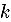
), Score Matching y DSM (2005–2011)
VAE, GAN, VQ-VAE, DDPM/SDE,
SoundStream/EnCodec (RVQ), LDM, DiT
Rectified Flow / MMDiT,
alineamiento REPA, difusión enmascarada de texto
(dLLM) y el códec full-duplex Mimi
(12.5 Hz)26
Para trabajar de manera eficaz con el manual se recomienda el
siguiente orden de lectura:
Sistema único de notación (sección siguiente):
antes de leer las fórmulas y el código, contraste los símbolos con el
glosario de dimensiones tensoriales y de los veintidós mecanismos
básicos; esto elimina las discrepancias entre la terminología de la
teoría del control (SSM), de la física estadística (difusión) y del
procesamiento del habla (transductores y códecs).
Búsqueda cronológica y por dominios entre los capítulos
(1958–2027): cada uno de los 70 capítulos lleva por título un
año y va acompañado, en la primera línea, de etiquetas de filtrado por
dominio (Base, Optimización, Codificador, Atención/LLM, MoE, Bucles/SSM,
Difusión, Vídeo, STT, TTS, STS). Dentro del capítulo se ofrecen la
derivación matemática del mecanismo clave del año, sus compromisos
computacionales y referencias del tipo (n.º 1)–(n.º 445) al índice
bibliográfico completo.
Verificación cuantitativa (Apéndice A): para
comparar rápidamente los modelos, utilice la Tabla A.1 (índice anual de
70 años) y las tablas temáticas A.2–A.6 (arquitecturas y puntos de
referencia de LLM, de modelos en bucle y de difusión, de generadores de
vídeo, de sistemas de habla y de bibliotecas de código abierto).
Implementación de ingeniería (Apéndice B): doce
listados modulares en PyTorch (B.1–B.12) permiten pasar de las
ecuaciones analíticas directamente a código tensorial funcional de cada
mecanismo.
Glosario de
términos y notación matemática
En la tabla siguiente se fijan las dimensiones y los operadores
transversales utilizados en todos los capítulos y listados de la
monografía:
Notación
Objeto matemático y dimensión
Significado físico / algorítmico
Números naturales
Tamaño del minilote (), longitud de la secuencia de tokens o de
fotogramas (), dimensión oculta del
modelo ( o )
Números naturales
Número de capas físicas únicas () y número de iteraciones recurrentes en
profundidad / bucles ()3
Números naturales
Número de cabezas de consulta (), número de cabezas de clave-valor ( en GQA/MQA) y dimensión de una cabeza ()30
Vectores
Vector de entrada en el paso y estado oculto en la capa en el paso
Matriz o
vector
Estado recurrente de tamaño fijo (pesos
rápidos / memoria asociativa) en los SSM y en la atención lineal25
Operadores tensoriales binarios
Producto de Hadamard elemento a elemento
() y producto externo/de Kronecker ()
Funciones de activación no lineales
Sigmoide logística y función
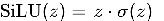
(Swish-1)
Funcional
Divergencia de Kullback—Leibler
A continuación se presentan las definiciones estrictas de los
mecanismos arquitectónicos y algorítmicos fundamentales:
Autodiferenciación en modo inverso (Reverse-Mode AD /
Backpropagation) — algoritmo para el cálculo exacto del
gradiente de una función de pérdida escalar
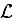
respecto de todos los nodos de un grafo
computacional acíclico en un tiempo proporcional al de una sola pasada
hacia delante, mediante la propagación recursiva de las derivadas
adjuntas de la salida hacia la
entrada7.
Tiempo de cómputo adaptativo (Adaptive Computation Time, ACT
/ Early Exit Gate) — mecanismo de asignación dinámica del
número de iteraciones recurrentes a
cada token mediante una compuerta de parada entrenable , que permite gastar más operaciones
aritméticas en las posiciones lógicamente complejas41.
Pesos rápidos y entrenamiento en tiempo de prueba (Fast
Weights / Test-Time Training, TTT) — parámetros de una subred
interna o matriz de memoria asociativa
que se actualizan dinámicamente durante la inferencia (mediante la regla
de Hebb, la regla delta o un paso de descenso de gradiente sobre una
pérdida autosupervisada) para comprimir un contexto largo en un volumen
fijo de memoria44.
Cuantización vectorial, residual y escalar finita (VQ / RVQ
/ FSQ) — discretización de un vector latente continuo mediante la búsqueda del elemento más
cercano del libro de códigos (VQ), la cuantización en cascada de los
residuos con libros de códigos
(Residual VQ en SoundStream, EnCodec, Mimi) o el redondeo directo
coordenada a coordenada en una retícula entera acotada, sin libro de
códigos entrenable (Finite Scalar Quantization en CosyVoice 3)46.
Atención con consultas agrupadas (Grouped-Query Attention,
GQA) y atención multiconsulta (MQA) — compartición de un único
conjunto de proyecciones de claves y valores entre las
cabezas de consulta (, MQA) o dentro de
grupos (, GQA) para reducir varias veces el tamaño de
la caché KV y el tráfico desde la memoria de vídeo HBM durante la
decodificación39.
Atención con caché latente comprimida (Multi-Head Latent
Attention, MLA) — mecanismo que proyecta el estado oculto en un
único vector de bajo rango (), con una rama aparte de baja dimensión para
la codificación posicional Decoupled RoPE; en la inferencia solo se
almacena en caché el latente comprimido, lo que reduce la memoria de la
caché KV en un 93.3% a nivel de modelo (hasta un 98.24% por capa
respecto a MHA de 128 cabezas)50.
Optimización de políticas relativa al grupo (Group Relative
Policy Optimization, GRPO) — algoritmo de aprendizaje por
refuerzo sin una red crítica independiente (value model) que estima la
ventaja estandarizando las recompensas
dentro de un grupo de trayectorias
generadas para un mismo prompt53.
Regla delta en la atención lineal (DeltaNet / Gated DeltaNet
/ KDA) — sustitución de la escritura aditiva por una reflexión de Householder
generalizada con atenuación
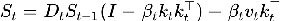
, que borra
el valor antiguo asociado a la clave
antes de escribir el nuevo valor (donde
es el escalar en GDN o la matriz diagonal en KDA)24.
Difusión discreta de texto (Masked / Uniform Diffusion
Language Models, dLLM / MDM / UDLM) — modelos de lenguaje no
autorregresivos basados en un transformador bidireccional que restauran
los tokens en paralelo a partir de máscaras [MASK] (MDM: MDLM, LLaDA,
Dream, Mercury) o de sustituciones aleatorias del vocabulario (UDLM),
minimizando una cota variacional ponderada de la verosimilitud35.
Alineamiento latente de representaciones (Representation
Alignment, REPA / JEPA) — familia de principios de
entrenamiento: en la comprensión del mundo visual (I-JEPA, V-JEPA), la
red predice las representaciones ocultas de bloques enmascarados en el
espacio del codificador EMA sin generar píxeles; en la generación por
difusión (REPA), las capas intermedias del DiT se alinean, por similitud
coseno, con las características de un maestro visual preentrenado (por
ejemplo, DINOv2)36.
Hiperconexiones restringidas a la variedad
(Manifold-Constrained Hyper-Connections, mHC) — ampliación del
flujo residual del transformador de un único vector a carriles
paralelos , donde la matriz de mezcla de
carriles se proyecta, mediante el algoritmo de Sinkhorn—Knopp, sobre el
polítopo de Birkhoff de las matrices doblemente estocásticas, para una
propagación de la señal no expansiva ()
a cualquier profundidad2.
Modelos de espacio de estados (Structured State Space
Models, SSM / S4 / Mamba) — sistemas dinámicos lineales , discretizados con el paso ; en los SSM selectivos (Mamba-1/2/3) los
parámetros
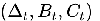
dependen de la entrada, lo
que proporciona un entrenamiento paralelo lineal en y una memoria constante por paso en la inferencia32.
Predicción multitoken (Multi-Token Prediction, MTP)
— arquitectura de entrenamiento y de decodificación autoespeculativa en
la que, sobre el tronco común del modelo, cabezas en cascada predicen
varios tokens de texto futuros o los niveles residuales de los libros de
códigos de audio RVQ29.
Impulso matricial ortogonalizado (Muon / MuonClip)
— optimizador para capas matriciales bidimensionales que sustituye el
escalado coordenada a coordenada del gradiente por una ortogonalización
aproximada de la matriz de momento
mediante iteraciones polinomiales de Newton—Schulz (), lo que nivela el espectro de valores
singulares del paso de actualización65.
Conexiones residuales con atención en profundidad (Attention
Residuals, AttnRes) — sustitución de la suma fija de las
salidas de todas las capas anteriores por una atención softmax
entrenable a lo largo del eje de profundidad (sobre los bloques
precedentes), que elimina la dilución de la norma de las características
en los transformadores Pre-LN profundos34.
Modelos de habla full-duplex (Full-Duplex Speech-to-Speech,
STS) — arquitecturas (Moshi, PersonaPlex, NemotronLabs
VoiceChat) que procesan de forma síncrona el flujo entrante de tokens de
audio del usuario y generan flujos paralelos de «monólogo interno»
(texto) y de tokens de audio de respuesta, sin segmentación en turnos
alternos, lo que admite interrupciones e interjecciones con una latencia
de 160–205 ms68.
Incrustaciones posicionales rotatorias (Rotary Position
Embedding, RoPE / p-RoPE / 3D-RoPE / TMRoPE) — codificación de
la posición relativa mediante la rotación de pares de coordenadas de las
consultas
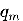
y de las claves en los ángulos , de modo que el producto escalar depende únicamente del desplazamiento ; se generaliza a la rotación de una fracción
del subespacio (-RoPE) y a los ejes
espaciotemporales del vídeo y del audio (3D-RoPE, TMRoPE)71.
Mezcla dispersa de expertos (Sparse Mixture-of-Experts, MoE
/ LatentMoE) — sustitución de la capa FFN densa por un conjunto
de subredes expertas con activación de
expertos por token; en
LatentMoE el vector de entrada se comprime previamente
en un latente de baja dimensión para reducir el tráfico de lectura de
pesos y el envío All-to-All entre servidores27.
Atención dispersa alineada con el hardware (NSA / DSA /
CSA) — mecanismos entrenables de atención dispersa (Native
Sparse Attention, DeepSeek Sparse Attention, Compressed Sparse
Attention) que emplean una compresión jerárquica por bloques o un
indexador ligero (lightning indexer) para seleccionar las top- claves por consulta, reduciendo la
complejidad de la atención de a 31.
Transformador recurrente en profundidad (en bucle) (Looped /
Recurrent-Depth Transformer, PLT) — arquitectura con
compartición de pesos en profundidad que hace pasar el estado oculto
veces por un mismo bloque de capas
(Huginn, Ouro); en el Parallel Loop Transformer (PLT),
las iteraciones sucesivas de tokens contiguos se ejecutan segmentadas
(en pipeline) en una única pasada paralela (Cross-Loop
Parallelism)3.
Flujos rectificados y emparejamiento de flujos (Flow
Matching / Rectified Flow) — entrenamiento de una EDO
generativa mediante la regresión
directa del campo de velocidades a lo largo de la interpolación lineal
entre los datos y el ruido gaussiano,
lo que permite una generación determinista rápida con un pequeño número
de pasos de Euler5.
Transductor de tokens y duraciones (Token-and-Duration
Transducer, TDT) — extensión del decodificador ASR en flujo
continuo RNN-T que predice conjuntamente el token de subpalabra y el
número de fotogramas acústicos que este
cubre, para omitir en la inferencia los tramos estacionarios y las
pausas79.
1958
Dominios: Base
El punto de partida del aprendizaje paramétrico de las redes neuronales
artificiales fue la publicación de Frank Rosenblatt «The Perceptron:
A Probabilistic Model for Information Storage and Organization in the
Brain» en la revista Psychological Review (n.º 1) y la
implementación por hardware de la máquina Mark I Perceptron en el
Laboratorio Aeronáutico de Cornell (simulada previamente en el mainframe
IBM 704)82. A diferencia de las puertas lógicas fijas de McCulloch y
Pitts (1943), el perceptrón de Rosenblatt separaba la retina sensorial
(bloque ), una capa de proyecciones
asociativas no lineales aleatorias (bloque , características
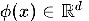
) y un sumador umbral entrenable (bloque ) que define el hiperplano separador:
La regla de corrección por error actualizaba los pesos solo en los objetos mal clasificados , donde
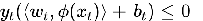
,
según la fórmula 83. En ese mismo año
1958 se publicó póstumamente la monografía de John von Neumann «The
Computer and the Brain» (n.º 2), que por primera vez contrastó la
arquitectura masivamente paralela y de baja frecuencia de la memoria
sináptica del cerebro con el cuello de botella secuencial de las
máquinas de cómputo digitales. Aunque ya en 1958 Rosenblatt consideraba
esquemas multicapa, carecía de un algoritmo diferenciable de asignación
de crédito para las capas ocultas7.
1959
Dominios: Codificador Base
En 1959 surgieron tres pilares conceptuales de las futuras redes
profundas: la jerarquía neurofisiológica de los filtros visuales, el
reconocimiento paralelo en cascada y el bootstrapping de la función de
evaluación a lo largo del tiempo. David Hubel y Torsten Wiesel, en un
artículo de The Journal of Physiology (n.º 3), descubrieron en
la corteza estriada del gato campos receptivos locales selectivos a la
orientación, que se convirtieron en el prototipo biológico de los
núcleos convolucionales85. Simultáneamente, Oliver Selfridge presentó en
el simposio de Teddington la arquitectura Pandemonium
(n.º 4), una jerarquía paralela de «demonios de características», de
«demonios cognitivos» que las ponderan y de un «demonio de decisión»
superior que selecciona el máximo de la respuesta 87. Ese mismo año Arthur Samuel publicó en
IBM Journal of Research and Development su célebre trabajo
sobre el juego autodidacta de damas (n.º 5), con el que consolidó el
término machine learning e introdujo la actualización de los
pesos del polinomio de evaluación a partir de la diferencia entre las
evaluaciones de la posición actual y de la siguiente, un prototipo
directo del método de diferencias temporales (TD learning) y del crítico
en el aprendizaje por refuerzo.
1960
Dominios: Base Optimización
La transición de la regla umbral discontinua del perceptrón a la
optimización suave por gradiente la llevaron a cabo Bernard Widrow y
Marcian Hoff, quienes presentaron el nodo lineal adaptativo
ADALINE y el algoritmo de mínimos cuadrados
LMS (Widrow–Hoff / Delta Rule, n.º 6)88. La novedad
esencial de ADALINE consistía en calcular el error a partir de la salida
lineal continua
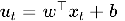
antes del
cuantizador umbral binario. El descenso de gradiente estocástico sobre
el error cuadrático instantáneo dio
lugar a la regla delta clásica:
Precisamente esta ecuación —reescrita para una memoria asociativa
matricial en la forma — constituye el
fundamento de los transformadores lineales modernos
DeltaNet y Gated DeltaNet
(2024–2026)25. Ese mismo año 1960, Henry Kelley publicó en ARS
Journal el artículo «Gradient Theory of Optimal Flight
Paths» (n.º 7), en el que dedujo el método continuo de las
ecuaciones adjuntas para la retropropagación de las derivadas del
funcional de coste a lo largo de la trayectoria de un sistema dinámico,
precursor analítico tanto de la retropropagación del error como de las
Neural ODE7.
1961
Dominios: Bucles Memoria Base
En 1961 el cibernético alemán Karl Steinbuch publicó en el primer
volumen de la revista Kybernetik el trabajo «Die
Lernmatrix» («La matriz de aprendizaje», n.º 8), la primera
arquitectura matricial de memoria heteroasociativa sobre una rejilla
cruzada de conductores91. En la matriz de Steinbuch, el vector de
características de entrada y el código
de clase se asociaban mediante una
regla local de tipo Hebb , y la
recuperación se realizaba mediante una multiplicación matriz-vector
paralela con selección competitiva del
máximo. Algebraicamente, la «matriz de aprendizaje» sentó el prototipo
de las memorias asociativas lineales modernas de clave–valor . Ese mismo año, Eduardo Caianiello, en el
Journal of Theoretical Biology (n.º 9), dividió la dinámica de
las redes neuronales en dos escalas de tiempo acopladas: las rápidas
«ecuaciones neuronales» de relajación de las activaciones y las lentas
«ecuaciones mnémicas» adiabáticas de plasticidad de los pesos
sinápticos.
1962
Dominios: Base Codificador
En abril de 1962, el matemático Albert Novikoff presentó una
demostración rigurosa y concisa del teorema de convergencia del
perceptrón (n.º 10; H. D. Block publicó ese mismo año cotas
afines, n.º 13)92. Novikoff mostró que, si una muestra con norma de entradas acotada es linealmente separable por un vector
unitario () con un margen positivo , el algoritmo del perceptrón, partiendo del
vector nulo , terminará en a lo sumo
actualizaciones. En cada ejemplo
erróneo el producto escalar con el oráculo crece como mínimo en
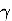
(),
mientras que la condición de error
acota superiormente el incremento del cuadrado de la norma por el valor
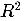
(),
de lo cual se sigue una cota totalmente independiente de la dimensión
del espacio 83:
Ese mismo año aparecieron la monografía final de Frank Rosenblatt
«Principles of Neurodynamics» (n.º 11), la arquitectura lineal
a trozos MADALINE de Bernard Widrow (n.º 12) y el
artículo clásico de Hubel y Wiesel (n.º 14), que describía la
alternancia de células simples (detectores lineales locales de
bordes) y células complejas (pooling espacialmente invariante)
en la corteza visual87.
1963
Dominios: Base Optimización
Desarrollando la geometría del margen de separación , Vladimir Vapnik y Alexander Lerner
publicaron en la revista «Automática y Telemecánica» el
artículo «Reconocimiento de patrones mediante retratos
generalizados» (n.º 15)97. En lugar de buscar un hiperplano
separador arbitrario, los autores formularon el problema de optimización
cuadrática de hallar el único hiperplano de margen
máximo (prototipo lineal del método de máquinas de vectores de
soporte, SVM), cuyo vector normal se descompone solo en términos de los
vectores de soporte extremos de la muestra . Con ello entró en la teoría del
aprendizaje el principio del control de la norma de los pesos
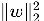
como medida de la capacidad del
clasificador. Ese mismo año Steinbuch y Piske publicaron en IEEE
Transactions on Electronic Computers un análisis de las matrices de
memoria continuas con señales ruidosas (n.º 16), y Stuart Dreyfus
simplificó la deducción de la regla de la cadena de los multiplicadores
adjuntos mediante programación dinámica (n.º 17)7.
1964
Dominios: Optimización Base
En 1964 se crearon tres herramientas matemáticas que funcionan
directamente en los marcos modernos de aprendizaje profundo. Borís
Teodórovich Poliak publicó en la «Revista de Matemática
Computacional y Física Matemática» el método inercial de la
«bola pesada» (Heavy-Ball Momentum) (n.º 18) para
acelerar el descenso de gradiente en problemas de barranco mal
condicionados100:
El término inercial suprime las
oscilaciones transversales del gradiente y reduce el número de condición
efectivo del problema cuadrático de a
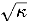
. Simultáneamente, Mark Aizerman,
Emmanuil Braverman y Lev Rozonoér introdujeron en «Automática y
Telemecánica» el método de las funciones
potenciales (n.º 19), una fundamentación rigurosa del truco
del núcleo, directamente
vinculada a la futura factorización por núcleos de la atención lineal20.
Ese mismo año Robert Wengert presentó en Communications of the
ACM (n.º 20) un algoritmo programático de diferenciación
automática en modo directo (Forward-Mode AD) sobre la lista de
operaciones elementales.
1965
Dominios: Base Optimización
En 1965 Alekséi Grigórievich Ivajnenko y Valentín Grigórievich Lapa
publicaron la monografía «Dispositivos cibernéticos de
predicción» (n.º 21), en la que describieron los primeros
algoritmos operativos de entrenamiento por capas de perceptrones
multicapa profundos con un número arbitrario de capas ocultas7.
Cada nodo de la red calculaba un polinomio cuadrático de
Kolmogórov—Gabor con productos multiplicativos de las entradas (, precursor algebraico de los bloques con
compuerta GLU y SwiGLU); los coeficientes se hallaban por mínimos
cuadrados, y una muestra de validación descartaba las neuronas
sobreajustadas antes de construir la capa siguiente7.
Paralelamente, Thomas Cover demostró en IEEE Transactions on
Electronic Computers el fundamental teorema de Cover sobre
la capacidad de separación lineal (n.º 22): el número de
particiones binarias linealmente realizables de puntos en posición general en
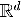
es igual a , lo que constituye exactamente la mitad de
las dicotomías cuando
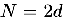
y tiende exponencialmente a cero cuando
. Este hecho geométrico explica la
necesidad de proyecciones anchas de características en las capas ocultas
de los MLP y de las MoE. El año se completó con el libro clásico de Nils
Nilsson «Learning Machines» (n.º 23)88 y el método de gradiente
de Ho—Kashyap para sistemas de desigualdades lineales (n.º 24).
1966
Dominios: Optimización Base
En 1966 Yákov Zalmánovich Tsypkin, en el trabajo «Adaptación,
aprendizaje y autoaprendizaje en sistemas automáticos»
(Automática y Telemecánica, n.º 25), redujo las reglas
dispersas de los perceptrones, de ADALINE y del filtrado a un único
problema variacional de minimización de la esperanza matemática
de la función de pérdida (riesgo medio) mediante la aproximación estocástica
recurrente de Robbins—Monro 105. Este
planteamiento se convirtió en el lenguaje estándar de la teoría moderna
de la optimización de redes neuronales. Ese mismo año, Emmanuil
Braverman extendió el método de las funciones potenciales al problema
del autoaprendizaje y del agrupamiento sin supervisión (n.º 26)20, y
Lawrence Fogel, Alvin Owens y Michael Walsh publicaron la monografía
«Artificial Intelligence through Simulated Evolution» (n.º 27),
que inauguró la línea de la búsqueda evolutiva sin gradientes.
1967
Dominios: Base Optimización
En junio de 1967, Shun'ichi Amari publicó en IEEE Transactions on
Electronic Computers el artículo «A Theory of Adaptive Pattern
Classifiers» (n.º 28), el primer trabajo de la historia en el que
el descenso de gradiente estocástico de extremo a extremo
(end-to-end SGD) se aplicó al entrenamiento de una red neuronal
multicapa con capas ocultas no lineales sobre distribuciones linealmente
no separables7. Al sustituir el escalón umbral por funciones de
activación suaves y diferenciables, Amari dedujo la regla en cadena de
corrección de los pesos ocultos y
entrenó experimentalmente un clasificador de 5 capas diecinueve años
antes de la publicación de 1986 en Nature7.
Ese mismo año aparecieron dos trabajos de enorme importancia
prospectiva: Thomas Cover y Peter Hart demostraron la estimación
asintótica del error de la regla del vecino más cercano (, n.º 29), sentando la base teórica de la
búsqueda vectorial y de los sistemas RAG, y Richard Sinkhorn y Paul
Knopp publicaron en Pacific Journal of Mathematics el teorema y
el algoritmo iterativo de normalización alterna de las filas y las
columnas de una matriz positiva hasta su forma doblemente estocástica
(n.º 30), precisamente el operador Sinkhorn–Knopp que a
caballo entre 2025 y 2026 aseguró la estabilidad de las hiperconexiones
multicarril mHC en las arquitecturas de DeepSeek2.
1968
Dominios: Base Bucles
En 1968 Alekséi Ivajnenko formalizó el Método de contabilización
grupal de argumentos (MGUA / Group Method of Data Handling,
GMDH) en la revista «Automática» (n.º 31)104,
sistematizando el crecimiento automático de redes polinomiales profundas
con selección regular de las mejores neuronas y detención temprana de la
profundidad sobre un conjunto de validación independiente.
Paralelamente, Stephen Grossberg publicó en PNAS el modelo no
lineal de aprendizaje asociativo Outstar y un sistema
de ecuaciones diferenciales de la memoria a corto plazo (STM) y a largo
plazo (LTM) (n.º 32)109:
demostrando la convergencia incondicional de los pesos sinápticos a las
proporciones espaciales del patrón de entrada. Ese mismo año Vladimir
Vapnik y Alexey Chervonenkis publicaron en los «Doklady de la
Academia de Ciencias de la URSS» el teorema sobre la convergencia
uniforme de las frecuencias empíricas a las probabilidades sobre una
clase de sucesos, introduciendo una medida combinatoria de la capacidad
de las familias de funciones, la dimensión de
Vapnik—Chervonenkis (dimensión VC) (n.º 33).
1969
Dominios: Base Codificador Optimización
En 1969 Marvin Minsky y Seymour Papert publicaron la monografía
analítica «Perceptrons: An Introduction to Computational
Geometry» (n.º 34)7. Con ayuda de la teoría de invariantes de
grupos, los autores demostraron rigurosamente la imposibilidad de
realizar el predicado de paridad (incluido el XOR de
dos bits) y el predicado topológico de conectividad mediante un
perceptrón monocapa con características locales de orden acotado. Aunque
los autores señalaron que las redes multicapa están libres de esta
limitación, la ausencia de un algoritmo eficaz de entrenamiento de las
capas ocultas ampliamente conocido en Occidente provocó un enfriamiento
del interés por el conexionismo en el ámbito académico anglófono7.
Sin embargo, ese mismo año 1969 se publicaron dos elementos clave del
aprendizaje profundo moderno. Arthur Bryson y Yu-Chi Ho, en el libro
«Applied Optimal Control» (n.º 35), escribieron fórmulas
discretas explícitas de la retropropagación de los multiplicadores de
Lagrange a través de cascadas multipaso 7. Simultáneamente, Kunihiko Fukushima, en
el artículo «Visual Feature Extraction by a Multilayered Network of
Analog Threshold Elements» (IEEE Transactions on Systems
Science and Cybernetics, n.º 36)85, introdujo una red visual
multicapa con rectificadores analógicos de media onda, históricamente la primera aplicación
de la función de activación ReLU en redes neuronales
multicapa7.
1970
Dominios: Base Optimización
En 1970 el matemático finlandés Seppo Linnainmaa defendió en la
Universidad de Helsinki su tesis de maestría (n.º 37)7, en la que
formuló por primera vez, e implementó en código de máquina, el algoritmo
general de diferenciación automática en modo inverso
(Reverse-Mode Automatic Differentiation) para grafos
computacionales arbitrarios. Si el cálculo de la función de pérdida
escalar se descompone en nodos
elementales (), la pasada inversa de a acumula
recursivamente las derivadas parciales:
El cálculo del vector gradiente completo respecto de un número arbitrario de
parámetros requiere un factor
constante del número de operaciones de una sola pasada hacia delante114.
Ese mismo año 1970, Broyden, Fletcher, Goldfarb y Shanno dedujeron de
forma independiente el método cuasi-Newton de segundo orden
BFGS (n.º 38), e Ivajnenko publicó en la revista
internacional Automatica una reseña sobre la autoorganización
heurística de las redes profundas (n.º 39)115.
1971
Dominios: Base Memoria
En octubre de 1971 Alekséi Ivajnenko publicó en IEEE Transactions on
Systems, Man, and Cybernetics el artículo «Polynomial Theory of
Complex Systems» (n.º 40)115, en el que describió con detalle la
construcción y el entrenamiento de una red profunda de 8
capas de propagación hacia delante mediante el método GMDH, con
selección regularizada de características sobre una muestra de
validación7. Esta publicación se convirtió en uno de los primeros
ejemplos, ampliamente citados en la literatura internacional, de
entrenamiento práctico de una arquitectura profunda de ocho
capas7.
Ese mismo año David Marr publicó en Philosophical Transactions of
the Royal Society B un modelo matemático del hipocampo, «Simple
Memory: A Theory for Archicortex» (n.º 41)7. Marr mostró que la
codificación dispersa de vectores de entrada en un espacio de alta
dimensión, combinada con la plasticidad local de Hebb y un umbral
inhibitorio adaptativo, permite registrar un gran volumen de
asociaciones episódicas en una sola pasada y recuperarlas sin errores a
partir de indicios parciales, principio que subyace en los módulos
dispersos modernos de memoria externa y paramétrica.
1972
Dominios: Bucles Memoria
En noviembre de 1972 Shun'ichi Amari publicó en IEEE Transactions on
Computers el artículo «Learning Patterns and Pattern Sequences
by Self-Organizing Nets of Threshold Elements» (n.º 42), en el que,
diez años antes de la publicación de Hopfield, dedujo las ecuaciones de
estabilidad de las redes asociativas recurrentes discretas (red
de Amari—Hopfield), tanto para atractores estáticos con matriz
de pesos simétrica como para cadenas dinámicas de secuencias con matriz
asimétrica7:
Ese mismo año 1972 Teuvo Kohonen introdujo de forma independiente, en
IEEE Transactions on Computers, las memorias matriciales de
correlación (n.º 43)118, James Anderson describió una memoria
interactiva lineal con umbral en Mathematical Biosciences (n.º
44), Kaoru Nakano construyó el sistema asociativo
Associatron (n.º 45)7, y Hugh Wilson y Jack Cowan
dedujeron en Biophysical Journal un sistema no lineal de EDO
para poblaciones neuronales excitadoras e inhibidoras acopladas (, n.º 46), demostrando analíticamente el
vínculo entre los ciclos límite de las oscilaciones y la histéresis
multiestable de la memoria119.
1973
Dominios: Codificador Bucles
En 1973 Christoph von der Malsburg publicó en Kybernetik el
artículo «Self-Organization of Orientation Sensitive Cells in the
Striate Cortex» (n.º 47)115, la primera demostración computacional
del aprendizaje competitivo (competitive learning) de
detectores de características locales. Combinando la excitación
intracortical de corto alcance, la inhibición lateral y la regla de Hebb
con la conservación de la norma de las sinapsis de entrada de cada
neurona (), von der Malsburg
mostró la formación espontánea, sin supervisión, de mapas ordenados de
columnas de orientación.
Simultáneamente, Stephen Grossberg publicó en Studies in Applied
Mathematics un riguroso análisis de las redes recurrentes
de derivación (shunting) con saturación multiplicativa e
inhibición lateral divisiva (n.º 48)109: demostró que precisamente la
característica de transferencia sigmoidal suprime el ruido de fondo de
pequeña amplitud y conserva el contraste relativo del patrón sin
saturación aun con un crecimiento arbitrario del brillo total de la
entrada, fundamento teórico de las capas de normalización de
activaciones. Hugh Wilson y Jack Cowan generalizaron su dinámica de
poblaciones a campos neuronales espacialmente continuos de la corteza y
el tálamo (n.º 49)124.
1974
Dominios: Base Optimización Bucles
En 1974 Paul Werbos defendió en la Universidad de Harvard su tesis
doctoral «Beyond Regression: New Tools for Prediction and Analysis
in the Behavioral Sciences» (n.º 50)7. Werbos formuló el método de
la «retroalimentación dinámica», con fórmulas explícitas de
retropropagación en cadena de las derivadas de la función objetivo a
través de redes multicapa arbitrarias con nodos no lineales, preparando
la aplicación directa del método a las redes neuronales a comienzos de
la década de 1980115.
Ese mismo año el físico William Little publicó en Mathematical
Biosciences el artículo «The Existence of Persistent States in
the Brain» (n.º 51)126, que estableció una correspondencia directa
entre la física estadística de los sistemas de espines de
Ising y las redes neuronales recurrentes estocásticas. Al
introducir la temperatura efectiva del ruido sináptico
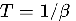
y la probabilidad logística de disparo de
la neurona
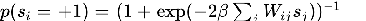
, Little describió la
memoria a largo plazo como los estados propios superiores degenerados de
la matriz de transición de Markov, fundamento de las máquinas de
Boltzmann y de los modelos generativos termodinámicos.
1975
Dominios: Codificador Memoria Base
En 1975 Kunihiko Fukushima presentó en Biological Cybernetics
la red multicapa autoorganizada Cognitron (n.º 52)86.
En el Cognitron, los campos receptivos locales excitadores e inhibidores
se combinaban con una razón divisiva de derivación y con el refuerzo competitivo de las
sinapsis únicamente de la neurona más activa del entorno; con todo, la
red aún no compartía los pesos en todo el plano y por ello seguía siendo
sensible a los desplazamientos de la imagen129.
Paralelamente aparecieron tres trabajos emblemáticos en áreas afines:
James Albus creó la arquitectura de hashing local rápido del controlador
cerebeloso CMAC, con campos receptivos gruesos
superpuestos (n.º 53)130; David Sherrington y Scott Kirkpatrick
introdujeron en Physical Review Letters el modelo resoluble de
vidrio de espín SK con enlaces aleatorios de signo
alternante (n.º 54)126, cuyo método
analítico de réplicas sirvió de base para el cálculo de las transiciones
de fase y de la capacidad de las redes neuronales; y John Holland
publicó la monografía «Adaptation in Natural and Artificial
Systems» (n.º 55), que sentó las matemáticas de los algoritmos
genéticos.
1976
Dominios: Optimización Bucles Base
En junio de 1976 Seppo Linnainmaa publicó en la revista internacional
BIT Numerical Mathematics el artículo en inglés «Taylor
Expansion of the Accumulated Rounding Error» (n.º 56)23. Además de
los algoritmos completos de primer orden y de órdenes superiores de
diferenciación inversa sobre el grafo computacional, Linnainmaa analizó
por primera vez el problema fundamental de la memoria de la pasada
inversa —la necesidad de conservar los estados intermedios de todas las
operaciones— y los modos de reducir el consumo máximo de memoria,
anticipando las técnicas modernas de recómputo selectivo de activaciones
(activation / gradient checkpointing, empleado, en
particular, en el entrenamiento de Ring Attention y de DeepSeek
mHC2).
Ese mismo año Stephen Grossberg, en un trabajo en dos partes en
Biological Cybernetics (n.º 57)126, formuló el dilema
estabilidad—plasticidad (cómo reentrenar una red con nuevas
clases sin destruir catastróficamente las representaciones aprendidas
previamente) y propuso un mecanismo de filtrado resonante de las
características ascendentes mediante expectativas descendentes
(Adaptive Resonance Theory, ART), mientras que David
Willshaw y Christoph von der Malsburg construyeron un modelo sináptico
de autoorganización de proyecciones topográficas continuas de la retina
(n.º 58).
1977
Dominios: Bucles Memoria Optimización
En 1977 James Anderson, Jack Silverstein, Stephen Ritz y Randall Jones
publicaron en Psychological Review el modelo recurrente no
lineal de memoria categorial Brain-State-in-a-Box (BSB)
(n.º 59)122, que limita la trayectoria de la retroalimentación positiva
a las paredes del hipercubo unitario :
La matriz simétrica de conexiones de Hebb refuerza las proyecciones a lo largo de los
vectores propios principales hasta que el estado se estabiliza en un
vértice del hipercubo correspondiente a un prototipo discreto puro de la
memoria. Ese mismo año Shun'ichi Amari publicó la teoría matemática
canónica de las excitaciones localizadas («bumps» de la memoria de
trabajo) en campos neuronales continuos con inhibición lateral (n.º
60)124, Teuvo Kohonen publicó la monografía «Associative
Memory» (n.º 61), y Arthur Dempster, Nan Laird y Donald Rubin
formalizaron en JRSS-B el algoritmo EM de
maximización de la verosimilitud de modelos con variables latentes
mediante la cota variacional de Jensen (n.º 62), fundamento analítico
del entrenamiento de las MoE y de los autocodificadores
variacionales.
1978
Dominios: Memoria Bucles Base
En 1978 William Little y Gordon Shaw publicaron en Mathematical
Biosciences el trabajo «Analytic Study of the Memory Storage
Capacity of a Neural Network» (n.º 63)127. Resolviendo
analíticamente un modelo linealizado de red neuronal estocástica con
conexiones plásticas, los autores mostraron rigurosamente que la
capacidad informacional de la memoria neuronal distribuida escala
proporcionalmente al número de sinapsis y no al número de neuronas 127. En la ingeniería actual, esta ley
explica precisamente por qué el almacenamiento de los hechos del mundo
exige escalar el número total de parámetros de pesos hasta cientos de
miles de millones y billones en las arquitecturas MoE dispersas, incluso
cuando para procesar un token basta un pequeño subconjunto activo de
neuronas.
Ese mismo año Gideon Schwarz introdujo en Annals of Statistics
el criterio de información bayesiano BIC para
seleccionar la dimensión de los modelos paramétricos (n.º 64), Stephen
Grossberg presentó la teoría del chunking jerárquico de secuencias en la
memoria de trabajo (n.º 65)109, y Kunihiko Fukushima perfeccionó la
regla sináptica de tipo cuadrático medio para el autoaprendizaje
profundo sin supervisión (n.º 66)129.
1979
Dominios: Codificador Base
En octubre de 1979 Kunihiko Fukushima publicó en la revista japonesa
Transactions of the IECE of Japan (volumen J62-A, n.º 10, pp.
658–665) el primer artículo sobre la arquitectura
Neocognitron, la primera red neuronal convolucional
profunda invariante al desplazamiento espacial de los patrones de
entrada (n.º 67)7. Inspirándose en el descubrimiento de Hubel y Wiesel,
Fukushima organizó la red como una alternancia de varias etapas de pares
de capas de dos tipos: planos de células , en los que todas las neuronas de
un mismo plano tienen pesos compartidos idénticamente iguales
(weight sharing) y extraen una característica local en cada punto del
campo bidimensional (operación de convolución 2D con rectificador ReLU),
y planos de células ,
que agregan las respuestas del entorno local de las células con reducción de la resolución (operación de
pooling espacial), gracias a lo cual la tolerancia al error de
desplazamiento se acumula suavemente de capa en capa sin perder la
geometría mutua de los detalles87. Ese mismo año Leon Cooper, F.
Liberman y Erkki Oja publicaron en Biological Cybernetics un
modelo sináptico de formación de la selectividad de las neuronas de la
corteza visual (n.º 68).
1980
Dominios: Codificador Optimización
En abril de 1980 apareció en Biological Cybernetics (vol. 36,
pp. 193–202) la clásica publicación en inglés de Kunihiko Fukushima
«Neocognitron: A Self-Organizing Neural Network Model for a
Mechanism of Pattern Recognition Unaffected by Shift in Position»
(n.º 69)86, que dio a conocer a toda la comunidad mundial la jerarquía
de convolución y pooling. La respuesta de la célula en la posición del plano de características de la capa ,
con inhibición divisiva por la actividad cuadrática media en la ventana local , venía dada por la ecuación:
Con ello quedó construida por completo toda la topología estructural de
las redes visuales profundas —convoluciones 2D multicanal con
compartición de pesos, rectificación ,
normalización local cuadrática media y pooling espacial—, a la espera de
que las reglas locales de autoorganización fueran sustituidas por el
descenso de gradiente global87. Ese mismo año Stephen Grossberg publicó
en Psychological Review un artículo de síntesis sobre los
códigos cognitivos resonantes (n.º 70), y Walter Baur y Volker Strassen
demostraron el célebre teorema de complejidad algebraica (Baur–Strassen
Theorem, n.º 71): el cálculo del gradiente de cualquier función racional
de varias variables sobre un circuito aritmético requiere como máximo
cinco veces el número de operaciones del cálculo de la propia
función114.
1981
Dominios: Memoria Bucles Optimización
En 1981 Geoffrey Hinton y James Anderson publicaron la monografía
colectiva programática «Parallel Models of Associative Memory»
(n.º 72)140, que fundamentó la transición de los nodos simbólicos
localistas («un concepto, una celda») a las representaciones
vectoriales distribuidas densas (distributed representations),
en las que cada concepto se codifica mediante un patrón de actividad de
muchos elementos, lo que garantiza una generalización automática por
similitud de microcaracterísticas. Ese mismo año James McClelland y
David Rumelhart presentaron en Psychological Review el
modelo de activación interactiva de la percepción de
letras y palabras, con retroalimentaciones bidireccionales entre capas
(n.º 73), y Andrew Barto, Richard Sutton y Peter Brouwer publicaron en
Biological Cybernetics el modelo de la red asociativa
de búsqueda (n.º 74), que unía la generación estocástica de
acciones con el aprendizaje a partir de una señal escalar de refuerzo,
precursor directo de los métodos de gradiente del aprendizaje por
refuerzo.
1982
Dominios: Bucles Memoria Codificador Base
En abril de 1982 John Hopfield publicó en PNAS el célebre
artículo «Neural Networks and Physical Systems with Emergent
Collective Computational Abilities» (n.º 75)124. Asociando a una
red recurrente binaria con matriz de
pesos simétrica (
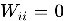
) una función de energía de
Lyapunov física explícita:
Hopfield demostró que la energía no crece de manera monótona () bajo actualizaciones umbral asíncronas
y que la dinámica converge a mínimos
locales, los atractores de memoria direccionables por contenido (la
capacidad de la variante binaria clásica es de aproximadamente patrones no correlacionados, mientras que
las redes de Hopfield exponenciales modernas de 2016–2020 tienen
capacidad exponencial y son equivalentes a la atención softmax del
transformador142).
Ese mismo año 1982 Paul Werbos publicó por primera vez de forma
explícita, en la conferencia IFIP, la aplicación de la retropropagación
del error directamente a las redes neuronales artificiales (n.º 76)7;
Teuvo Kohonen creó los mapas autoorganizados de características
(SOM) topográficos (n.º 77); Erkki Oja dedujo la regla de
plasticidad local normalizada
(regla de Oja, n.º 78), que extrae el vector propio
principal de la matriz de covarianza de los datos (PCA neuronal);
Bienenstock, Cooper y Munro propusieron la regla no lineal de
modificación sináptica con umbral deslizante BCM (n.º
79); y se publicó póstumamente el libro fundamental de David Marr
«Vision» (n.º 80).
1983
Dominios: Optimización Bucles
En 1983 Yuri Evguénievich Nesterov publicó en los «Doklady de la
Academia de Ciencias de la URSS» (Soviet Mathematics
Doklady, 27(2), 372–376) un método óptimo de minimización de
funciones convexas suaves con velocidad de convergencia , el método de gradiente acelerado
de Nesterov (NAG) (n.º 81)143:
El cálculo del gradiente en el punto inercial anticipado permitió corregir la trayectoria en los
giros bruscos del paisaje de pérdida y se convirtió en un estándar en
las modificaciones modernas de SGD, en NAdam y en el momento
ortogonalizado de Muon. En el número de mayo de Science, Scott
Kirkpatrick, Charles Gelatt y Mario Vecchi presentaron la optimización
global estocástica por el método de recocido simulado (Simulated
Annealing) con la probabilidad de transición de Metropolis
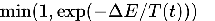
(n.º 82)144, y Andrew Barto, Richard Sutton
y Charles Anderson publicaron en IEEE TSMC la arquitectura
neuronal Actor–Critic sobre la tarea de mantener en
equilibrio un péndulo invertido (n.º 83)144.
1984
Dominios: Base Bucles Difusión
En noviembre de 1984 Leslie Valiant publicó en Communications of the
ACM el artículo «A Theory of the Learnable» (n.º 84)146,
que sentó el riguroso fundamento computacional-estadístico del
aprendizaje probablemente aproximadamente correcto (PAC
Learning): la formalización de la complejidad muestral y
computacional de alcanzar un error de generalización
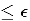
con confianza . Ese mismo año John Hopfield generalizó su
modelo a circuitos dinámicos continuos con una sigmoide monótona suave
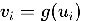
y un funcional de Lyapunov continuo
(n.º 85), los hermanos Stuart y Donald Geman introdujeron en IEEE
TPAMI el muestreo de Gibbs (Gibbs Sampling) sobre
campos aleatorios de Markov con distribución de Gibbs para la restauración bayesiana de imágenes
ruidosas (n.º 86), y Teuvo Kohonen publicó la monografía ampliada
«Self-Organization and Associative Memory» (n.º 87).
1985
Dominios: Base Memoria Difusión
En 1985 David Ackley, Geoffrey Hinton y Terrence Sejnowski publicaron en
Cognitive Science el algoritmo de entrenamiento de las
máquinas de Boltzmann (n.º 88)146, redes energéticas
estocásticas con variables ocultas que modelan la distribución de los vectores
visibles mediante la marginalización
. El gradiente de la divergencia de
Kullback—Leibler respecto del peso simétrico se reducía a la diferencia de las
correlaciones por pares en dos regímenes termodinámicos:
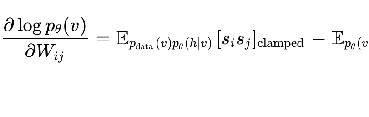
Aunque el prolongado recocido MCMC limitaba el tamaño de las máquinas de
Boltzmann totalmente conectadas, esta fue la primera demostración
teóricamente rigurosa del aprendizaje de representaciones distribuidas
profundas en redes generativas150. Ese mismo año 1985 Yann LeCun, en la
conferencia Cognitiva 85 de París (n.º 89), y David Parker, en
el informe del MIT «Learning-Logic» (n.º 90), publicaron de
forma independiente esquemas de gradiente de la retropropagación del
error para redes multicapa, y David Rumelhart y David Zipser
sistematizaron el agrupamiento competitivo de características (n.º
91).
1986
Dominios: Base Bucles Optimización
En octubre de 1986 David Rumelhart, Geoffrey Hinton y Ronald Williams
publicaron en Nature el célebre artículo «Learning
Representations by Back-Propagating Errors» (n.º 92),
simultáneamente con la aparición de la obra fundamental en dos volúmenes
del grupo PDP «Parallel Distributed Processing» (MIT Press, n.º
93)7. Los autores mostraron que un perceptrón multicapa (MLP) con
activaciones suaves , entrenado
mediante la propagación recursiva del vector de sensibilidad:
construye en las capas intermedias representaciones semánticas no
triviales y resuelve predicados no linealmente separables151. En esa
misma edición de PDP, Paul Smolensky introdujo la red energética
bipartita sin conexiones intracapa Harmonium,
matemáticamente equivalente a la máquina de Boltzmann
restringida (RBM), con inferencia condicional exacta en un paso
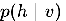
(n.º 94); Michael Jordan propuso una
red recurrente con retroalimentación de la salida al vector de estado de
contexto (Jordan RNN,
n.º 95); y Terrence Sejnowski y Charles Rosenberg demostraron el
sintetizador de transcripción fonémica de texto inglés
NETtalk (n.º 96).
1987
Dominios: STT Bucles Codificador
En 1987 Alexander Waibel, Toshiyuki Hanazawa, Geoffrey Hinton, Kiyohiro
Shikano y Kevin Lang crearon la Time-Delay Neural Network
(TDNN) para el reconocimiento de fonemas del habla (n.º 97)87,
la primera red convolucional unidimensional a lo largo del eje temporal
con pesos compartidos, invariante al desplazamiento de los formantes
acústicos y entrenable mediante retropropagación del error. Ese mismo
año Geoffrey Hinton y David Plaut publicaron el trabajo «Using Fast
Weights to Deblur Old Memories» (n.º 98)45, dotando a cada conexión
de un par formado por un peso lento de largo plazo y un peso de contexto
de rápida atenuación (Fast Weights), fuente conceptual
directa de las capas modernas de atención lineal y del aprendizaje en
tiempo de prueba (TTT y Titans). Paralelamente, Dana Ballard propuso en
la conferencia AAAI el preentrenamiento modular por capas de jerarquías
profundas mediante una pila de autocodificadores (n.º
99), Gail Carpenter y Stephen Grossberg formalizaron la arquitectura de
resonancia adaptativa ART 1 (n.º 100)110, y Fernando
Pineda dedujo en Physical Review Letters la retropropagación
continua de gradientes para los puntos fijos de atractores recurrentes
(Recurrent
Backpropagation, n.º 101), precursor analítico de las redes de
equilibrio DEQ.
1988
Dominios: Codificador Optimización Bucles
En 1988 Wei Zhang y sus coautores publicaron la primera red
neuronal convolucional bidimensional invariante al desplazamiento
(Shift-Invariant 2D CNN) para el reconocimiento de caracteres,
entrenada directamente mediante retropropagación del error (n.º 102)20.
David Broomhead y David Lowe introdujeron en Complex Systems
las redes de funciones de base radial (RBF Networks) (n.º 103). En la teoría del
aprendizaje, Richard Sutton publicó en la revista Machine
Learning el trabajo fundamental sobre el aprendizaje por
diferencias temporales TD()
(n.º 104)152, que actualiza los parámetros del predictor según el
residuo de Bellman antes de que
concluya el episodio. Simultáneamente, Hervé Bourlard e Yves Kamp
demostraron que un autocodificador lineal con cuello de botella de
dimensión aprende un proyector
ortogonal sobre los subespacios singulares principales de la SVD (n.º
105), y Bart Kosko introdujo la memoria heteroasociativa bidireccional
BAM (n.º 106).
1989
Dominios: Codificador Base Optimización Bucles
En 1989 Yann LeCun, Bernhard Boser, John Denker, Donnie Henderson,
Richard Howard, Wayne Hubbard y Lawrence Jackel publicaron en Neural
Computation el artículo «Backpropagation Applied to Handwritten
Zip Code Recognition» (n.º 107)87, en el que entrenaron una red
convolucional profunda con filtros compartidos de 5×5 y submuestreo
(stride 2) directamente sobre los píxeles normalizados de los códigos
postales manuscritos de USPS, y demostraron una mejora drástica de la
generalización gracias a la compartición espacial de pesos. Ese mismo
año George Cybenko (n.º 108) y, de forma independiente, Kurt Hornik,
Maxwell Stinchcombe y Halbert White (n.º 109) demostraron el
teorema de aproximación universal de funciones
continuas sobre compactos mediante perceptrones de dos capas con
activación no polinomial. El año quedó marcado también por el algoritmo
de entrenamiento en línea de redes recurrentes RTRL de
Ronald Williams y David Zipser (n.º 110), por la creación del
Q-learning en la tesis de Christopher Watkins (n.º
111), por el método de memoria limitada L-BFGS de Dong
Liu y Jorge Nocedal (n.º 112)153 y por la interpretación probabilística
de la función Softmax de John Bridle (n.º 113).
1990
Dominios: Bucles Optimización Base
En 1990 Jeffrey Elman publicó en Cognitive Science el artículo
«Finding Structure in Time» (n.º 114)154, que convirtió la
red recurrente simple (Simple RNN / Elman Network)
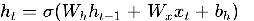
en la herramienta básica de modelado de
secuencias y mostró la aparición espontánea de agrupamientos
sintáctico-semánticos en el espacio oculto al predecir la palabra
siguiente. Paul Werbos fijó en Proceedings of the IEEE la
formulación general de la retropropagación a través del tiempo
(BPTT) mediante el desdoblamiento paso a paso del grafo (n.º
115). En la conferencia NIPS, Yann LeCun, John Denker y Sara Solla
presentaron el método de poda dispersa de pesos de segundo orden
Optimal Brain Damage (OBD) basado en la diagonal del
hessiano (n.º 116), precursor directo
de los algoritmos modernos de compresión de LLM. Paralelamente, Jürgen
Schmidhuber propuso un juego minimax de dos redes en el marco de la
curiosidad artificial adversarial (n.º 117)7, y Lars
Hansen y Peter Salamon fundamentaron la reducción de la varianza del
error en los conjuntos (ensembles) de redes neuronales
(n.º 118).
1991
Dominios: MoE Bucles Atención/LLM Base
En 1991 se sentaron tres mecanismos fundamentales que determinan la
arquitectura de los modelos insignia de 2024–2027. Robert Jacobs,
Michael Jordan, Steven Nowlan y Geoffrey Hinton publicaron en Neural
Computation el artículo «Adaptive Mixtures of Local
Experts» (la primera MoE, n.º 119)156. Al
sustituir el promedio del error cuadrático por la maximización del
logaritmo de la verosimilitud de una mezcla gaussiana bajo el control de
una red de compuerta :
los autores lograron una especialización competitiva de los expertos
en distintas regiones del espacio de
entrada, ya que el gradiente lo recibe preferentemente el experto con
mayor responsabilidad a posteriori sobre el ejemplo.
En junio de ese mismo año 1991 Sepp Hochreiter defendió, bajo la
dirección de Jürgen Schmidhuber, su trabajo de diploma (n.º 120)7, en el
que ofreció por primera vez un análisis riguroso del
desvanecimiento y la explosión de los gradientes en
redes profundas y recurrentes mediante el producto de jacobianos
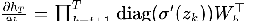
. Y en la primavera de 1991 Schmidhuber
propuso la arquitectura Fast Weight Programmers (n.º
121; publicación en revista en 1992)7, en la que una red lenta genera
dinámicamente vectores de claves y valores para la reescritura aditiva
de la matriz de pesos rápidos y su
lectura , una construcción
matemáticamente isomorfa a la autoatención lineal sin normalizar22. El
año se cerró con los autocodificadores no lineales de cinco capas de
Mark Kramer (n.º 122) y con el manual clásico de mecánica estadística de
las redes neuronales de Hertz, Krogh y Palmer (n.º 123).
1992
Dominios: Optimización Bucles Base
En 1992 Ronald Williams publicó en Machine Learning la
estimación del gradiente de política REINFORCE con una
línea base sustraída para reducir la
varianza (n.º 124):
que se convirtió en la base directa de la optimización de los modelos de
lenguaje con razonamiento mediante los métodos PPO y GRPO53.
Simultáneamente, Jürgen Schmidhuber introdujo en Neural
Computation el compresor neuronal de la historia
(n.º 125)22, un preentrenamiento autosupervisado jerárquico de RNN que
transmite al nivel superior solo los tokens impredecibles
(«sorprendentes»), con la posterior compresión («destilación») de un
maestro profundo en una red alumna compacta7. Boris Poliak y Anatoli
Yuditski demostraron la optimalidad asintótica del promediado de
la trayectoria de los pesos de SGD (n.º 126), fundamento teórico de los
objetivos EMA en DINO, JEPA y la difusión; Anders Krogh y John Hertz
fundamentaron la regularización por decaimiento de pesos (Weight
Decay, n.º 127); y Boser, Guyon y Vapnik unieron el margen del
hiperplano con el truco del núcleo en COLT (n.º 128).
1993
Dominios: Codificador Base Optimización
En 1993 Jane Bromley, Isabelle Guyon, Yann LeCun y sus coautores
presentaron en NIPS las redes neuronales siamesas (Siamese
Networks) (n.º 129): dos torres convolucionales idénticas con
pesos compartidos proyectan un par de entradas a un espacio métrico
común de similitud coseno, paradigma que subyace en todos los
codificadores contrastivos modernos (CLIP, SigLIP, recuperación densa).
En la conferencia COLT, Geoffrey Hinton y Drew van Camp formularon el
principio de la longitud mínima de descripción de los pesos mediante la
minimización de la energía libre variacional (inferencia bayesiana variacional
en redes neuronales, n.º 130), que anticipó el funcional ELBO.
Ese mismo año Andrew Barron demostró la independencia de la velocidad de
aproximación por una red de dos capas
respecto de la dimensión del espacio
para funciones con norma espectral de Fourier acotada (n.º 131), y Babak
Hassibi y David Stork generalizaron la poda por hessiano al
Optimal Brain Surgeon (OBS) completo, no diagonal (n.º
132), base matemática de los cuantizadores de pesos de LLM modernos
(GPTQ).
1994
Dominios: Bucles MoE Optimización
En 1994 Yoshua Bengio, Patrice Simard y Paolo Frasconi publicaron en
IEEE Transactions on Neural Networks el riguroso teorema
«Learning Long-Term Dependencies with Gradient Descent is
Difficult» (n.º 133), demostrando un conflicto fundamental de los
sistemas dinámicos no lineales: el almacenamiento de un bit resistente a
las perturbaciones en un atractor hiperbólico exige valores propios del
jacobiano , lo que provoca
automáticamente un decaimiento exponencial del gradiente del error en el
tiempo. Ese mismo año Michael Jordan y Robert Jacobs generalizaron la
mezcla de expertos a una mezcla jerárquica de expertos
(HME) en forma de árbol, con entrenamiento EM rápido (n.º 134),
Barak Pearlmutter dedujo el operador diferencial para la multiplicación exacta del hessiano
por un vector en operaciones sin
almacenar la matriz de segundas derivadas (n.º 135), y apareció la
primera edición del curso fundamental de Simon Haykin «Neural
Networks: A Comprehensive Foundation» (n.º 136).
1995
Dominios: Base Difusión Codificador
En mayo de 1995 Geoffrey Hinton, Peter Dayan, Brendan Frey y Radford
Neal publicaron en Science la arquitectura de la
máquina de Helmholtz y el algoritmo bifásico
Wake–Sleep (n.º 137), que emparejaba un modelo
generativo dirigido con una red de
inferencia de reconocimiento rápida ,
precursor estructural directo del autocodificador variacional. Anthony
Bell y Terrence Sejnowski crearon el algoritmo de separación ciega de
señales InfoMax ICA mediante la maximización de la
entropía de la salida no lineal (n.º 138); Corinna Cortes y Vladimir
Vapnik introdujeron el clasificador de margen blando
Support-Vector Networks (n.º 139)149; Yann LeCun y
Yoshua Bengio sistematizaron las arquitecturas convolucionales 1D/2D
para el habla y las imágenes (n.º 140); y Christopher Bishop publicó la
clásica monografía «Neural Networks for Pattern Recognition»
(Oxford University Press, n.º 141)88, que consolidó la interpretación
bayesiana y probabilística de las funciones de pérdida y de la
regularización.
1996
Dominios: Codificador Base Bucles
En junio de 1996 Bruno Olshausen y David Field mostraron en la revista
Nature («Emergence of Simple-Cell Receptive Field
Properties by Learning a Sparse Code for Natural Images», n.º 142)
que la minimización del error cuadrático de reconstrucción de imágenes
naturales con un diccionario sobrecompleto y una penalización de
dispersión (norma ) forma espontáneamente wavelets de Gabor
localizados y orientados, base matemática tanto de la codificación
dispersa como de los Sparse Autoencoders (SAE) modernos para la
interpretabilidad de los LLM. Ese mismo año Radford Neal, en la
monografía «Bayesian Learning for Neural Networks» (n.º 143),
demostró la convergencia de las redes neuronales de anchura infinita
(
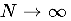
) inicializadas al azar a
procesos gaussianos (NNGP), Christoph Goller y Andreas
Küchler introdujeron la retropropagación a través de grafos acíclicos y
árboles sintácticos (n.º 144), y apareció el libro de Brian Ripley
«Pattern Recognition and Neural Networks» (n.º 145).
1997
Dominios: Bucles Memoria Optimización
En noviembre de 1997 Sepp Hochreiter y Jürgen Schmidhuber publicaron en
Neural Computation la arquitectura Long Short-Term
Memory (LSTM) (n.º 146)7. Para superar el desvanecimiento de
los gradientes, los autores sustituyeron la transformación no lineal
contractiva del estado por un carrusel de error constante
(Constant Error Carousel, CEC) lineal con jacobiano unitario en el tiempo,
protegiendo la escritura y la lectura mediante compuertas
multiplicativas de entrada () y de
salida ():
Ese mismo año 1997 Mike Schuster y Kuldip Paliwal crearon en IEEE
TSP las redes recurrentes bidireccionales (BiRNN)
(n.º 147), que combinan los desdoblamientos temporales hacia delante y
hacia atrás para una codificación contextual completa; Hochreiter y
Schmidhuber introdujeron el criterio de búsqueda de mínimos
planos (Flat Minima), de baja curvatura del hessiano, para
mejorar la generalización (n.º 148); y Yoav Freund y Robert Schapire
publicaron el algoritmo de boosting ponderado AdaBoost
(n.º 149).
1998
Dominios: Codificador Optimización Base
En noviembre de 1998 Yann LeCun, Léon Bottou, Yoshua Bengio y Patrick
Haffner publicaron en Proceedings of the IEEE el monumental
artículo «Gradient-Based Learning Applied to Document
Recognition» (n.º 150), que fijó la red convolucional de referencia
de 7 capas LeNet-5 (error del 0.8% en el conjunto de
datos MNIST) y las redes de transductores de grafos
(GTN) entrenables globalmente para leer documentos de varios
caracteres sin segmentación previa, complementándolo con la guía
práctica sobre el escalado de las activaciones y la inicialización
«Efficient BackProp» (n.º 151). Simultáneamente, Shun'ichi
Amari dedujo en Neural Computation el gradiente natural
(Natural Gradient) en la
métrica riemanniana de la matriz de información de Fisher (n.º 152)159, fundamento invariante a la
parametrización de los algoritmos de segundo orden K-FAC, Shampoo, SOAP
y de las regiones de confianza de PPO160. Ese mismo año aparecieron las
monografías clásicas de Richard Sutton y Andrew Barto sobre el
aprendizaje por refuerzo (n.º 153)152 y de Vladimir Vapnik
«Statistical Learning Theory» (n.º 154)99.
1999
Dominios: Bucles Memoria Base
En flujos continuos sin marcadores de reinicio, la celda de memoria
lineal de la LSTM original de 1997 se
saturaba sin límite. Felix Gers, Jürgen Schmidhuber y Fred Cummins
resolvieron este problema en la conferencia ICANN 1999 (n.º 155)155,
introduciendo la compuerta de olvido (Forget Gate)
multiplicativa , que permitió a la
celda borrar dinámicamente el estado obsoleto. Es notable que la
transición del DeltaNet lineal a Gated DeltaNet y
KDA en 2024–2025 reprodujo exactamente la misma idea
matemática de introducir un factor de atenuación dependiente de la
entrada antes de la memoria
matricial24. Ese mismo año Daniel Lee y Sebastian Seung publicaron en
Nature la factorización matricial no negativa
(NMF) (n.º 156), mostrando que la prohibición de sustracción
mutua de características con extrae
componentes aditivos interpretables (principio trasladado en 2025 a las
proyecciones no negativas de la
arquitectura DeepSeek mHC2), y Ning Qian ofreció un
análisis espectral exacto del momento en el descenso de gradiente (n.º
157).
2000
Dominios: Bucles Memoria Base
En 2000 Gers, Schmidhuber y Cummins publicaron la versión completa en
revista de la LSTM con compuerta de olvido en
Neural Computation (n.º 158) y la complementaron con
conexiones de mirilla (Peephole Connections) desde el
estado de la celda directamente a las
compuertas, para el conteo preciso de intervalos de tiempo (n.º
159):
En la conferencia NIPS 2000 Charles Dugas, Yoshua Bengio y sus coautores
introdujeron la función de activación suave y estrictamente positiva
Softplus
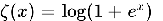
(n.º
160)161, la primitiva de la sigmoide logística, que en los SSM modernos
(Mamba-1/2/3) y en las redes delta es el parametrizador estándar del
paso de discretización 24.
Simultáneamente, en la revista Science aparecieron los
algoritmos geométricos de enderezamiento no lineal de las variedades de
datos Isomap de Tenenbaum et al. (n.º 161) y
LLE de Roweis y Saul (n.º 162).
2001
Dominios: Bucles Codificador Base
En 2001 Herbert Jaeger presentó el concepto de cómputo de reservorio en
el informe sobre las redes de estados de eco (Echo State
Networks, ESN) (n.º 163): un gran reservorio recurrente fijo
con radio espectral proyecta de forma
no lineal la historia de entrada a un estado de alta dimensión , sobre el cual, mediante regresión lineal,
solo se entrena la matriz de lectura de salida, sin BPTT. En la
conferencia ICML 2001 John Lafferty, Andrew McCallum y Fernando Pereira
introdujeron los campos aleatorios condicionales (Conditional
Random Fields, CRF) (n.º 164), que normalizan globalmente las
probabilidades de toda la secuencia de salida y eliminaron el sesgo de los modelos de
Markov normalizados localmente. Ese mismo año apareció la primera
edición de la fundamental monografía estadística de Hastie, Tibshirani y
Friedman «The Elements of Statistical Learning» (n.º 165).
2002
Dominios: Difusión Base Bucles
En 2002 Geoffrey Hinton publicó en Neural Computation el
algoritmo de divergencia contrastiva (-step Contrastive Divergence, CD-) (n.º 166)142, que aceleró
radicalmente el entrenamiento de los modelos basados en energía y de las
RBM: en lugar de la prolongada convergencia de la cadena de Markov a la
densidad de equilibrio modelada, la fase negativa del gradiente se
aproxima con tan solo paso de muestreo
de Gibbs que parte de un vector de datos real. Wolfgang Maass, Thomas
Natschläger y Henry Markram presentaron el análogo impulsivo de las
redes de reservorio, las máquinas de estados líquidos
(LSM) (n.º 167); Michael Collins generalizó en EMNLP el
perceptrón y el teorema de Novikoff a tareas de predicción estructurada
de secuencias con decodificación de Viterbi (n.º 168); y Ronan
Collobert, Samy Bengio y Johnny Mariéthoz publicaron la biblioteca
modular abierta en C++ Torch (n.º 169), progenitora del
PyTorch actual.
2003
Dominios: Base Atención/LLM Codificador
En 2003 Yoshua Bengio, Réjean Ducharme, Pascal Vincent y Christian
Jauvin publicaron en JMLR el artículo «A Neural
Probabilistic Language Model» (n.º 170), que sustituyó los
contadores discretos de -gramas por una
matriz entrenable de embeddings vectoriales densos de
palabras y un perceptrón
suave sobre la ventana concatenada de tokens precedentes :
El entrenamiento conjunto de los embeddings y de la capa oculta trasladó
la masa de probabilidad a combinaciones de palabras semánticamente
próximas que nunca aparecieron literalmente en el corpus, abriendo el
camino directo a los LLM modernos. Ese mismo año Patrice Simard, Dave
Steinkraus y John Platt introdujeron las deformaciones elásticas de los
datos y estandarizaron las prácticas convolucionales sencillas en ICDAR
(0.4% de error en MNIST, n.º 171), y David MacKay publicó la obra
fundamental «Information Theory, Inference, and Learning
Algorithms» (n.º 172).
2004
Dominios: Optimización Base
En 2004 Kyoung-Su Oh y Keechul Jung publicaron en Pattern
Recognition el artículo «GPU Implementation of Neural
Networks» (n.º 173), que por primera vez trasladó las
multiplicaciones matriciales de una red neuronal totalmente conectada al
cauce de sombreadores de píxeles de una tarjeta de vídeo (ATI Radeon
9700 Pro), con una aceleración de 20× respecto del
procesador central7. En la conferencia ICML 2004 Andrew Ng demostró
rigurosamente que, con un número exponencial de características
ruidosas, la complejidad muestral de la regularización crece solo de forma logarítmica , mientras que la de los métodos invariantes
por rotación con penalización crece
linealmente
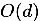
(n.º 174). En NIPS, Max
Welling, Michal Rosen-Zvi y Geoffrey Hinton extendieron la arquitectura
RBM a distribuciones continuas de la familia exponencial
(Exponential Family Harmoniums, n.º 175)162.
2005
Dominios: Difusión STT Codificador Base
En 2005 Aapo Hyvärinen publicó en JMLR el método de
emparejamiento de la función de puntuación (Score
Matching) (n.º 176)161, que permitió entrenar densidades
energéticas sin normalizar sin
calcular la función de partición ,
minimizando la discrepancia de los gradientes del logaritmo de la
densidad respecto del vector de datos
(eliminando la incógnita mediante
integración por partes):
Ese mismo año Alex Graves y Jürgen Schmidhuber combinaron la LSTM con
compuertas con el desdoblamiento bidireccional en el tiempo
(BiLSTM) y la retropropagación completa a través de las
compuertas para la clasificación fonémica del habla (n.º 177); Sumit
Chopra, Raia Hadsell y Yann LeCun introdujeron en CVPR la función de
pérdida métrica Contrastive Loss (n.º 178); Marco Gori,
Gabriele Monfardini y Franco Scarselli propusieron la primera
formulación de las redes neuronales de grafos (GNN)
(n.º 179); y Frederic Morin y Yoshua Bengio aceleraron la capa de salida
de los modelos de lenguaje de a mediante el Softmax
jerárquico sobre un árbol binario de palabras (n.º 180).
2006
Dominios: STT Base Codificador
En la conferencia ICML 2006 Alex Graves, Santiago Fernández, Faustino
Gomez y Jürgen Schmidhuber presentaron el mecanismo
Connectionist Temporal Classification (CTC) (n.º 181),
que liberó el reconocimiento del habla y del texto manuscrito de la
necesidad de un etiquetado fotograma a fotograma de los fonemas. Al
ampliar el alfabeto con un símbolo vacío (blank) e introducir un operador de colapso
de repeticiones y vacíos , CTC calcula
la probabilidad exacta de la transcripción objetivo sumando sobre todos los caminos de
alineamiento admisibles de longitud
mediante programación dinámica de pasada hacia delante y hacia atrás en
:
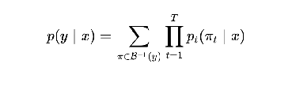
Simultáneamente, Geoffrey Hinton, Simon Osindero y Yee-Whye Teh
publicaron el preentrenamiento por capas de las redes de
creencia profundas (Deep Belief Nets) a partir de una pila de
RBM (n.º 182)142, y Hinton y Ruslan Salakhutdinov demostraron en la
revista Science la compresión no lineal de datos mediante
autocodificadores profundos con ajuste fino por retropropagación (n.º
183), devolviendo las redes profundas al centro de la atención
científica. El año se cerró con la reseña fundamental de los modelos
basados en energía de Yann LeCun y sus coautores (n.º 184) y con el
manual clásico de Christopher Bishop «Pattern Recognition and
Machine Learning» (n.º 185)164.
2007
Dominios: Base Optimización Codificador
En 2007 Yoshua Bengio, Pascal Lamblin, Dan Popovici y Hugo Larochelle
mostraron en NIPS («Greedy Layer-Wise Training of Deep
Networks», n.º 186)163 que el preentrenamiento voraz por capas de
autocodificadores deterministas inicializa las redes profundas con tanto
éxito como las RBM estocásticas. En esa misma conferencia Léon Bottou y
Olivier Bousquet publicaron el trabajo «The Tradeoffs of Large Scale
Learning» (n.º 187), demostrando que, con un presupuesto fijo de
tiempo de cómputo en el régimen de muestras grandes, el simple descenso
de gradiente estocástico de primer orden (SGD) minimiza el riesgo de
generalización esperado de forma asintóticamente más eficiente que los
pesados optimizadores de segundo orden. Andriy Mnih y Geoffrey Hinton
introdujeron el Log-Bilinear Language Model (n.º 188),
y Ruslan Salakhutdinov, Andriy Mnih y Geoffrey Hinton aplicaron las RBM
al filtrado matricial de recomendaciones en el Netflix Prize (n.º
189).
2008
Dominios: Codificador Difusión Atención/LLM
En la conferencia ICML 2008 Pascal Vincent, Hugo Larochelle, Yoshua
Bengio y Pierre-Antoine Manzagol presentaron los
autocodificadores con eliminación de ruido (Denoising
Autoencoders, DAE) (n.º 190)161: el vector de entrada se
corrompe deliberadamente mediante la puesta a cero aleatoria de
componentes (enmascaramiento) o con ruido gaussiano , y la red se entrena para proyectar el
punto ruidoso de vuelta sobre la variedad de los datos limpios 165. Esta sencilla sustitución de la
reconstrucción idéntica por la eliminación de ruido se convirtió en un
puente conceptual directo tanto hacia el modelado de lenguaje
enmascarado (BERT, LLaDA) como hacia el emparejamiento de la puntuación
en la difusión. En esa misma ICML Ronan Collobert y Jason Weston
entrenaron una única arquitectura convolucional con embeddings de
palabras preentrenados en Wikipedia para resolver conjuntamente seis
tareas de PLN sin ingeniería manual de características (n.º 191), y
Laurens van der Maaten y Geoffrey Hinton introdujeron en JMLR
el algoritmo de visualización de variedades t-SNE (n.º
192).
2009
Dominios: Codificador Optimización Base
En 2009 coincidieron tres acontecimientos que prepararon el escalado del
aprendizaje profundo moderno. Jia Deng, Fei-Fei Li y sus coautores
presentaron en CVPR el corpus jerárquico ImageNet (más
de 14 millones de imágenes etiquetadas, n.º 193)167; Rajat Raina, Anand
Madhavan y Andrew Ng entrenaron en ICML redes profundas de 100 millones
de parámetros en núcleos programables CUDA GPU con una
aceleración de 70× sobre las CPU multinúcleo (n.º 194);
y Yoshua Bengio, Jérôme Louradour, Ronan Collobert y Jason Weston
formalizaron el aprendizaje por currículo (Curriculum
Learning) (n.º 195), el aumento gradual de la dificultad y la
longitud de los ejemplos de entrenamiento, etapa obligada del
entrenamiento progresivo de contexto largo y de alta resolución en todos
los LLM y generadores de vídeo modernos59. Ese mismo año Salakhutdinov y
Hinton crearon las máquinas de Boltzmann profundas
(DBM) con conexiones bidireccionales entre capas (n.º 196), y
Franco Scarselli y otros consolidaron la convergencia matemática de las
redes GNN en IEEE TNN (n.º 197).
2010
Dominios: Base Optimización Bucles
En 2010 se eliminaron los principales obstáculos para entrenar desde
cero redes profundas de propagación hacia delante sin preentrenamiento
por capas. Xavier Glorot y Yoshua Bengio mostraron en la conferencia
AISTATS (n.º 198) que, para conservar simultáneamente la varianza de la
señal en la pasada hacia delante y la varianza de los gradientes en la
pasada hacia atrás, los pesos de la capa deben inicializarse con la
varianza de Glorot (Xavier Initialization):
En la conferencia ICML 2010 Vinod Nair y Geoffrey Hinton publicaron el
trabajo «Rectified Linear Units Improve Restricted Boltzmann
Machines» (n.º 199), introduciendo en la práctica general la
activación lineal a trozos ReLU con derivada unitaria en el semieje
positivo. Ese mismo año Tomáš Mikolov y sus coautores presentaron en
Interspeech el modelo de lenguaje recurrente (RNNLM)
para el reconocimiento del habla (n.º 200), Michael Gutmann y Aapo
Hyvärinen dedujeron la estimación contrastiva de ruido
(NCE) (n.º 201), James Martens entrenó redes profundas sin
preentrenamiento mediante el método de segundo orden
Hessian-Free (n.º 202), y apareció el compilador
simbólico-tensorial de autodiferenciación en GPU
Theano, de James Bergstra y el grupo de Bengio (n.º
203).
2011
Dominios: Optimización Difusión Base STT
En 2011 John Duchi, Elad Hazan y Yoram Singer publicaron en
JMLR el optimizador adaptativo AdaGrad (n.º
204)168, que normaliza el paso de cada coordenada por la raíz de la suma
acumulada de los cuadrados de sus gradientes pasados
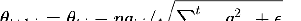
, lo que dio origen a toda la familia de
métodos adaptativos de optimización de redes profundas.
En el verano de 2011 Pascal Vincent publicó en Neural
Computation el artículo teórico fundamental «A Connection
Between Score Matching and Denoising Autoencoders»
(Denoising Score Matching, DSM, n.º 205)161. Vincent
demostró rigurosamente que entrenar un autocodificador para suprimir el
ruido gaussiano equivale a estimar la
función de puntuación de la densidad suavizada de Parzen
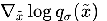
sin calcular las segundas derivadas del
jacobiano166:
Dado que , esta fórmula es el núcleo
matemático directo de todos los modelos de difusión continuos (NCSN,
DDPM, Score SDE)142. Ese mismo año Glorot, Bordes y Bengio fundamentaron
la dispersión de las redes profundas con ReLU (n.º 206), Max Welling y
Yee-Whye Teh unieron el gradiente estocástico con la dinámica de
Langevin en SGLD (n.º 207), Frank Seide, Gang Li y Dong
Yu lograron un avance en el reconocimiento industrial del habla
conversacional con el híbrido CD-DNN-HMM (n.º 208), y
Collobert y otros publicaron el artículo de síntesis «Natural
Language Processing (Almost) from Scratch» en JMLR (n.º
209).
2012
Dominios: Codificador STT Optimización Bucles
En diciembre de 2012 Alex Krizhevsky, Ilya Sutskever y Geoffrey Hinton
presentaron en NIPS la red convolucional de ocho capas
AlexNet (n.º 210)96, que redujo el error Top-5 en
ImageNet ILSVRC-2012 del 26.2% al 15.3% (precisión
Top-1 del 63.3%). El éxito de AlexNet combinó 60 millones de parámetros,
la no linealidad ReLU (que aceleró la convergencia 6×
en comparación con ), la desactivación
estocástica de neuronas Dropout para suprimir la
coadaptación de las características (Hinton et al., 2012, n.º 212) y el
entrenamiento paralelo por modelo en dos tarjetas gráficas NVIDIA GTX
580167.
Simultáneamente, en noviembre de 2012 Alex Graves publicó la
arquitectura RNN-Transducer (RNN-T) (n.º 211), que
eliminó el supuesto de independencia condicional de las salidas de CTC
al unir el codificador acústico y la
red autorregresiva de predicción de texto
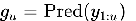
en una red conjunta Joiner con marginalización sobre la rejilla
bidimensional , estándar de todos los
sistemas de reconocimiento del habla en flujo continuo hasta los TDT
modernos170. Ese mismo año aparecieron el escalado cuadrático medio
móvil del paso RMSProp de Hinton y el método
adimensional Adadelta de Matthew Zeiler (n.º 213), el
marco de clúster distribuido DistBelief de Jeff Dean y
otros (n.º 214), los ensambles GPU-CNN de Dan Cireşan, Ueli Meier y
Jürgen Schmidhuber con la primera precisión sobrehumana en el
reconocimiento de señales (n.º 215)155 y la demostración de la eficacia
de la búsqueda aleatoria de hiperparámetros de Bergstra y Bengio (n.º
216).
2013
Dominios: Codificador Difusión Base
Optimización
En diciembre de 2013 Diederik Kingma y Max Welling publicaron el
Variational Autoencoder (VAE) («Auto-Encoding
Variational Bayes», n.º 217; de forma independiente Danilo Rezende,
Shakir Mohamed y Daan Wierstra, n.º 218), que maximiza la cota inferior
variacional de la verosimilitud (ELBO):
El truco de reparametrización
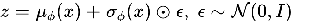
introducido por los autores trasladó la
aleatoriedad a un ruido externo y permitió entrenar codificadores
probabilísticos profundos arbitrarios mediante la retropropagación
habitual del error; precisamente los espacios comprimidos de los VAE
constituyen hoy el sustrato latente de todos los generadores insignia de
imágenes, vídeo y habla de larga duración74.
Paralelamente, Tomáš Mikolov y sus coautores en Google presentaron las
arquitecturas contrastivas Word2Vec (Skip-Gram y CBOW
con muestreo negativo, n.º 219), que escalaron el entrenamiento de
representaciones vectoriales de palabras a corpus de miles de millones
con una estructura semántica lineal. Min Lin, Qiang Chen y Shuicheng Yan
introdujeron las convoluciones puntuales 1×1 y el pooling promedio
global en Network in Network (n.º 220), Ian Goodfellow
y otros propusieron la activación Maxout (n.º 221),
Volodymyr Mnih y el equipo de DeepMind unieron una red convolucional con
Q-learning y un búfer de experiencia en DQN sobre
juegos de Atari (n.º 222), Andrew Saxe, James McClelland y Surya Ganguli
demostraron la conservación de los valores singulares del jacobiano con
la inicialización ortogonal de redes profundas (n.º
223)175, y Rie Johnson y Tong Zhang introdujeron la reducción de la
varianza del gradiente SVRG (n.º 224).
2014
Dominios: Atención/LLM Bucles Difusión Codificador
Optimización
En 2014 nacieron la atención suave diferenciable, las redes generativas
antagónicas y el principal optimizador del aprendizaje profundo moderno.
Tras el modelo Seq2Seq de Ilya Sutskever, Oriol Vinyals
y Quoc Le (n.º 225), que comprimía la frase de entrada en un único
vector fijo mediante una LSTM, Dzmitry Bahdanau, Kyunghyun Cho y Yoshua
Bengio («Neural Machine Translation by Jointly Learning to Align and
Translate», n.º 226) eliminaron el cuello de botella informacional
del vector fijo, permitiendo al decodificador ponderar dinámicamente, en
cada paso , todos los estados ocultos
del codificador (atención
aditiva):
Ese mismo año Kyunghyun Cho y otros simplificaron la celda recurrente
con compuertas a dos compuertas en la GRU (
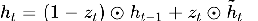
, n.º 227), y Alex Graves, Greg Wayne e Ivo
Danihelka dotaron a la red neuronal de una memoria matricial externa
diferenciable en la Neural Turing Machine (NTM) (n.º
228). En NIPS 2014 Ian Goodfellow y sus coautores formularon el juego
minimax entre el generador y el discriminador de las
GAN (, n.º 229), y en
diciembre Diederik Kingma y Jimmy Ba publicaron el optimizador
Adam (n.º 230), que combinó las estimaciones de medias
móviles exponenciales de los momentos de primer y segundo orden del
gradiente con la corrección del sesgo hacia cero. En visión por
computador y en embeddings aparecieron las cascadas de núcleos estrechos
de 3×3 VGG de Simonyan y Zisserman (n.º 231)176, los
bloques multiescala GoogLeNet / Inception de Szegedy y
otros (n.º 232), la factorización matricial de la coocurrencia de
palabras GloVe de Pennington y otros (n.º 233), el
trabajo de Goodfellow y otros sobre la naturaleza lineal de las
perturbaciones antagónicas (FGSM) (n.º 234) y la
biblioteca Caffe de Yangqing Jia (n.º 235).
2015
Dominios: Base Difusión Codificador Optimización
STT
En 2015 se superó la barrera de la degradación de la profundidad de las
redes y, simultáneamente, se formuló la difusión termodinámica.
Desarrollando las autopistas con compuertas de las Highway
Networks de Rupesh Srivastava, Klaus Greff y Jürgen Schmidhuber
(
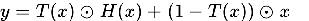
, n.º 236)7, Kaiming He, Xiangyu
Zhang, Shaoqing Ren y Jian Sun simplificaron el atajo de la señal a una
suma identidad pura en ResNet-152 (n.º 237; junto con
la inicialización Kaiming Init para ReLU, n.º 238)61:
La unidad aditiva en el jacobiano
aseguró un flujo de gradiente sin atenuación a través de cientos de
capas y dio la victoria en ILSVRC-2015 con un error del ensamble del
3.57%34.
Ese mismo año Sergey Ioffe y Christian Szegedy introdujeron la
Batch Normalization (n.º 239)178; Olaf Ronneberger,
Philipp Fischer y Thomas Brox crearon la arquitectura convolucional
simétrica codificador–decodificador con transmisión directa de los mapas
espaciales de características U-Net (n.º 240)179; y
Jascha Sohl-Dickstein, Eric Weiss, Niru Maheswaranathan y Surya Ganguli
publicaron en ICML 2015 el artículo pionero «Deep Unsupervised
Learning using Nonequilibrium Thermodynamics» (n.º 241),
introduciendo la cadena de Markov directa de ruido por difusión y la cadena inversa entrenable de
restauración generativa
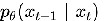
. El año se
completó con la destilación de conocimiento con
temperatura de Hinton, Vinyals y Dean (n.º 242), la aproximación de
Fisher K-FAC de Martens y Grosse (n.º 243), la atención
escalar de Luong (n.º 244), las arquitecturas de habla de extremo a
extremo LAS de Chan y otros (n.º 245) y
DeepSpeech 2 de Amodei y otros (n.º 246), la
segmentación en subpalabras BPE de Sennrich y otros
(n.º 247) y el lanzamiento abierto del marco TensorFlow
(n.º 248).
2016
Dominios: TTS Bucles Base Optimización
Codificador
En 2016 cobraron forma los mecanismos de normalización por token, de
bucles recurrentes adaptativos y de síntesis autorregresiva de audio.
Jimmy Ba, Jamie Kiros y Geoffrey Hinton propusieron la Layer
Normalization (LayerNorm) (n.º 249), que normaliza el vector de
características de cada token por separado, independientemente del
tamaño del lote, y Kaiming He y otros demostraron que trasladar la
normalización al interior de la rama residual (Pre-LN
ResNet: , n.º 250) conserva la
autopista identidad pura a profundidades superiores a 1000 capas61. Alex
Graves introdujo el mecanismo Adaptive Computation Time
(ACT) (n.º 251)41, que permite a la red ejecutar un número
variable y entrenable de iteraciones internas sobre cada token bajo el
control de una compuerta sigmoidea de parada (ponder cost), fundamento
directo de la profundidad adaptativa en Universal Transformer, Ouro y
Huginn41. Dan Hendrycks y Kevin Gimpel propusieron la no linealidad
probabilística suave GELU (n.º 252).
En la síntesis del habla, Aäron van den Oord y el equipo de DeepMind
presentaron WaveNet (n.º 253), una pila de
convoluciones 1D causales dilatadas con crecimiento exponencial de la
dilatación y no linealidades con
compuertas , que por primera vez acercó
la síntesis de la onda a la voz natural. Ese mismo año Laurent Dinh,
Jascha Sohl-Dickstein y Samy Bengio crearon los flujos normalizadores
invertibles RealNVP (n.º 254); Eric Jang y otros
dedujeron la relajación categórica diferenciable
Gumbel-Softmax (n.º 255)54; Thomas Kipf y Max Welling
formalizaron las redes convolucionales de grafos (GCN)
espectrales (n.º 256); Gao Huang y otros presentaron
DenseNet (n.º 257)180; Ilya Loshchilov y Frank Hutter
introdujeron el calendario coseno de la tasa de aprendizaje SGDR
/ Cosine Annealing (n.º 258); y apareció el manual clásico de
Goodfellow, Bengio y Courville «Deep Learning» (MIT Press, n.º
259)8.
2017
Dominios: Atención/LLM MoE TTS Codificador
Optimización
En junio de 2017 Ashish Vaswani, Noam Shazeer, Niki Parmar, Jakob
Uszkoreit, Llion Jones, Aidan Gomez, Łukasz Kaiser e Illia Polosukhin
publicaron el artículo «Attention Is All You Need» (n.º
260)182, que sustituyó las cadenas recurrentes y las convoluciones por
la arquitectura Transformer, basada en la autoatención
multicabeza de producto escalar escalado (Multi-Head Attention,
MHA):
El factor estabiliza la varianza de
los logits antes del softmax, la longitud del camino de transmisión de
la señal entre dos posiciones cualesquiera de la secuencia se reduce a
, y el paralelismo completo sobre los
tokens en el entrenamiento encaja
idealmente con las multiplicaciones tensoriales de la GPU, al precio de
una complejidad cuadrática .
Ese mismo año 2017 aparecieron otros cinco trabajos que configuraron el
aspecto de los sistemas multimodales y dispersos modernos. Noam Shazeer
y sus coautores presentaron en ICLR la Sparsely-Gated
Mixture-of-Experts (n.º 261)184, que escaló el modelo de
lenguaje hasta 137 mil millones de parámetros mediante un enrutamiento
disperso
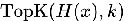
con una penalización auxiliar
de balanceo de la carga de los expertos. Aäron van den Oord, Oriol
Vinyals y Koray Kavukcuoglu crearon el VQ-VAE (n.º
262), que introdujo la cuantización vectorial del espacio latente en un
libro de códigos discreto con estimación de gradiente de extremo a
extremo mediante el Straight-Through Estimator, mecanismo básico de
todos los códecs de audio neuronales modernos. Yuxuan Wang y otros
(Tacotron, n.º 263) y Jonathan Shen y otros
(Tacotron 2, n.º 264) construyeron una síntesis de
habla de extremo a extremo «texto
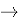
espectrograma mel vocoder neuronal».
En optimización, Ilya Loshchilov y Frank Hutter desacoplaron el
decaimiento de pesos del segundo momento adaptativo en
AdamW (, n.º 265),
John Schulman y otros crearon el gradiente de política sustituto
recortado PPO (n.º 266)158, y Martin Arjovsky, Soumith
Chintala y Léon Bottou estabilizaron las redes antagónicas con la
métrica de Wasserstein WGAN (n.º 267). El arsenal
arquitectónico se enriqueció con las convoluciones separables en
profundidad MobileNets de Howard y otros (n.º 268), la
atención por canales SENet de Hu y otros (n.º 269), la
activación Swish / SiLU de Ramachandran y otros (n.º 270) y la
atención en grafos GAT de Veličković y otros (n.º
271).
2018
Dominios: Codificador Atención/LLM Bucles TTS
Optimización
En 2018 el preentrenamiento de transformadores sobre grandes corpus sin
etiquetar se dividió en dos ramas complementarias. Tras las
representaciones contextuales de BiLSTM ELMo de Matthew
Peters y otros (n.º 272), Alec Radford y sus coautores en OpenAI
presentaron el decodificador causal autorregresivo
GPT-1 (n.º 273), y Jacob Devlin, Ming-Wei Chang, Kenton
Lee y Kristina Toutanova en Google crearon el codificador bidireccional
profundo BERT (n.º 274)186, entrenado para restaurar el
15% de los tokens enmascarados al azar (Masked Language
Modeling, MLM) a partir del contexto completo izquierdo y
derecho.
Simultáneamente, Mostafa Dehghani y sus coautores introdujeron el
Universal Transformer (n.º 275)187, el primer
transformador en bucle con compartición de pesos en profundidad y parada
ACT por token, demostrando su universalidad computacional con
profundidad variable y sentando la base directa de los modelos modernos
Huginn y Ouro. Ricky Chen, Yulia Rubanova, Jesse Bettencourt y David
Duvenaud pasaron al límite continuo de la red residual en las Neural ODE, con
entrenamiento por el método de las ecuaciones adjuntas con memoria en profundidad (n.º 276)190. Ese mismo año
Aäron van den Oord, Yazhe Li y Oriol Vinyals formularon el funcional
contrastivo InfoNCE en el marco de CPC
(n.º 277)191; Kingma y Dhariwal crearon el generador invertible
Glow (n.º 278), adaptado por Ryan Prenger y otros en el
rápido vocoder de habla en flujo continuo WaveGlow (n.º
279); Yuxin Wu y Kaiming He introdujeron GroupNorm (n.º
280); en optimización aparecieron el Adafactor de bajo
rango de Shazeer y Stern (n.º 281)192 y el precondicionador matricial de
curvatura Shampoo de Gupta, Koren y Singer (n.º
282)160; Arthur Jacot y otros describieron el régimen del núcleo
tangente neuronal (NTK) (n.º 283); y Taku Kudo y John
Richardson publicaron el tokenizador SentencePiece (n.º
284)73.
2019
Dominios: Atención/LLM Bucles TTS Difusión
Optimización
En 2019 cobró forma el armazón de ingeniería del decodificador LLM
moderno y de la infraestructura de su entrenamiento distribuido. Alec
Radford y sus coautores, con GPT-2 (1.5B de parámetros,
n.º 285)1, consolidaron el esquema Pre-LN y la
ejecución zero-shot de tareas mediante la continuación del lenguaje.
Biao Zhang y Rico Sennrich presentaron RMSNorm (n.º
286)28, que descartó el centrado de la media de LayerNorm y conservó
solo la normalización invariante a la escala por la amplitud cuadrática
media:
lo que aceleró la normalización en la GPU y se convirtió en el estándar
de prácticamente todas las arquitecturas abiertas de 2023–2026196. En
noviembre Noam Shazeer publicó la Multi-Query Attention
(MQA) (n.º 287)49, señalando la limitación de la decodificación
autorregresiva por el ancho de banda de la memoria HBM al leer la caché
KV y proponiendo proyecciones compartidas para todas las cabezas de consulta.
En los modelos en bucle y de contexto largo, Shaojie Bai, Zico Kolter y
Vladlen Koltun crearon los Deep Equilibrium Models
(DEQ) (n.º 288), que hallan el punto fijo del bucle con un solver numérico de raíces y lo
diferencian analíticamente mediante el teorema de la función implícita
con memoria ; Zhenzhong Lan y otros
aplicaron la compartición de pesos de capas de extremo a extremo en
ALBERT (n.º 289)189; Colin Raffel y otros introdujeron
el sesgo relativo tabular de la atención en T5 (n.º
290)72; y Zihang Dai y otros combinaron la recurrencia por segmentos con
posiciones relativas en Transformer-XL (n.º 291)190. En
la síntesis del habla, Yi Ren y otros crearon el transformador no
autorregresivo FastSpeech con un regulador explícito de
la duración de los fonemas (Length Regulator, n.º 292),
que aceleró en dos órdenes de magnitud la generación de espectrogramas
mel sin pérdida de estabilidad. Yang Song y Stefano Ermon revivieron el
modelado generativo por puntuación sobre una rejilla multiescala de
ruidos en NCSN (n.º 293). El año se cerró con el
escalado compuesto de CNN EfficientNet de Tan y Le (n.º
294)178, el codificador de audio autosupervisado
wav2vec de Schneider y otros (n.º 295), el paralelismo
tensorial intracapa Megatron-LM de NVIDIA (n.º 296)198,
la fragmentación de los estados del optimizador y de los pesos
ZeRO de Microsoft DeepSpeed (n.º 297)73 y el artículo
de referencia de Adam Paszke y otros sobre PyTorch (n.º
298).
2020
Dominios: Atención/LLM Difusión Codificador STT TTS
Bucles/SSM
En 2020 se transformaron simultáneamente los modelos de lenguaje, la
generación por difusión, la visión por computador y las tecnologías del
habla. Jared Kaplan y sus coautores establecieron las leyes de
escalado (Scaling Laws) en forma de potencia de la pérdida del
modelo de lenguaje en función del número de parámetros, los datos y el
presupuesto de FLOPs (n.º 299)4, que
Tom Brown y el equipo de OpenAI llevaron a la práctica en
GPT-3, de 175 000 millones de parámetros, con
aprendizaje en contexto emergente (n.º 300). Noam Shazeer introdujo la
familia de bloques totalmente conectados con compuertas
SwiGLU (n.º 301)199,
que sustituyó al MLP ordinario de dos capas en los LLM modernos,
mientras que Angelos Katharopoulos et al. factorizaron la atención
mediante un núcleo de características positivo en Linear Attention (n.º
302)25, mostrando la dualidad entre el transformador lineal y una RNN
con memoria matricial
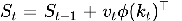
de complejidad
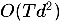
.
En los modelos generativos, Jonathan Ho, Ajay Jain y Pieter Abbeel
publicaron DDPM (n.º 303)37, que redujo el
entrenamiento variacional de la cadena de Márkov inversa a la predicción
del ruido gaussiano añadido ; Jiaming
Song, Chenlin Meng y Stefano Ermon construyeron las trayectorias
deterministas no markovianas de muestreo acelerado de
DDIM (n.º 304)5; y Yang Song et al. unificaron la
difusión y la estimación de la puntuación (score) en ecuaciones
diferenciales estocásticas continuas, Score SDE, y en
el flujo de probabilidad determinista, Probability Flow
ODE (n.º 305)5. En visión por computador, Alexey Dosovitskiy,
Lucas Beyer et al. presentaron el transformador puro de parches
ViT (división de la imagen en parches de 16×16 sin
convoluciones, 88.55 % Top-1 en ImageNet para ViT-H/14, n.º 306)73,
junto con el avance del autoaprendizaje contrastivo
SimCLR (n.º 311)202, MoCo (n.º 312) y
BYOL, sin negativos (n.º 313).
En el procesamiento de audio aparecieron tres componentes básicos de la
pila moderna del habla: el híbrido convolucional-transformador
Conformer de Anmol Gulati et al. (Macaron-FFN + MHSA +
DepthwiseConv, que alcanzó 1.9 % / 3.9 % de WER en
LibriSpeech test-clean / test-other, n.º 307)203, el codificador
cuantizador autosupervisado de forma de onda cruda wav2vec
2.0 de Alexei Baevski et al. (n.º 308)191 y el vocoder
generativo adversarial multiperiodo HiFi-GAN de Jungil
Kong et al. (n.º 309)206. Por último, Albert Gu, Tri Dao y sus coautores
derivaron los operadores de proyección polinómica ortogonal de la
historia continua de la señal, HiPPO (n.º 310)62 (base
teórica de S4 y Mamba), Patrick Lewis et al. crearon la arquitectura
RAG (n.º 314), y Dmitry Lepikhin et al. escalaron la
MoE hasta 600B de parámetros en el sistema GShard (n.º
315)27.
2021
Dominios: Atención/LLM MoE Codificador Bucles/SSM
TTS Difusión Optimización
En 2021 se consolidaron los estándares de la codificación posicional
relativa, la adaptación de bajo rango, los espacios de estados
estructurados y la difusión latente. Jianlin Su y sus coautores
introdujeron en RoFormer la codificación
posicional rotatoria (RoPE) (n.º 316)72, que multiplica los
pares de coordenadas de consultas y claves por matrices ortogonales de
rotación en el plano complejo con un espectro geométrico de frecuencias
:
Ofir Press et al. propusieron las penalizaciones posicionales lineales
de la atención ALiBi (n.º 317); William Fedus, Barret
Zoph y Noam Shazeer simplificaron la MoE hasta el enrutamiento
Top-1 en el Switch Transformer de 1.6
billones de parámetros (n.º 318); y Edward Hu et al. crearon el método
LoRA (n.º 319)210, que congela las matrices
preentrenadas
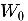
y entrena únicamente un
término aditivo de bajo rango de rango
, sin latencia adicional en la
inferencia.
En los codificadores multimodales y visuales, Alec Radford et al.
alinearon los espacios de imágenes y textos con 400 millones de pares en
CLIP (n.º 320)212, Kaiming He et al. crearon el
autocodificador enmascarado asimétrico de parches MAE
(enmascaramiento del 75 % de los parches, n.º 321), Mathilde Caron et
al. descubrieron la autodestilación de transformadores visuales sin
etiquetas DINO (n.º 322)213, y Ze Liu et al.
introdujeron ventanas desplazadas jerárquicas en Swin
Transformer (n.º 323). En el modelado de secuencias largas,
Albert Gu, Karan Goel y Christopher Ré publicaron S4 (Structured
State Spaces) (n.º 324)62: al descomponer la matriz HiPPO en la
suma de una normal y una de bajo rango (NPLR: ), redujeron el cálculo del núcleo
convolucional de longitud a un núcleo
de Cauchy y una FFT en , resolviendo
por primera vez la tarea Path-X de longitud 16,384 en Long Range Arena
(puntuación media 86.09)216; en paralelo, Imanol Schlag, Kazuki Irie y
Jürgen Schmidhuber introdujeron en ICML 2021 la regla delta de
sobrescritura en los transformadores lineales (Fast Weight
Programmers, n.º 325)157, que se convirtió en la fuente teórica
directa de DeltaNet.
En los dominios del habla y generativo, Jaehyeon Kim, Jungil Kong y
Juhee Son combinaron la inferencia variacional, los flujos
normalizadores y la síntesis adversarial de la forma de onda en
VITS (n.º 326)217; Neil Zeghidour et al. crearon el
primer códec de audio neuronal de extremo a extremo con
cuantización vectorial residual (RVQ),
SoundStream (n.º 327)47; Wei-Ning Hsu et al.
presentaron el codificador de habla enmascarado HuBERT
(n.º 328)191; Prafulla Dhariwal y Alex Nichol demostraron la
superioridad de la difusión sobre las GAN en calidad de imagen en
ADM (n.º 329)219; Jacob Austin et al. formalizaron la
difusión discreta con el token absorbente [MASK] en
D3PM (n.º 330)35; y en diciembre Robin Rombach, Andreas
Blattmann, Dominik Lorenz, Patrick Esser y Björn Ommer trasladaron la
difusión al espacio comprimido de un autocodificador perceptual, con
atención cruzada (cross-attention) de texto, en los Latent
Diffusion Models (LDM / Stable Diffusion) (n.º 331)179.
2022
Dominios: Atención/LLM Optimización Difusión STT
TTS
En 2022, los algoritmos de memoria conscientes del hardware, las leyes
de escalado óptimo en cómputo y los flujos rectilíneos de EDO cambiaron
la economía de los grandes modelos. Tri Dao, Daniel Fu, Stefano Ermon,
Atri Rudra y Christopher Ré publicaron FlashAttention
(n.º 332)199: al dividir las matrices
en bloques en la memoria rápida integrada en el chip de la GPU,
SRAM, y aplicar el reescalado exacto por bloques del
softmax en línea (que se remonta a Milakov y
Gimelshein, n.º 333):
los autores calcularon una atención matemáticamente exacta sin escribir
la matriz
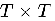
en la memoria global HBM,
reduciendo el consumo de memoria a 223.
Jordan Hoffmann et al., en el trabajo Chinchilla (n.º
334)224, mostraron que, con un presupuesto fijo de FLOPs, el régimen
óptimo de entrenamiento exige escalar proporcionalmente el número de
parámetros y de tokens de entrenamiento (), y Greg Yang, Edward Hu et al. derivaron
la parametrización P
para la transferencia zero-shot de hiperparámetros desde modelos
pequeños a ejecuciones gigantescas (n.º 335).
En el modelado generativo, Jonathan Ho y Tim Salimans introdujeron la
guía sin clasificador (CFG) (n.º 336), Tero Karras et
al. sistematizaron el preacondicionamiento del ruido y los muestreadores
de segundo orden en EDM (n.º 337)37, y en otoño de 2022
Xingchao Liu, Chengyue Gong y Qiang Liu (Rectified
Flow, n.º 338), Yaron Lipman, Ricky Chen et al. (Flow
Matching, n.º 339) y Michael Albergo con Eric Vanden-Eijnden
(Stochastic Interpolants, n.º 340) trasladaron la
generación al entrenamiento de campos vectoriales rectilíneos de
velocidad de la EDO a lo largo de la
interpolación lineal , con el
procedimiento de enderezamiento de trayectorias
Reflow5. En diciembre, William Peebles y Saining Xie
sustituyeron la U-Net de la difusión latente por un transformador
escalable con normalización adaptativa adaLN-Zero: el
Diffusion Transformer (DiT) (FID 2.27 en ImageNet
256×256, n.º 341)219. En audio y posentrenamiento aparecieron el
transformador ASR multilingüe Whisper de Alec Radford
et al., con 680,000 horas de supervisión débil (n.º 342)229, el códec
RVQ abierto de 24 kHz EnCodec de Alexandre Défossez et
al. (n.º 343)231, la alineación en tres etapas con preferencias humanas
InstructGPT (RLHF) de Long Ouyang et al. (n.º 344), el
prompting de cadenas de razonamiento Chain-of-Thought
de Jason Wei et al. (n.º 345) y los optimizadores de 8 bits con
cuantización por bloques de Tim Dettmers et al. (n.º 346)169.
2023
Dominios: Atención/LLM MoE Bucles/SSM Codificador
Vídeo STT TTS STS Optimización
En 2023, el ecosistema abierto de LLM obtuvo un estándar de
decodificación eficiente, y los modelos lineales recurrentes desafiaron
por primera vez a los transformadores en tareas de lenguaje. Joshua
Ainslie et al. introdujeron la Grouped-Query Attention
(GQA) (n.º 347)39, que reparte
grupos de claves-valores entre cabezas
de consulta (adoptada en Llama 2 70B de Touvron et al.,
n.º 348194); Woosuk Kwon et al. eliminaron la fragmentación de la
memoria de vídeo del caché KV con el mecanismo de paginación
PagedAttention en el motor vLLM (n.º
349)232; Tri Dao optimizó el paralelismo a nivel de warp en
FlashAttention-2 (n.º 350)198; Hao Liu, Matei Zaharia y
Pieter Abbeel crearon la atención distribuida en anillo de aceleradores
Ring Attention para contextos de millones de tokens
(n.º 351)132; el equipo de Mistral AI publicó la mezcla de expertos
dispersa abierta Mixtral 8x7B (Top-2 de 8, n.º 352)234;
y Rafael Rafailov et al. derivaron una forma cerrada de alineación de la
política sin modelo de recompensa, la Direct Preference
Optimization (DPO) (n.º 353)158:
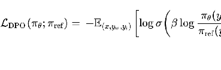
Al mismo tiempo se desplegó la ofensiva de las arquitecturas
subcuadráticas con memoria constante de inferencia : RWKV-4 de Bo Peng et al.
(n.º 354)236, la red de retención multiescala RetNet de
Yutao Sun et al. (n.º 355)49 y, en diciembre, Mamba
(S6) de Albert Gu y Tri Dao (n.º 356)25. Al convertir los
parámetros del espacio de estados en
funciones del token de entrada actual (Selective SSM) e
implementar un escáner asociativo paralelo consciente del hardware en
SRAM, Mamba resolvió el problema del filtrado del contexto dependiente
del contenido con complejidad lineal .
En los dominios visual, de difusión de texto y del habla aparecieron el
predictor latente no generativo de imágenes I-JEPA de
Assran, LeCun et al. (n.º 357), el codificador contrastivo sigmoide por
pares y sin softmax SigLIP de Zhai et al. (n.º 358)212,
el modelo fundacional visual DINOv2 de Oquab et al.
(n.º 359)176, el generador de vídeo Stable Video
Diffusion de Blattmann et al. (n.º 360), la difusión discreta
con estimación de razones de probabilidad SEDD de Lou,
Meng y Ermon (n.º 361)57, el primer modelo de lenguaje de códec para la
síntesis de habla zero-shot a partir de una muestra de 3 segundos,
VALL-E, de Wang et al. (n.º 362)218, el códec de audio
mejorado DAC de Kumar et al. (n.º 363)55, el modelo
conversacional de habla SpeechGPT de Zhang et al. (n.º
364)240, el codificador FastConformer de Rekesh et al.,
2.8× más rápido y con trama de 80 ms (n.º 365)171, el transductor
Token-and-Duration Transducer (TDT) de Xu, Majumdar y
Ginsburg, que omite las tramas vacías (n.º 366)79, la adaptación de 4
bits QLoRA de Dettmers et al. (n.º 367), la extensión
de la ventana de RoPE YaRN de Peng et al. (n.º 368)30 y
el manual de Simon Prince «Understanding Deep Learning» (MIT
Press, n.º 369)8.
Atención
latente MLA, equilibrado de MoE sin penalizaciones y preentrenamiento
cuantizado
En 2024, una serie de trabajos del laboratorio DeepSeek-AI revisó la
arquitectura de la atención y del enrutamiento de expertos. En
DeepSeekMoE (arXiv:2401.06066, n.º 370)29 los expertos
se fragmentaron en subredes pequeñas especializadas, combinadas con
expertos compartidos aislados y siempre activos. En mayo, en
DeepSeek-V2 (arXiv:2405.04434, 236B de parámetros
totales / 21B activos, n.º 371)50 se introdujo el mecanismo
Multi-Head Latent Attention (MLA):
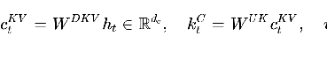
Gracias a la absorción de las matrices de descompresión en las proyecciones de consulta y de salida
en la etapa de inferencia, en memoria se almacena solo el vector
comprimido de elementos por capa, en lugar de los 32,768
de una MHA de 128 cabezas: una reducción del caché KV del 98.24 % por
capa (y del 93.3 % a nivel del modelo V2 completo frente al DeepSeek 67B
denso)50. En diciembre, en DeepSeek-V3
(arXiv:2412.19437, 671B de parámetros totales / 37B activos, 14.8T
tokens, n.º 372)29 se combinaron el equilibrado de la carga de
expertos sin pérdida auxiliar, mediante un sesgo dinámico en la selección Top- (que desarrolla el Loss-Free Balancing de
Wang et al., n.º 37327), el módulo en cascada de Multi-Token
Prediction (MTP) (fundamentado antes, en abril, por Fabian
Gloeckle et al. de Meta, arXiv:2404.19737, n.º 37464), la canalización
de solapamiento de comunicaciones DualPipe y el
entrenamiento estable en precisión FP8 con 2.788
millones de horas de GPU H800 (unos $5.576M a la tarifa estimada de
$2/h, sin contar las ejecuciones de investigación previas ni las
ablaciones; MMLU 88.5 %, MATH-500 90.2 %)29. Ya en febrero, Zhihong Shao
et al., en DeepSeekMath (arXiv:2402.03300, n.º 375)53,
presentaron el algoritmo de RL sin crítico GRPO. En
paralelo, Shuming Ma et al. mostraron la viabilidad de los pesos
ternarios en BitNet
b1.58 (arXiv:2402.17764, n.º 376)51, y la línea abierta de
transformadores densos fue encabezada por Llama 3.1
405B (n.º 377)246 y Qwen2.5 (n.º 378)247.
Dualidad
de los SSM, Gated DeltaNet, TTT y optimizadores de segunda
generación
En el eje de las secuencias recurrentes, Tri Dao y Albert Gu
demostraron en Mamba-2 (arXiv:2405.21060, n.º 379)32
una dualidad estructural estricta (SSD) entre los SSM
selectivos con transición escalar y la
atención lineal semiseparable ,
trasladando el entrenamiento de los SSM a bloques matriciales de los
Tensor Cores. Maximilian Beck y Sepp Hochreiter escalaron la LSTM con
compuertas exponenciales y memoria matricial de covarianza
mLSTM en xLSTM (arXiv:2405.04517, n.º
380)183; Songlin Yang et al. paralelizaron el transformador lineal con
regla delta mediante la representación WY de Householder por bloques
(chunks) (DeltaNet, n.º 381248) y en diciembre, junto
con Jan Kautz y Ali Hatamizadeh, combinaron la regla delta con el
decaimiento adaptativo de Mamba-2 en Gated DeltaNet
(arXiv:2412.06464, n.º 382)157:
Ese mismo año aparecieron los RWKV-5/6 (Eagle &
Finch) matricial-recurrentes de Bo Peng et al. (n.º 383)249, el
híbrido Mamba–Transformer–MoE Jamba de Opher Lieber et
al. (n.º 384)184, los flujos residuales multibanda
Hyper-Connections (HC) de Defa Zhu et al.
(arXiv:2409.19606, n.º 385)61 y las capas Test-Time Training
(TTT-Linear / TTT-MLP) de Yu Sun, Karan Dalal et al.
(arXiv:2407.04620, n.º 386)44, que convirtieron el propio estado oculto
en un perceptrón de dos capas entrenable sobre el contexto de prueba. En
la optimización de hardware y numérica surgieron el
FlashAttention-3 asíncrono para los chips Hopper H100
(740 TFLOPs/s en FP16, n.º 387)252, el preacondicionador
SOAP de Nikhil Vyas, Sham Kakade et al.
(arXiv:2409.11321, ejecución de AdamW en la base propia de las matrices
de Shampoo, con una reducción del tiempo de entrenamiento con lotes
grandes de más del 35 %, n.º 388)168 y el impulso matricial
ortogonalizante Muon de Keller Jordan (n.º 389)65.
DiT
multimodal, VAE de vídeo, REPA y el diálogo de dúplex completo
Moshi
En la generación de imágenes y vídeo, Patrick Esser et al. en
Stable Diffusion 3 (arXiv:2403.03206, n.º 390)174 y el
equipo de Black Forest Labs en FLUX.1 (12B de
parámetros, n.º 391)174 consolidaron la arquitectura de doble flujo
MMDiT con Rectified Flow. A los modelos de vídeo
convolucionales los sustituyeron los 3D-DiT espaciotemporales sobre VAE
3D causales (compresión 4×8×8): CogVideoX de Zhuoyi
Yang et al. (n.º 392)255, Mochi 1 (n.º 393)254, el
HunyuanVideo de 13 mil millones de parámetros de Weijie
Kong et al., con codificación de prompts mediante MLLM y 3D-RoPE
(arXiv:2412.03603, n.º 394)256, y el ultrarrápido
LTX-Video de Lightricks, con compresión Video-VAE de
1:192 (arXiv:2501.00103, n.º 395)258. Sihyun Yu et al. aceleraron la
convergencia de los transformadores de difusión más de
17.5× con el método de alineación de los parches
latentes con las características de DINOv2 (REPA,
arXiv:2410.06940, FID 1.42 en ImageNet 256×256, n.º 396)36; Subham Sahoo
et al. derivaron el límite continuo de la difusión enmascarada de texto
en MDLM (arXiv:2406.07524, n.º 397)222; Adrien Bardes
et al. presentaron el codificador de vídeo de predicción de
características V-JEPA (arXiv:2404.08471, n.º 398)60; y
Benjamin Warner et al. actualizaron los codificadores bidireccionales de
texto y código a una ventana de 8,192 tokens en
ModernBERT (arXiv:2412.13663, alternancia de atención
global y deslizante 1:2, RoPE, GeGLU, unpadding, n.º 399)186.
En la interacción oral, Alexandre Défossez et al. del laboratorio Kyutai
publicaron Moshi y el códec neuronal en streaming
Mimi (arXiv:2410.00037, n.º 400)26: el primer LLM de
habla de dúplex completo abierto, con una latencia teórica de
160 ms (200 ms en la práctica, frente a una pausa media
de ~230 ms en el habla humana). El códec Mimi comprime la forma de onda
de 24 kHz a una frecuencia de 12.5 Hz (paso de 80 ms)
en 8 libros de códigos RVQ de 2,048 entradas (1.1
kbit/s), con destilación de la semántica de WavLM en el primer
libro de códigos, y una jerarquía formada por un Temporal Transformer de
7B y un pequeño Depth Transformer predice en paralelo el «monólogo
interno» de texto (Inner Monologue) y dos flujos de audio, sin dividir
la conversación en turnos26. La pila de 2024 se completó con el
codificador no autorregresivo SenseVoice (15× más
rápido que Whisper-Large) y el sintetizador CosyVoice
(FunAudioLLM, n.º 401)263, el F5-TTS en streaming (n.º
402)264, el Fish-Speech de dos cascadas (n.º 403)265,
así como los nuevos manuales fundamentales de Christopher y Hugh Bishop
«Deep Learning: Foundations and Concepts» (Springer, n.º
404)266 y de Sebastian Raschka «Build a Large Language Model (From
Scratch)» (Manning, n.º 405)267.
RL
verificable de razonamiento, atención dispersa, mHC y modelos de
billones de parámetros con Muon
En enero de 2025, la publicación de DeepSeek-R1
(arXiv:2501.12948, aparecida en septiembre de 2025 en la revista
Nature, n.º 406)50 mostró, con el experimento
DeepSeek-R1-Zero, que el escalado puro del aprendizaje
por refuerzo GRPO con reglas verificables, sin SFT
inicial, forma espontáneamente largas cadenas de autoverificación y
reflexión, elevando la precisión en AIME 2024 del 15.6 % al 71.0 %, y
que el DeepSeek-R1 completo, multietapa, alcanzó un
79.8 % de Pass@1 en AIME 2024 y un 97.3 % en
MATH-500, con una destilación exitosa del razonamiento en
modelos densos de 1.5B–70B269. En febrero, Jingyang Yuan et al.
presentaron Native Sparse Attention (NSA)
(arXiv:2502.11089, Best Paper de ACL 2025, n.º 407)50, que divide la
atención en ramas comprimida, selectiva y de ventana local, con una
aceleración de la decodificación de hasta 11.6×76. En diciembre
aparecieron DeepSeek-V3.2 (arXiv:2512.02556, n.º
408)10, que incorporó sobre MLA el mecanismo DeepSeek Sparse
Attention (DSA) con un indexador rápido (lightning indexer) y
selección de top- tokens de complejidad
(la variante de alto presupuesto
V3.2-Speciale mostró resultados de nivel oro en IMO 2025 e IOI 2025
según el informe de los autores)10, y el trabajo de Zhenda Xie,
Shengding Hu et al. sobre Manifold-Constrained Hyper-Connections
(mHC) (arXiv:2512.24880, n.º 409)2, que proyectó las matrices
de mezcla de las bandas del flujo residual sobre el politopo de Birkhoff
de las matrices doblemente estocásticas mediante el algoritmo de
Sinkhorn—Knopp (garantía y solo un 6.7
% de sobrecarga de tiempo con )2.
En paralelo, el equipo de Moonshot AI demostró la escalabilidad del
optimizador matricial Muon (arXiv:2502.16982, n.º
410)65 y en julio entrenó con 15.5 billones de tokens, sin un solo pico
de pérdida, el buque insignia agéntico de un billón de parámetros
Kimi K2 (arXiv:2507.20534, 1.04T de parámetros totales
/ 32.6B activos, 8 de 384 expertos + 1 compartido, n.º 411), gracias a
la combinación MuonClip (iteraciones de Newton—Schulz +
limitación del logit máximo de atención QK-Clip)66, y
la complementó en octubre con la arquitectura híbrida Kimi
Linear, con decaimiento delta por canal KDA
(arXiv:2510.26692, hasta 6× de aceleración de la decodificación con un
contexto de 1M, n.º 412)278. El frente abierto lo ampliaron la familia
de razonamiento controlable Qwen3 (hasta 235B-A22B con
36T tokens, arXiv:2505.09388, n.º 413)247, los modelos nativamente
multimodales de fusión temprana Llama 4 Scout
(109B-A17B, contexto de 10 millones de tokens) y Llama 4
Maverick (400B-A17B, n.º 414)280, el agéntico
GLM-4.5 (355B-A32B, arXiv:2508.06471, n.º 415)282 y el
híbrido Mamba-2 + GQA + MoE en formato NVFP4 NVIDIA Nemotron 3
Nano (31.6B-A3.2B, contexto de 1M, arXiv:2512.20848, n.º
416)13.
Profundidad
recurrente, memoria en inferencia, LLM de difusión y vídeo
MoE
En febrero de 2025, Jonas Geiping, Tom Goldstein et al. escalaron el
razonamiento latente en profundidad en el modelo
Huginn-0125 (3.5B de parámetros, 800B tokens,
arXiv:2502.05171, n.º 417)3: el esquema sándwich vuelve a ejecutar un núcleo de 4 capas con
inicialización aleatoria
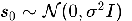
y reinyección
de la entrada hasta veces (132 capas efectivas), aunque
investigaciones posteriores mediante sondeo (Lu et al.,
arXiv:2507.02199) señalaron la ambigüedad de la interpretación textual
directa de las iteraciones ocultas intermedias y una reserva de memoria
factual más modesta (MMLU 31.4 %) en comparación con los modelos
entrenados con 4T tokens187. En octubre, Rui-Jie Zhu et al. (ByteDance)
entrenaron con 7.7T tokens los modelos de bucle de pila completa con
salida adaptativa Ouro-1.4B y Ouro-2.6B
(arXiv:2510.25741, n.º 418)77, donde el modelo de 2.6B con alcanzó un 90.8 % en MATH-500 y se equiparó
a modelos densos de hasta 12B gracias a la composición multipaso del
conocimiento, y Boheng Wu et al. eliminaron la penalización secuencial
de latencia de los bucles con el calendario segmentado
Cross-Loop Parallelism en el Parallel Loop
Transformer (PLT) (arXiv:2510.24824, n.º 419)33. Al mismo
tiempo, Ali Behrouz et al. crearon la neuromemoria a largo plazo
Titans, actualizada en inferencia por gradiente con
momento (arXiv:2501.00663, n.º 420)288, Tianyuan Zhang et al. escalaron
el entrenamiento de pesos rápidos por bloques hasta 1M de tokens en
LaCT (arXiv:2505.23884, n.º 421)289, Maximilian Beck y
Sepp Hochreiter publicaron xLSTM 7B (arXiv:2503.13427,
n.º 422)183, y Bo Peng et al., RWKV-7 "Goose", con
evolución dinámica de bajo rango del estado (arXiv:2503.14456, n.º
423)236.
En la difusión discreta de texto aparecieron LLaDA-8B
de Shen Nie et al. (y su variante MoE 7B-A1B), entrenada desde cero con
una pérdida ELBO ponderada
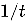
(arXiv:2502.09992, n.º 424)35, la familia comercial Mercury
Coder de Inception Labs, con una velocidad de generación
paralela de 1,109 tokens/s en H100 (arXiv:2506.17298,
n.º 425)58 y Dream 7B de Jiacheng Ye et al.
(arXiv:2508.15487, n.º 426)294. En la generación de vídeo, el equipo de
Alibaba liberó bajo licencia Apache 2.0 los modelos Wan
2.1 (arXiv:2503.20314, n.º 427) y Wan 2.2 (n.º
428): la primera arquitectura de difusión de vídeo con un
eliminador de ruido MoE temporal de dos expertos (27B
de parámetros totales / 14B activos, con conmutación entre el experto de
estructura gruesa y el de detalles finos según un umbral de SNR sin
aumento del coste por paso, más el modelo compacto
TI2V-5B con compresión VAE 4×16×16 para una sola RTX
4090)172. También aparecieron HunyuanVideo 1.5 (8.3B de
parámetros, 75 s de renderizado en una RTX 4090 en modo step-distilled,
arXiv:2511.18870, n.º 429)297, el editor contextual y generador de 32
mil millones de parámetros FLUX.1 Kontext / FLUX.2
(Mistral-3 24B + VAE de 128 canales, n.º 430)174, el codificador
multilingüe SigLIP 2 (arXiv:2502.14786, 85.0 %
zero-shot en ImageNet para ViT-g/16, n.º 431)239, el modelo de mundo en
vídeo con planificación para robots V-JEPA 2
(arXiv:2506.09985, n.º 432)59 y el codificador visual de 7 mil millones
de parámetros DINOv3, con el mecanismo Gram
Anchoring para conservar los mapas densos de segmentación
durante un entrenamiento prolongado (arXiv:2508.10104, 55.9 mIoU en
ADE20k, n.º 433)301.
En la pila de audio, Alibaba presentó los modelos omnimodales
Qwen2.5-Omni (arXiv:2503.20215, n.º 434) y
Qwen3-Omni (arXiv:2509.17765, arquitectura
Thinker–Talker MoE + codificador AuT
de 12.5 Hz con 20 millones de horas de audio + decodificador causal
instantáneo Code2Wav, sin caída del MMLU de texto, n.º 435)303. Junto a
ellos aparecieron el Step-Audio de 130 mil millones de
parámetros (arXiv:2502.11946, n.º 436)306, el
LLaMA-Omni2 en streaming (arXiv:2505.02625, n.º
437)308, el sintetizador con cuantización FSQ CosyVoice
3 (arXiv:2505.17589, n.º 438)46, los modelos abiertos locales
Kokoro-82M, Orpheus-3B y
Chatterbox311, el generador de diálogos de 90 minutos
sobre un -VAE continuo
Microsoft VibeVoice (arXiv:2508.19205, n.º 439)173, los
LM de audio continuos de Kyutai (arXiv:2509.06926, n.º 440)315, el LLM
de audio Mistral Voxtral (arXiv:2507.13264, n.º
441)316, los ultrarrápidos NVIDIA Canary-1B-v2 y
Parakeet-TDT-0.6B-v3 (arXiv:2509.14128, 3,332.7 RTFx, n.º
442)229 y GigaAM-v3317.
Buques
insignia ultradispersos, atención en profundidad (AttnRes) y ahorro del
caché KV global
Hacia noviembre de 2026, las arquitecturas abiertas (sistematizadas
en el catálogo LLM Architecture Gallery de Sebastian Raschka,
con 132 modelos, y en su monografía «Build a Reasoning Model (From
Scratch)», junio de 2026, n.º 445)1 pasaron a la activación
ultradispersa de los pesos (3–6 % por token) y a la compresión híbrida
de la atención. El modelo DeepSeek V4 Pro (versión 0813
de agosto de 2026, licencia MIT) escaló la MoE hasta 1.6
billones de parámetros con ~49B activos por token (~3.06 %) y
una ventana de 1M de tokens (entrenamiento con >32T tokens con el
optimizador Muon): la combinación de Compressed Sparse Attention
(CSA) y Heavily Compressed Attention (HCA)
redujo el coste computacional con contexto de 1M al 27 % de los FLOPs, y
la memoria del caché KV, al 10 % del nivel de V3.2 (según reseñas
publicadas y materiales de la versión, se informa de un 93–94 % en
LiveCodeBench, >90 % en GPQA Diamond y 62.7 en DeepSWE)31.
El equipo de Moonshot AI, tras el visual-agéntico Kimi
K2.5 (arXiv:2602.02276), publicó el método Attention
Residuals (AttnRes) (arXiv:2603.15031), que sustituye la
acumulación uniforme del flujo residual por una atención softmax por
bloques, aprendida, a lo largo del eje de profundidad de las capas
precedentes, y en julio de 2026 liberó el entonces mayor buque insignia,
de 2.8 billones de parámetros, Kimi K3
(arXiv:2607.24653, 104B de parámetros activos — 16 de 896 expertos
enrutados + 2 compartidos, ventana de 1M, punto de control nativo MXFP4,
n.º 443)4. En Kimi K3 se aplican la alternancia 3:1 de capas lineales
KDA (con un logaritmo del decaimiento sigmoide acotado
inferiormente, que cabe en el rango dinámico de BF16 sobre los núcleos
matriciales densos de los Tensor Cores) y de capas globales
Gated MLA sin ninguna codificación posicional (NoPE),
así como Normalized LatentMoE, con una capa RMSNorm
antes de la proyección ascendente4. La serie de grandes MoE con atención
dispersa se completó con GLM-5 (arXiv:2602.15763,
744B-A40B, MLA + DSA + RL agéntico asíncrono APRIL, 77.8 % en SWE-bench
Verified y 50.4 en AA Index v4.0)321, Tencent Hy4
(770B-A49B, Gated MLA + DSA con IndexCache entre capas e hiperconexiones
iHC de 4 bandas)1 y Meta Muse Spark Open
(816B-A42B)1.
En el polo de los sistemas locales compactos, Google Gemma
4 (arXiv:2607.02770, Apache 2.0, tamaños E2B, E4B, 12B Unified,
26B-A4B MoE y 31B Dense) incorporó de una vez tres mecanismos
arquitectónicos: las tablas de embeddings por capa Per-Layer
Embeddings (PLE) en los modelos menores, la proyección
totalmente libre de codificador (Encoder-Free) de fragmentos de
audio crudo de 40 ms y de parches de imagen directamente al
decodificador en el 12B Unified, y la reutilización de las
claves como valores () junto
con la rotación parcial -RoPE
() en las capas de atención
global (proporción de locales a globales de 5:1), que redujo el caché KV
global en un **37.5 %**73. Pese a las altas puntuaciones en pruebas de
matemáticas y ciencias (89.2 % en AIME 2026 y 84.3 % en GPQA Diamond
para el 31B en modo Thinking), el archivo independiente Artificial
Analysis v5.0.1 señaló el rezago del modelo de 31B en escenarios
agénticos complejos de varios pasos frente a los grandes sistemas de
billones de parámetros324.
Híbridos
3:1 (Qwen 3.8, Nemotron 3/3.5), Mamba-3, FlashAttention-4 y modelos de
difusión con bucles
La hibridación de la memoria matricial lineal con una atención
completa escasa se consolidó en Alibaba Qwen 3.8-27B
(agosto de 2026, Apache 2.0, arquitectura VLM densa de 64 capas: 16
bloques de 3 capas Gated DeltaNet y 1 capa
Gated Attention, en paralelo con el modelo
cerrado/insignia 2.4T-A95B Qwen 3.8-Max)11. En las 48 capas Gated
DeltaNet se almacenan matrices de estado de tamaño fijo de 48 cabezas de
valores , que ocupan 72.0 MiB
constantes en BF16 (144.0 MiB / 151.0 MB en
FP32) para cualquier longitud de secuencia, mientras que las 16
capas Gated Attention requieren cuatro veces menos memoria de caché KV
que un transformador homogéneo de 64 capas30. En la familia
NVIDIA Nemotron 3 Super (120B-A12B, arXiv:2604.12374),
Nemotron 3 Ultra (550B-A55B, 108 capas,
arXiv:2606.15007) y Nemotron 3.5 Super & Lightning
(arXiv:2610.38095), el híbrido Mamba-2 + GQA se combina con
LatentMoE () y un
borrador MTP recursivo para la decodificación especulativa con contexto
de hasta 1M de tokens27.
Los propios núcleos básicos de los SSM y de la atención recibieron una
actualización fundamental. Aakash Lahoti, Tri Dao, Albert Gu et al.
presentaron Mamba-3 (arXiv:2603.15569, ICLR 2026)32: la
transición a la discretización exponencial-trapezoidal
de segundo orden de precisión eliminó
la necesidad de una convolución 1D externa, las transiciones de
estado de valores complejos (equivalentes a una
RoPE dependiente de la entrada) permitieron seguir la
paridad (Parity) con un 100 % de precisión, y la formulación
MIMO de rango elevó 4× la
intensidad aritmética de la decodificación sin aumentar la latencia,
igualando el estado con el anterior
329. Ali Hatamizadeh, Yejin Choi y Jan
Kautz separaron las compuertas de borrado y de escritura en
Gated DeltaNet-2 (arXiv:2605.22791)248, y el
laboratorio de Tri Dao publicó FlashAttention-4
(arXiv:2603.05451) para el escalado asimétrico de los aceleradores
NVIDIA Blackwell (B200/GB200): la emulación polinómica
de la exponencial en las unidades FMA y la omisión condicional
del reescalado del softmax en línea con
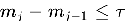
lograron 1,600 TFLOPs/s (71 % del pico), y
la escritura del núcleo en Python con CuTe-DSL redujo
el tiempo de compilación entre 20 y 30 veces en comparación con las
plantillas de C++223. En la intersección de los bucles y la difusión,
Sanghyun Lee et al. crearon los Looped Diffusion Language Models
(LoopMDM) (arXiv:2605.26106, NeurIPS 2026), que ponen en bucle
las capas tempranas y medias de un LM de difusión enmascarada, con un
ahorro de hasta 3.34× en FLOPs de entrenamiento188
(desarrollado en Looped UDLMs, arXiv:2610.3006656);
aparecieron también el estudio de saturación del codificador de 7B
LoopCoder-v2 (PLT-7B) (arXiv:2606.18023)38, los
Hyperloop Transformers (arXiv:2604.21254)334,
LoopFold (arXiv:2610.35556)194 y el modelo MoE abierto
con bucles Inkling 2 Mini (Thinking Machines Lab,
26.4B-A3.4B, 3 pasadas de las capas medias + AttnRes)197.
Síntesis
síncrona de audio y vídeo LTX-2.5 y agentes de voz de dúplex completo
con herramientas
En el vídeo generativo, Lightricks publicó LTX-2
(arXiv:2601.03233, DiT asimétrico de dos flujos, con 14B para el flujo
de vídeo con 3D-RoPE y 5B para el flujo de audio con 1D-RoPE, conectados
por atención cruzada bidireccional en el tiempo)335 y en agosto de 2026
lanzó el LTX-2.5 de 22 mil millones de parámetros
(codificador de texto Gemma 4 12B, generación de vídeo síncrono de hasta
4K con una duración de hasta 20 s y sonido estéreo de 24 kHz en una sola
pasada, continuidad de escenas multiplano y control IC-LoRA)258,
mientras que en la generación de imágenes el transformador desacoplado
DDT-XL/2 de Wang et al. (CVPR 2026, arXiv:2504.05741)
redujo el FID en ImageNet 256×256 hasta 1.26219. En el
habla de dúplex completo, el equipo de NVIDIA presentó
PersonaPlex 7B (arXiv:2602.06053, prompt híbrido de rol
y de muestra de voz fijado en el contexto sobre la arquitectura Moshi +
Mimi: naturalidad DMOS 3.90 ± 0.15 y similitud de
clonación de voz SSIM 0.57)68 y NemotronLabs
VoiceChat (arXiv:2609.21967, el primer modelo STS Full-Duplex
abierto con llamada nativa a herramientas (Tool Calling), transcripción
auxiliar RNN-T, 100 % de intercepción ante interrupciones y 93 % de
continuación del habla tras las interjecciones del oyente)69. La pila de
voz en streaming la completaron Qwen3-TTS
(arXiv:2601.15621, rama causal de 12.5 Hz con MTP de 16 libros de
códigos y una latencia del primer paquete de unos 97–100
ms) y Qwen-Audio-3.0-TTS (arXiv:2607.23938)54,
Qwen3.5-Omni (arXiv:2604.15804, alineación ARIA)342,
Fish Audio S2-Pro (arXiv:2603.08823, TTFA ~100 ms, RTF
0.195) y Drama 3 (arXiv:2610.18010)158, el
Kyutai Pocket TTS, que funciona a 6× la velocidad del
tiempo real en dos núcleos de CPU de un portátil (100M de parámetros,
MIT)344, el Mistral Voxtral Realtime en streaming
(arXiv:2602.11298, latencia de 480 ms)345, GigaAM
Multilingual (arXiv:2607.10371, Interspeech 2026)346 y el
Nemotron 3.5 Transcribe de dos ramas (TDT + diarizador
Sortformer)348.
2027
Dominios: Atención/LLM Bucles/SSM Difusión Vídeo
Optimización
El programa científico de 2027, fijado a noviembre de
2026 por las publicaciones aceptadas de las conferencias de invierno y
primavera WACV 2027, AAAI / IAAI 2027,
WSDM 2027, DATE 2027 y por el corpus
abierto sometido a revisión por pares de 37,028 envíos de ICLR
2027 en OpenReview, se centra en la unificación teórica de los
paradigmas generativos y en la eliminación de las sutiles patologías
numérico-fásicas de las redes híbridas y con bucles15. En el artículo de
Amandeep Kumar, Nithin Nair y Vishal Patel «Scale-wise VAR is
Secretly Discrete Diffusion» (n.º 444)17, aceptado en WACV 2027, se
demuestra con rigor que los modelos autorregresivos visuales de
predicción de la siguiente escala (VAR) son funcionalmente equivalentes
a la difusión enmascarada discreta por escalas en un espacio latente
multiescala. En las actas de WACV 2027 y AAAI/IAAI 2027 se presentan
además los transformadores enmascarados de vídeo para segmentación de
largo plazo LVMT (Norouzi et al.)16, esquemas de flujo
de un solo paso (arXiv:2608.09579), los decodificadores de difusión
PixCell (arXiv:2611.01141), sesgos estructurales de la
atención (arXiv:2611.04657) y arquitecturas industriales de recuperación
con autoridad acotada (arXiv:2611.20398)19.
En el corpus revisado por pares de ICLR 2027 se han identificado tres
mecanismos fundamentales de la próxima generación. En primer lugar, el
análisis de la compresión del caché KV por bloques («Periodic Weak
Spots: Phase Sensitivity from Chunked KV-Cache Compression») mostró
que, en modelos de la clase DeepSeek-V4, la precisión de recuperación de
hechos varía hasta 40 puntos porcentuales según la fase
de la posición del token respecto de los límites de la ventana de
compresión, debido a la aparición de cabezas especializadas por fase15.
En segundo lugar, un trabajo sobre la estabilidad numérica del paso
inverso de la atención (OpenReview:LJvGaCWmFh) estableció que las
explosiones tardías de gradientes en el entrenamiento con BF16
FlashAttention-3 se deben a la violación, por el redondeo BF16,
de la ley exacta de conservación de la suma de gradientes de las filas
del softmax (error mediano del gradiente de las consultas del 219%), y
propuso una corrección del núcleo inverso que reduce el error hasta
0.34% / 0.37% (nivel FP32) con un encarecimiento del
paso de solo un 4.7%352. En tercer lugar, se propusieron los
Variable-Width («Hourglass») Transformers, estrechados
en el medio, las Matryoshka Language Model Suites
anidadas (ahorro del 36% de cómputo en el entrenamiento de la gama de
tamaños) y el método SafeBridge para alinear la
seguridad de los modelos con bucles en todas las profundidades de
recursión, en respuesta al descubrimiento de que reducir a la mitad el
número de bucles en inferencia en Ouro y Huginn conserva el 89% de la
precisión en GSM8K, pero destruye el vector de rechazo, de formación
tardía, aumentando la vulnerabilidad a las solicitudes maliciosas entre
5.3 y 9.9 veces15.
Apéndice
A. Tablas resumen de arquitecturas, benchmarks, estadísticas y
repositorios
Tabla
A.1. Matriz cronológica completa de arquitecturas y mecanismos
(1958–2027, paso de 1 año)
Año
Dominio / Etiquetas
Arquitectura / algoritmo clave
Mecanismo matemático de referencia
Hitos, autores y número en la
Bibliografía
1958
Base
Perceptrón Mark I
Hiperplano
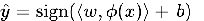
, corrección de errores
Rosenblatt (n.º 1), von Neumann (n.º
2)
1959
Codificador Base
Pandemonium; TD-damas; Campos receptivos
de V1
Selección paralela ; diferencia temporal de la evaluación de la
posición
Scale-wise VAR = dLLM; Análisis de fases
del KV de DeepSeek-V4; FA-bwd exacto en BF16; Hourglass LM;
SafeBridge
Isomorfismo entre VAR y la difusión
enmascarada; ley de conservación del gradiente del softmax; seguridad
por bucles
Kumar et al. (WACV'27, n.º 444)17,
OpenReview ICLR'2715
Dos cambios sistémicos determinantes de las arquitecturas de lenguaje
abiertas de 2024–2026 se sitúan en el plano de la gestión de la memoria
de las tarjetas de vídeo: la compresión radical del estado del contexto
(mediante el caché de bajo rango MLA y la sustitución del 75% de las
capas de atención por la memoria matricial de tamaño constante respecto
de la longitud de Gated DeltaNet o KDA) y la transición a la activación
ultradispersa de los pesos, en la que, con un volumen total de
conocimiento de 0.7–2.8 billones de parámetros, por cada token se activa
solo el 3.1–10.0% de la red4.
La comparación de los volúmenes de memoria citados explica la economía
práctica de la inferencia agéntica de contexto largo: en los modelos
homogéneos de atención completa, el crecimiento lineal del caché KV
supera rápidamente el tamaño de los propios pesos del modelo, lo que
obliga a distribuir la inferencia entre varios nodos solo para almacenar
el historial del diálogo196. En cambio, la arquitectura híbrida 3:1
congela por completo el crecimiento de la memoria en el 75% de las capas
de la red (dejándola en 72 MiB en BF16 independientemente de que la
longitud del contexto sea de 32K o de 1M de tokens) y, combinada con un
3–5% de expertos activos, permite atender trayectorias de varios pasos
un orden de magnitud más barato con igual calidad30.
Tabla
A.2. Especificaciones arquitectónicas y benchmarks de los LLM insignia
abiertos y de los híbridos (2024–2026)
Nota sobre la atribución (a fecha de 25.11.2026): Las
métricas se dan según los informes técnicos oficiales y las fichas de
modelo de los desarrolladores; cuando existen mediciones o reseñas
independientes (Epoch AI, Artificial Analysis, resúmenes técnicos), la
fuente se indica explícitamente en la celda31. El guion (—) significa
que en la fuente primaria no hay una publicación comparable de la
métrica.
La dinámica de la densidad intelectual entre las generaciones de 2025
y 2026 se manifiesta con especial claridad al comparar problemas
científicos y de olimpiada complejos (GPQA Diamond y AIME 2026) con la
eficiencia paramétrica de los modelos de profundidad recurrente10.
Los datos presentados revelan una regularidad importante: en las tareas
de deducción secuencial (AIME, MATH-500) el factor decisivo no es el
número bruto de parámetros únicos, sino la profundidad efectiva de
las transformaciones no lineales secuenciales, alcanzada bien
explícitamente mediante el modo de razonamiento en contexto (el modo
Thinking de Gemma 4 26B-A4B, con 3.8B de parámetros activos, eleva AIME
2026 hasta el 88.3% frente al 20.8% de Gemma 3 27B sin razonamiento),
bien implícitamente dentro del estado oculto mediante pasadas recurrentes por la pila compartida
de capas en Ouro-2.6B286.
Tabla
A.3. Modelos de lenguaje de profundidad recurrente (con bucles) y de
difusión (2025–2026)
Modelo / Arquitectura
Paradigma y topología de la
profundidad
Parámetros únicos / Tokens de
entrenamiento
Métricas experimentales clave y
aceleraciones
Huginn-0125
(arXiv:2502.05171)3
Bucle sándwich con inyección por concat de la entrada y , ()
3.5B / 800B tokens (4,096 MI250X)
Al aumentar los bucles : ARC-Easy 49.07%69.91%, HellaSwag 43.46%65.21%, GSM8K CoT 42.08%; zero-shot KV-sharing en 4 ranuras
sin pérdidas en MT-Bench (5.86)284
Ouro-1.4B & Ouro-2.6B
(arXiv:2510.25741)286
Bucle de pila completa () con compuerta de salida temprana
entrenable (ACT gate)
1.4B y 2.6B / 7.7T tokens
Ouro-1.4B: MMLU 67.3%,
GSM8K 78.9%, MATH-500 82.4%; Ouro-2.6B: MMLU 74.6%,
MMLU-Pro 55.7%, BBH 80.5%, MATH-500 90.8% (comparable a
los densos de hasta 12B)286
Canalización Cross-Loop Parallelism (CLP)
+ KV común del primer bucle + Gated SWA ()
1.7B act. / 7B densa (18T tokens de código
y texto)
Elimina la penalización secuencial de
latencia (+96%~4% de sobrecarga con
); +5.0 p.p. de precisión con 2 bucles,
se diagnosticó saturación con por el
desfase de fase de CLP33
Inkling 2 Mini (Thinking
Machines, nov. 2026)197
Sándwich
aplicaciones de 24 capas + AttnRes + MoE (8/128)
26.4B en total / 3.4B únicos activos (5.4B
de activaciones)
Contexto de 1,048,576 tokens, Apache 2.0,
5 SWA locales (1024) + 1 GQA global por bloque, caché KV de 192
KiB/token197
LLaDA-8B / LLaDA-MoE
(arXiv:2502.09992)35
Transformador de difusión enmascarada
bidireccional (MDM, ELBO
ponderado)
8B densa; 7B-A1B MoE
Paridad con LLaMA-3 8B a igualdad de
FLOPs; Instruct (desenmascaramiento por bloques): GSM8K
78.6%, MATH 42.2%, CMMLU 69.9%; supera
la reversal curse57
Dream 7B
(arXiv:2508.15487)57
LLM de difusión discreta inicializada a
partir de pesos autorregresivos
7B densa
MATH 51.2%, HumanEval
54.3%, sólida planificación y relleno bidireccional de
huecos57
Mercury Coder Mini /
Small (arXiv:2506.17298)58
LLM de código de difusión comercial con
generación paralela de tokens
Escala cerrada (billones de tokens)
Rendimiento en NVIDIA H100 estándar:
1,109 tok./s (Mini) y 737 tok./s
(Small) según la medición de Artificial Analysis (hasta 10× más rápido
que los modelos AR)58
Bucle selectivo sobre las capas
temprano-medias dentro del eliminador de ruido de la difusión
discreta
125M–170M (NeurIPS 2026)
Alcanza el mismo NLL de validación con
3.34× menos FLOPs de entrenamiento en FineWeb-Edu; +8.5
p.p. en GSM8K; la salida adaptativa ahorra hasta un 34.8% de
bucles56
Tabla
A.4. Codificadores visuales y modelos generativos de imágenes y vídeo
(2012–2026)
Evolución desde las CNN 2D (ReLU+Dropout)
hacia las redes residuales y los transformadores de parches
60M 60M
632M
Precisión Top-1 en ImageNet-1K:
63.3% (AlexNet)
78.3% (ResNet-152, conjunto con 3.57% de error Top-5)
88.55% (ViT-H/14
JFT)177
SigLIP 2 (feb. 2025,
arXiv:2502.14786)300
ViT multilingüe (109 idiomas): Sigmoid
loss + decodificador LocCa + SILC/TIPS + NaFlex
86M (B), 303M (L), 400M (So400m), 1B
(g)
Top-1 zero-shot en ImageNet-1K:
84.3% (So400m/16 @ 512px) y 85.0%
(ViT-g/16 @ 384px); COCO T2I R@1: 53.2% en B/16300
V-JEPA 2 (jun. 2025,
arXiv:2506.09985)59
Predicción autosupervisada de
características de vídeo sin píxeles ni texto + V-JEPA 2-AC
Entrenado en VideoMix22M (hasta 64
fotogramas de 384×384)
Something-Something v2:
77.3% Top-1; PerceptionTest: 84.0%;
anticipación de acciones en Epic-Kitchens-100: 39.7 R@5
(+44% rel.)59
DINOv3 (ago. 2025,
arXiv:2508.10104)301
Autodestilación con 1.7B de imágenes +
Gram Anchoring de los mapas densos de parches
Desde 21.6M (ViT-S/16) hasta
7B (ViT-7B/16)
Sondeo lineal de características
congeladas: ImageNet-1K 88.0%, segmentación ADE20k
55.9 mIoU (frente a 49.5 de DINOv2-g/14)301
ADMLDM-4DiT-XL/2SiT-XL/2 + REPADDT-XL/236
Evolución de la generación de ImageNet
256×256: U-Net en píxeles U-Net en VAE
DiT
alineación con DINOv2 DiT
desacoplado
554M / 400M / 675M / 675M / 675M
FID-50K en ImageNet 256×256 (con CFG,
menor es mejor): 4.59 (ADM) 3.60 (LDM-4) 2.27 (DiT-XL/2) 2.06 (SiT-XL/2) 1.42 (+REPA, convergencia
17.5× más rápida)
1.26 (DDT-XL/2, 2025–2026)36
FLUX.1 (2024) FLUX.2 (nov. 2025,
BFL)174
Rectified Flow latente + MMDiT; en la 2.ª
versión, VLM Mistral-3 24B + VAE de 128 canales
12B (FLUX.1) 32B (FLUX.2 [dev])
Generación unificada y edición multiimagen
de hasta 4 Mpx con número de pasos controlable y tipografía
precisa299
HunyuanVideo (dic. 2024)
& 1.5 (nov. 2025)257
DiT Dual-to-Single Stream + codificador de
texto MLLM + Causal 3D-VAE + 3D-RoPE
13B (v1.0, compresión 4×8×8) /
8.3B (v1.5)
v1.0: 66.5% de calidad de movimiento en
prueba ciega (60–80 GB de VRAM); v1.5: renderizado en ~75 s en
una sola RTX 4090 (step-distilled)297
Wan 2.1 (feb. 2025) &
Wan 2.2 (jul. 2025, Apache 2.0)172
DiT de Flow-Matching; en 2.2, MoE
temporal de 2 expertos según el SNR y VAE comprimido
27B-A14B MoE (4×8×8) y
TI2V-5B (4×16×16)
Líder de los modelos abiertos en estética
(85.3 en Wan-Bench 2.0) y en VBVR (0.371 frente a 0.273 de
CogVideoX-1.5); el 5B renderiza 720p@24fps en una sola RTX 4090172
LTX-VideoLTX-2LTX-2.5 (ago. 2026,
Lightricks)259
Video-VAE superconprimido (1:192) DiT asimétrico de audio y vídeo de
dos flujos con atención cruzada 1D/3D-RoPE
2B/13B
19B (14B V + 5B A)
22B (+Gemma 4 12B)
Generación síncrona de vídeo de hasta 4K
(hasta 20 s en Fast) y sonido estéreo de 24 kHz (diálogos, foley,
sincronización labial) en una sola pasada; ejecución desde 12–24 GB de
VRAM en FP8297
Simultáneamente, en los dominios visual y del habla, hacia 2026 los
modelos generativos se acercaron mucho a dos límites físicos
fundamentales: el límite de precisión de reconstrucción del propio
autocodificador latente (rFID = 1.20 en el SD-VAE estándar en ImageNet
256×256) y la duración media de la pausa natural entre turnos en una
conversación humana en vivo (230 ms según mediciones
translingüísticas)70.
Que los eliminadores de ruido alcancen un umbral de FID de 1.26 frente
al 1.20 del propio SD-VAE explica por qué el foco de investigación en la
segunda mitad de 2025–2026 se desplazó de la modificación del propio
transformador de difusión al rediseño de los espacios latentes de los
autocodificadores: desde el ajuste de extremo a extremo del VAE con
REPA-E hasta el espacio de 128 canales FLUX.2-VAE y el
espacio de vídeo muy comprimido Wan2.2-VAE36. Por su
parte, en la pila del habla, el paso a una frecuencia de tramas
ultrabaja de 12.5 Hz (paso de 80 ms en Mimi, Qwen3-Omni
y Qwen3-TTS) permitió encajar la generación del primer paquete de audio
en uno o dos pasos del decodificador autorregresivo, haciendo que la
comunicación de voz en vivo con interrupciones fuera indistinguible por
su temporización de un diálogo entre personas48.
Tabla
A.5. Características y métricas resumidas de la pila del habla: STT
(ASR), TTS y Full-Duplex STS (2020–2026)
Sistema (Desarrollador, Año)
Clase y arquitectura
Frecuencia de tokens / Códec
Métricas verificadas de precisión,
velocidad y latencia
Parakeet-TDT-0.6B-v3:
6.32% de WER medio con una velocidad de 3,332.7 RTFx
(54× más rápido que los LLM-ASR); Canary-1B-v2: 25
idiomas, 7.15% de WER en EN, 749 RTFx229
Transcripción simultánea literal y con
formato, marcas de tiempo de palabras y diarización de hablantes de
extremo a extremo con 65K tokens (BF16/FP8/NVFP4)348
CosyVoice 3 (Alibaba,
may. 2025)46
TTS AR-LLM de tokens de habla + generador
Flow-Matching + DiffRO RL
25 Hz monoflujo
FSQ (MinMo)
Líder en el benchmark de referencias «en
el mundo real» CV3-Eval, bi-streaming bilateral y clonación de voz entre
idiomas46
Qwen3-TTS (Alibaba, ene.
2026)341
TTS LLM de dos pistas (0.6B/1.7B, 5M h) +
MTP de 16 libros de códigos
12.5 Hz (16 RVQ) o
25 Hz (DiT)
Primer paquete de audio en ~97–100
ms por el camino causal de 12.5 Hz; reducción del error ZH→KO del 66% respecto de CosyVoice 3 (4.82
frente a 14.4 WER); >10 min de habla estable63
Kyutai Pocket TTS (ene.
2026, MIT)315
TTS LM de audio continuo con ruido en los
latentes (100M de parámetros)
Salida de 24 kHz sin GPU
Funciona a ~6× la velocidad del
tiempo real en 2 núcleos de CPU (MacBook Air M4), latencia del
primer bloque ~200 ms, clonación de voz, 6 idiomas344
Fish Audio S2-Pro (mar.
2026)158
TTS Dual-AR secuencial (Fast AR por libros
de códigos) + GRPO + SGLang
RVQ de 10 libros de códigos (base
DAC)
Más de 80 idiomas, TTFA ~100
ms, RTF 0.195 en H200 (>3000 tok./s),
victoria del 81.88% en EmergentTTS-Eval (91.61% en
paralingüística)55
Full-Duplex-Bench 1.0: 100% de
intercepción ante interrupciones, calidad de respuesta 4.33/5;
FDB 1.5: 93% de retorno al habla tras las
interjecciones; FDB 3.0: 82.5% de F1 en la selección de
herramientas69
Tabla
A.6. Registro de los principales repositorios abiertos de arquitecturas
neuronales y núcleos (Open-Source Ecosystem)
Dominio
Repositorio (GitHub / Organización)
Licencia
Mecanismos implementados y valor de
ingeniería
Catálogo de arquitecturas
LLM
rasbt/llm-architecture-gallery197
Apache-2.0
Metadatos models.yml, esquemas y
calculadora de memoria para 132 arquitecturas LLM modernas (actualizado
en noviembre de 2026)
Núcleos de atención (Hopper /
Blackwell)
Dao-AILab/flash-attention223
BSD-3
FlashAttention-1/2/3 y
FlashAttention-4 en Python CuTe-DSL (softmax en línea
condicional, canalizaciones asíncronas B200)
Códec Mimi,
Moshi y PersonaPlex de dúplex
completo, decodificadores FastConformer / TDT, modelo
omni Qwen3-Omni y síntesis en CPU Pocket
TTS
Apéndice
B. Listados de programas de referencia de todos los mecanismos
clave
A continuación se presentan doce módulos autocontenidos en el
lenguaje Python (torch) que implementan los mecanismos matemáticos de
referencia de los diez dominios tratados en los capítulos 1958–2027.
Listado
B.1. Perceptrón (1958) y motor de autodiferenciación inversa
(1970–1986)
import mathimport torchimport torch.nn as nnimport torch.nn.functional as Fclass RosenblattPerceptron:"""1958–1962: Perceptrón lineal de Rosenblatt con la cota de convergencia de Novikoff (R/gamma)^2."""def__init__(self, dim: int, lr: float=1.0):self.w = torch.zeros(dim)self.b = torch.zeros(1)self.lr = lrdef fit_step(self, x: torch.Tensor, y: float) ->bool: margin = y * (torch.dot(self.w, x) +self.b)if margin <=0.0:self.w =self.w +self.lr * y * xself.b =self.b +self.lr * yreturnTruereturnFalseclass ScalarNode:"""1970, 1976, 1986: Modo inverso de la autodiferenciación (Linnainmaa / Rumelhart et al.)."""def__init__(self, val: float, parents: tuple= ()):self.val =float(val)self.grad =0.0self._parents = parentsdef__add__(self, other: "ScalarNode") ->"ScalarNode":return ScalarNode(self.val + other.val, ((self, 1.0), (other, 1.0)))def__mul__(self, other: "ScalarNode") ->"ScalarNode":return ScalarNode(self.val * other.val, ((self, other.val), (other, self.val)))def tanh(self) ->"ScalarNode": t = math.tanh(self.val)return ScalarNode(t, ((self, 1.0- t * t),))def backward(self) ->None: topo, visited = [], set()def build(node: "ScalarNode") ->None:if node notin visited: visited.add(node)for parent, _ in node._parents: build(parent) topo.append(node) build(self)self.grad =1.0for node inreversed(topo):for parent, local_deriv in node._parents: parent.grad += node.grad * local_deriv
Listado
B.2. Bloques básicos de Transformer++: RMSNorm (2019), SwiGLU (2020) y
bloque Conformer (2020)
class RMSNorm(nn.Module):"""2019: Root Mean Square Layer Normalization sin centrado de la media (Zhang & Sennrich)."""def__init__(self, dim: int, eps: float=1e-6):super().__init__()self.eps = epsself.weight = nn.Parameter(torch.ones(dim))def forward(self, x: torch.Tensor) -> torch.Tensor: rms = torch.rsqrt(x.float().pow(2).mean(dim=-1, keepdim=True) +self.eps)return (x.float() * rms).to(x.dtype) *self.weightclass SwiGLUFFN(nn.Module):"""2020: Subred totalmente conectada con compuertas SwiGLU (Shazeer)."""def__init__(self, d_model: int, d_ff: int):super().__init__()self.w_gate = nn.Linear(d_model, d_ff, bias=False)self.w_up = nn.Linear(d_model, d_ff, bias=False)self.w_down = nn.Linear(d_ff, d_model, bias=False)def forward(self, x: torch.Tensor) -> torch.Tensor:returnself.w_down(F.silu(self.w_gate(x)) *self.w_up(x))class ConformerConvModule(nn.Module):"""2020: Módulo convolucional de Conformer / FastConformer (Pointwise GLU -> Depthwise Conv1d -> SiLU)."""def__init__(self, d_model: int, kernel_size: int=15):super().__init__()self.norm = RMSNorm(d_model)self.pw_in = nn.Conv1d(d_model, 2* d_model, kernel_size=1)self.dw = nn.Conv1d(d_model, d_model, kernel_size=kernel_size, padding=kernel_size //2, groups=d_model)self.gn = nn.GroupNorm(1, d_model)self.pw_out = nn.Conv1d(d_model, d_model, kernel_size=1)def forward(self, x: torch.Tensor) -> torch.Tensor: h =self.norm(x).transpose(1, 2) a, b =self.pw_in(h).chunk(2, dim=1) h = a * torch.sigmoid(b) h =self.pw_out(F.silu(self.gn(self.dw(h)))).transpose(1, 2)return x + h
Listado
B.3. Evolución de la memoria con compuertas: LSTM con compuerta de
olvido (1997–2000) frente a mLSTM en xLSTM (2024–2025)
Listado
B.12. Pila completa del habla: CTC (2006), RVQ y FSQ (2021–2025), TDT
(2023) y el ciclo Full-Duplex de Moshi / PersonaPlex
(2024–2026)
def ctc_forward_log_likelihood(log_probs: torch.Tensor, targets: list[int], blank: int=0) -> torch.Tensor:"""2006: Algoritmo exacto de programación dinámica hacia delante de CTC en el espacio logarítmico (Graves et al.).""" ext = [blank]for y in targets: ext.extend([y, blank]) L_ext, T_steps =len(ext), log_probs.size(0) alpha = log_probs.new_full((T_steps, L_ext), -float("inf")) alpha[0, 0] = log_probs[0, ext[0]]if L_ext >1: alpha[0, 1] = log_probs[0, ext[1]]for t inrange(1, T_steps):for s inrange(L_ext): prev = [alpha[t -1, s]]if s >=1: prev.append(alpha[t -1, s -1])if s >=2and ext[s] != blank and ext[s] != ext[s -2]: prev.append(alpha[t -1, s -2]) alpha[t, s] = torch.logsumexp(torch.stack(prev), dim=0) + log_probs[t, ext[s]] end_terms = [alpha[-1, -1]] + ([alpha[-1, -2]] if L_ext >1else [])return torch.logsumexp(torch.stack(end_terms), dim=0)class ResidualVQTokenizer(nn.Module):"""2021–2026: Cuantización vectorial residual de audio RVQ (SoundStream / EnCodec / Mimi / Qwen3-TTS)."""def__init__(self, d_latent: int=128, n_codebooks: int=8, codebook_size: int=2048):super().__init__()self.codebooks = nn.ModuleList([nn.Embedding(codebook_size, d_latent) for _ inrange(n_codebooks)])def forward(self, z: torch.Tensor) ->tuple[torch.Tensor, torch.Tensor, torch.Tensor]: residual, z_q_total, codes_all, commit_loss = z, torch.zeros_like(z), [], z.new_zeros(())for cb inself.codebooks: dist = residual.pow(2).sum(-1, keepdim=True) -2* (residual @ cb.weight.t()) + cb.weight.pow(2).sum(-1) idx = dist.argmin(dim=-1) q = cb(idx) commit_loss = commit_loss + F.mse_loss(residual, q.detach()) +0.25* F.mse_loss(residual.detach(), q) z_q_total = z_q_total + (residual + (q - residual).detach()) residual = residual - q.detach() codes_all.append(idx)return z_q_total, torch.stack(codes_all, dim=-1), commit_lossclass FiniteScalarQuantizer(nn.Module):"""2023–2025: Cuantización escalar FSQ sin libro de códigos, con gradiente de extremo a extremo (CosyVoice 3)."""def__init__(self, d_in: int=256, levels: list[int] = [8, 5, 5, 5]):super().__init__()self.register_buffer("levels", torch.tensor(levels, dtype=torch.float32))self.proj_down = nn.Linear(d_in, len(levels))self.proj_up = nn.Linear(len(levels), d_in)def forward(self, h: torch.Tensor) ->tuple[torch.Tensor, torch.Tensor]: half_w = (self.levels -1.0) *0.5 z = torch.tanh(self.proj_down(h)) * half_w z_q = z + (torch.round(z) - z).detach() bases = torch.cumprod(torch.cat([torch.ones(1, device=h.device), self.levels[:-1]]), dim=0) indices = ((torch.round(z) + half_w) * bases).long().sum(dim=-1)returnself.proj_up(z_q), indices@torch.no_grad()def tdt_frame_skipping_greedy_decode(enc_frames: torch.Tensor, pred_step_fn, joiner_fn, blank_id: int=0, durations: tuple= (0, 1, 2, 3, 4)) ->list[int]:"""2023–2026: Decodificación del Token-and-Duration Transducer con omisión de tramas (Parakeet-TDT).""" T_frames = enc_frames.size(0) t, pred_state, transcript, last_tok =0, None, [], blank_idwhile t < T_frames: pred_vec, cand_state = pred_step_fn(last_tok, pred_state) tok_logits, dur_logits = joiner_fn(enc_frames[t], pred_vec) tok =int(tok_logits.argmax().item()) skip = durations[int(dur_logits.argmax().item())]if tok != blank_id: transcript.append(tok) last_tok, pred_state = tok, cand_state t +=max(1, skip) if skip >0else1else: t +=max(1, skip)return transcriptclass FullDuplexRQStep(nn.Module):"""2024–2026: Un ciclo de 80 ms (12.5 Hz) del modelo de dúplex completo Moshi / PersonaPlex."""def__init__(self, d_temporal: int=512, d_depth: int=256, n_cb: int=8, text_vocab: int=4096, audio_vocab: int=2048):super().__init__()self.n_cb = n_cbself.user_embs = nn.ModuleList([nn.Embedding(audio_vocab, d_temporal) for _ inrange(n_cb)])self.agent_embs = nn.ModuleList([nn.Embedding(audio_vocab, d_temporal) for _ inrange(n_cb)])self.text_emb = nn.Embedding(text_vocab, d_temporal)self.temporal_cell = nn.GRUCell(d_temporal, d_temporal)self.inner_monologue_head = nn.Linear(d_temporal, text_vocab)self.to_depth = nn.Linear(d_temporal, d_depth)self.depth_cell = nn.GRUCell(d_depth, d_depth)self.cb_emb_depth = nn.ModuleList([nn.Embedding(audio_vocab, d_depth) for _ inrange(n_cb)])self.cb_heads = nn.ModuleList([nn.Linear(d_depth, audio_vocab) for _ inrange(n_cb)])def step_80ms(self, user_codes_t: torch.Tensor, prev_agent_codes: torch.Tensor, prev_text_tok: torch.Tensor, h_temporal: torch.Tensor): u_sum =sum(emb(user_codes_t[:, q]) for q, emb inenumerate(self.user_embs)) a_sum =sum(emb(prev_agent_codes[:, q]) for q, emb inenumerate(self.agent_embs)) h_temporal =self.temporal_cell(u_sum + a_sum +self.text_emb(prev_text_tok), h_temporal) agent_text_tok =self.inner_monologue_head(h_temporal).argmax(dim=-1) h_d =self.to_depth(h_temporal) d_in =self.cb_emb_depth[0](agent_text_tok %self.cb_heads[0].out_features) agent_codes_out = []for q inrange(self.n_cb): h_d =self.depth_cell(d_in, h_d) code_q =self.cb_heads[q](h_d).argmax(dim=-1) agent_codes_out.append(code_q) d_in =self.cb_emb_depth[q](code_q)return agent_text_tok, torch.stack(agent_codes_out, dim=-1), h_temporal
Apéndice
C. Qué de la monografía ya admite basalt
Este apéndice asigna los tipos de modelo y los mecanismos que la
monografía trata como hitos (sobre todo 2012–2027, más los fundamentos
en los que se apoya basalt) a basalt v0.13.0 a fecha de 2026-11-26. Una
fila está admitida solo si un model_type
registrado, una opción aceptada o un endpoint enrutado la alcanza con
pesos reales. Los núcleos autónomos, las opciones rechazadas o solo
experimentales, y los módulos que cargan pesos en la medida de lo
posible sobre un esqueleto con semilla cuentan como parciales.
Cuando el README de basalt discrepa del código o del CHANGELOG,
prevalecen el código y el CHANGELOG.
Los enlaces a
https://github.com/goodmai/mlx-swift-lm/... apuntan a la
revisión fijada del fork 8e76c2f
(Package.swift), que contiene la mayoría de las
definiciones de arquitecturas.
La lista de comprobación de estas filas para el libro de problemas de
la monografía se sigue en la issue #816.
Fundamentos (Basis)
Mecanismo / tipo de modelo
Capítulo (año)
Estado en basalt
Dónde en basalt
Perceptrón Mark I como máquina de hardware
1958; B.1
fuera de alcance
Un dispositivo físico. La unidad lineal en sí es
MLXNN.Linear.
Autodiferenciación en modo inverso y retropropagación
Las convoluciones aparecen solo dentro de codificadores y
decodificadores: el cuello SAM en DeepSeekOCRSAM.swift
y CausalConv3d.swift.
No hay endpoint de clasificación de imágenes.
Conexiones residuales y la rama Pre-LN (ResNet, Pre-LN ResNet,
GPT-2)
No hay ningún modelo con celdas recurrentes. No se encontraron
pruebas.
Seq2Seq con atención aditiva (Bahdanau)
2014
parcial
El patrón codificador→decodificador existe solo como codificador de
audio → LLM (Nemotron 3.5 Transcribe, NemotronTranscribeEncoder.swift)
y como atención cruzada de texto en los esqueletos DiT. La puntuación
aditiva no existe.
Transformer con atención multicabeza, y LM causal solo decodificador
(GPT-1…3)
2017–2020
admitido
SDPA fusionada de MLX en cada modelo del fork. Las rutas fusionadas
de basalt están en FusedTransformerKernels.swift.
Servido por basalt serve mediante las API de OpenAI y
Anthropic (comandos).
Codificador bidireccional BERT y LM enmascarado
2018
parcial
Los codificadores de la familia BERT sirven
/v1/embeddings y /v1/rerank (Bert.swift,
#178). No hay
cabeza MLM ni entrenamiento MLM.
ModernBERT
2024
todavía no
MLXEmbedders incluye Bert, NomicBert, Qwen3, Gemma3 y
LFM2Bidirectional, y no incluye ModernBERT.
Leyes de escala, Chinchilla, μP
2020–2022
fuera de alcance
Rigen la asignación de cómputo de preentrenamiento, y basalt no
preentrena.
Atención y
codificación posicional (Attention/LLM)
Mecanismo / tipo de modelo
Capítulo (año)
Estado en basalt
Dónde en basalt
MQA y GQA
2019, 2023
admitido
Cabezas KV compartidas en toda atención del fork. Qwen3.8-27B usa 4
cabezas KV. Las capas globales de Gemma 4 12B usan
num_global_key_value_heads = 1. El dimensionado del KV está
en modelos.
FlashAttention: atención por teselas con softmax en línea
2022; B.5
admitido
SDPA Metal fusionada
(MLXFast.scaledDotProductAttention). Los bloques de
prellenado no fusionados quedan limitados por PrefillAttentionScratch.swift
(#762).
Núcleos FlashAttention-2/3/4
2023–2026; B.5
fuera de alcance
Núcleos CUDA para Ampere, Hopper y Blackwell (especialización de
warps, TMA, exp emulada con FMA). En las GPU de Apple, la SDPA Metal de
MLX cumple ese papel.
RoPE
2021
admitido
Todas las familias de LLM servidas, p. ej. Qwen35.swift
partial_rotary_factor 0,25 en las capas globales de
Gemma 4 (Gemma4Text.swift).
YaRN se rechaza sobre p-RoPE (#729).
Claves reutilizadas como valores, K = V (Gemma 4)
2026
admitido
El fork lee attention_k_eq_v.
--experimental-kv-shared-row guarda una fila de 640 valores
por cabeza, 0,625× el KV global (KEqVRowKVCache.swift,
#645).
DeepSeek Sparse Attention (DSA) con indexador relámpago
2025; B.5
todavía no
No hay código de indexador. La función más cercana es el top-k por
páginas de Quest (--quest-top-k, QuestKVCache.swift,
#33, #280).
Atención comprimida CSA + HCA (DeepSeek V4)
2026
todavía no
No se encontraron pruebas.
Proyección multimodal sin codificador (Gemma 4 12B Unified)
2026
parcial
gemma4_unified está registrado, y los parches de imagen
van directos al decodificador (Gemma4UnifiedVisionEmbedder
en Gemma4.swift).
Basalt envía el audio mediante transcripción (PipelineRunner.swift),
no como bloques crudos de 40 ms.
Expertos enrutados de grano fino más expertos compartidos
(DeepSeekMoE)
2024
admitido
deepseek_v3. Flint tiene 512 expertos enrutados, top-10, más 1
compartido (#518). Gemma 4
tiene un MLP compartido.
Equilibrio de carga: pérdida auxiliar y sesgo sin pérdida
(DeepSeek-V3)
2017, 2024; B.6
parcial
La inferencia aplica el e_score_correction_bias
entrenado (DeepseekV3.swift).
Basalt no entrena enrutadores.
LatentMoE (Nemotron 3/3.5; variante normalizada en Kimi K3)
2026; B.6
admitido
NemotronLatentMoEMixer con
fc1/fc2_latent_proj (NemotronLightningModel.swift,
#521). No se
encontraron pruebas de la variante con RMSNorm antes de la proyección
ascendente.
Inferencia MoE ultradispersa, 3–6 % de los pesos activos
2025–2026
admitido
Streaming de expertos desde SSD, --expert-streaming (ExpertStreamingLoader.swift,
#225, #477, #478). Los
expertos se transmiten automáticamente cuando falta espacio para el KV
(#793).
Paralelismo de expertos entre dispositivos (GShard)
De la regla delta a Gated DeltaNet (Fast Weight Programmers,
DeltaNet, GDN)
1991, 2021, 2024; B.7
admitido
Solo en forma con compuerta, en los híbridos qwen3_5/3.6/3.8
(Qwen3.8-27B tiene prueba golden). La ruta rápida Metal es GatedDeltaFastPath.swift.
Kimi Delta Attention (KDA)
2025; B.7
admitido
bailing_hybrid (Ling-3.0) con un núcleo Metal KDA por canal (BailingHybridKDAKernel.swift,
#672). El
tipo de modelo kimi_linear en sí no está registrado.
Núcleos SSM y delta de segunda generación: Mamba-3 (MIMO,
transiciones complejas) y Gated DeltaNet-2
2026; B.7
todavía no
No se encontraron pruebas.
Otros LM recurrentes: RWKV-4…7, RetNet, xLSTM/mLSTM
2023–2025; B.3
todavía no
No se encontraron pruebas.
Híbrido 3:1 de atención lineal y completa (Qwen 3.5/3.8)
2026
admitido
Qwen3.8-27B tiene 48 capas GDN y 16 capas de atención con compuerta
y tiene prueba golden. Las instantáneas del estado recurrente permiten
reutilizar la caché de prompt (HybridPrefixSnapshot.swift,
#79).
Híbrido de Mamba-2, GQA y MoE (Jamba, Nemotron 3/3.5)
Capas de entrenamiento en tiempo de prueba: TTT, Titans, LaCT
2024–2025; B.8
todavía no
No se encontraron pruebas. La autoescritura (#676) edita
pesos entre turnos, no dentro de una capa.
Topología de la profundidad
(Loops)
Mecanismo / tipo de modelo
Capítulo (año)
Estado en basalt
Dónde en basalt
Hyper-Connections (HC), mHC sobre el politopo de Birkhoff, iHC
2024–2026; B.8
todavía no
No se encontraron pruebas. Sinkhorn–Knopp aparece solo en la
normalización de pesos (SINQNormalizer.swift).
Attention Residuals (AttnRes), atención a lo largo de la
profundidad
2026; B.8
admitido
Inkling 2 atiende sobre bloques residuales de 6 capas
(depthAttention en Inkling2Layers.swift),
con paridad frente a mlx-lm (#755).
Profundidad en bucle con pesos compartidos (del Universal
Transformer a los LM en bucle)
2018–2026; B.9
admitido
El controlador de bucle de Inkling 2 ejecuta las capas 6–17 tres
veces, para 48 visitas de capa (Inkling2Model.swift,
#650).
Huginn-0125, Ouro y Parallel Loop Transformer (paralelismo entre
bucles)
2025; B.9
todavía no
Inkling 2 es el único tipo de modelo en bucle, y no hay segmentación
en pipeline entre bucles.
Parada adaptativa (ACT) y compuertas de salida temprana (Ouro)
2016, 2025; B.9
todavía no
Inkling 2 analiza is_varloop pero nunca lo usa (Inkling2Configuration.swift).
--experimental-adaptive-thinking-budget (#41) adapta la
longitud del razonamiento, no la profundidad.
Transformers de ancho variable en reloj de arena, suites Matryoshka,
SafeBridge (seguridad a través de las profundidades de bucle)
2027
todavía no
No se encontraron pruebas. Existen herramientas de dirección de
rechazo (steer_search, herramientas
de investigación) pero no operan sobre nada por profundidad de
bucle.
Otros optimizadores: AdaGrad, RMSProp, Adafactor, Shampoo/SOAP,
optimizadores de 8 bits
2011–2024; B.4
todavía no
AdaGrad, RMSProp y Adafactor se incluyen en MLXOptimizers,
pero basalt solo construye Adam y AdamW. No se encontraron pruebas de
Shampoo, SOAP ni estados de 8 bits.
Muon y MuonClip (Newton–Schulz, QK-Clip)
2024–2025; B.4
todavía no
Muon existe en MLXOptimizers
pero ningún entrenador de basalt lo usa. Solo existe un recorte L2 de
q/k en tiempo de inferencia, en Inkling 2 (Inkling2Attention.swift).
LoRA
2021
admitido
--adapter name=dir (#179),
models distill, MCP train_experts, e
importación PEFT con exportación fusionada (#675)
QLoRA: LoRA sobre una base cuantizada
2023
admitido
Los adaptadores se entrenan y se sirven sobre bases de 4 bits, mxfp4
y nvfp4 (#746, #675).
Destilación de conocimiento, y destilación del razonamiento a
modelos densos (R1)
2015, 2025
admitido
basalt models distill desde un profesor por API, con KD
a nivel de secuencia y KL inversa --on-policy (comandos,
#393, #394)
RLHF con PPO (InstructGPT)
2017, 2022
todavía no
No se encontraron pruebas.
DPO
2023; B.11
parcial
Una pérdida de forma DPO frente a un modelo de referencia está en ADPOTrainer.swift
y se ejecuta mediante MCP train_experts. El
--dpo-pairs sin conexión se rechaza (ModelsTrainCommand.swift,
#617).
GRPO
2024; B.11
todavía no
Los despliegues (rollouts) estaban planificados en #566. No hay
código GRPO.
RL con recompensas verificables (DeepSeek-R1-Zero)
2025
parcial
train_experts conserva solo las respuestas que el
verificador acepta, entrena un LoRA y revierte si la KL o la PPL en
datos reservados empeora (MLXInferenceEngine+LabTrain.swift,
herramientas
de investigación). No hay actualización por gradiente de
política.
Cadena de pensamiento, modos de razonamiento y cómputo en tiempo de
prueba
2022, 2025
admitido
--reasoning-effort, presupuestos de razonamiento (ThinkingSplitter.swift)
y --experimental-adaptive-thinking-budget (#41)
Entrenamiento paralelo en datos, tensores y pipeline (ZeRO,
Megatron, DDP)
Las capas FP8 de ModelOpt se importan como 8 bits afín, y el FP8 por
canal se rechaza (ModelOptImporter.swift,
#677). LoRA
funciona sobre bases mxfp8 (#675). No hay
aritmética FP8.
models convert --to nvfp4 e importación ModelOpt sin
pérdida (#677)
Entrenamiento consciente de la cuantización y de baja precisión
2024
parcial
Hay un núcleo de cuantización simulada STE, QATFakeQuantizer.swift
(#616), pero
la CLI rechaza la conversión QAT (CHANGELOG
0.13.0). Los puntos de control QAT existentes, como Gemma 4 QAT, sí
funcionan.
Cuantización de la caché KV y zonas exactas (ahorro del KV
global)
2024–2026
admitido
--kv-bits 4|8|auto|k8v4 con --kv-zones (ZonedKVCache.swift,
comandos).
turbo*, polar4 y kvarn son
experimentales.
Memoria KV paginada (PagedAttention de vLLM)
2023
parcial
Compartición del KV por árbol de prefijos (PromptCacheTree.swift)
y KV por lotes (--batch-slots, BatchKVCache.swift).
No hay asignador paginado por bloques.
Ring Attention entre dispositivos
2023
todavía no
No se encontraron pruebas.
Sensibilidad de fase de la compresión del KV por bloques (envío a
ICLR 2027)
2027
parcial
Existen el KV zonificado por grupos y ejecuciones passkey a varias
profundidades (--kv-zones). Nada analiza la fase de los
tokens respecto a los límites de los bloques de compresión.
Decodificación
especulativa, multitoken y por difusión
Mecanismo / tipo de modelo
Capítulo (año)
Estado en basalt
Dónde en basalt
Decodificación especulativa: borrador y verificación
Aparecen solo como torres: CLIP-L dentro de DeepSeek-OCR (DeepSeekOCR.swift)
y SigLIP dentro de PaliGemma e Idefics3 (Paligemma.swift).
No hay endpoint de embeddings imagen–texto ni de zero-shot, ni
entrenamiento contrastivo.
MAE y DINO / DINOv2 / DINOv3
2021–2025
todavía no
No se encontraron pruebas.
Familia JEPA: I-JEPA, V-JEPA 2, LeJEPA
2023–2026
parcial
basalt models train-jepa entrena un LoRA LeJEPA y un
proyector sobre texto multivista (LeJEPALoss.swift,
comandos).
No hay JEPA de imagen ni de vídeo.
LLM multimodales nativos con RoPE multimodal/3D (fusión temprana de
Llama 4, M-RoPE de Qwen-VL, Kimi K2.5)
2024–2026
admitido
Familias MLXVLM gemma4, qwen3_5, qwen3_vl, mistral3 y muse_glimmer.
El mrope_section de Qwen3.8 se gestiona en el fork. El OCR
funciona con DeepSeek-OCR-2 y PaddleOCR-VL. El vídeo usa Fractional3DMultimodalRoPE.swift.
Whisper y ASR rápido (Parakeet-TDT, Canary, SenseVoice, GigaAM,
Voxtral Realtime)
2022–2026
todavía no
No se encontraron pruebas. La entrada de voz en el dispositivo usa
SpeechAnalyzer de macOS (--speech-analyzer, #222).
Codificadores de voz autosupervisados (wav2vec 2.0, HuBERT,
WavLM)
2019–2021
todavía no
No se encontraron pruebas.
Modelos de forma de onda autorregresivos y basados en flujos
(WaveNet, RealNVP, Glow, WaveGlow)
2016–2018
todavía no
No se encontraron pruebas.
Vocoder o decodificador de códec entrenado con GAN (HiFi-GAN,
DAC)
2020, 2023
admitido
ZONOS3-Mini decodifica con un decodificador de estilo DAC (Zonos3MiniCodec.swift,
Zonos3MiniTests.swift).
Los módulos iSTFTNet y Vocos de los otros backends TTS son
esqueletos.
TTS no autorregresivo con predictor de duración (FastSpeech, VITS,
Kokoro)
Códecs neuronales RVQ (SoundStream, EnCodec, Mimi), y Pocket TTS
construido sobre Mimi
2021–2026; B.12
parcial
Los módulos de códec al estilo Mimi y SNAC parten de una
inicialización .tiny aleatoria (StreamingAudioCodecs.swift).
PocketTTSSynthesizer es un marcador de posición que asigna
caracteres a códigos mediante un embedding aleatorio (SopranoAndPocketSynthesizers.swift).
Libros de códigos FSQ (CosyVoice 3)
2025; B.12
admitido
ZONOS3-Mini usa un DAC multicabeza FSQ de 32 libros de códigos (#525, #527).
TTS con modelo de lenguaje de códec (VALL-E, Fish-Speech,
Qwen3-TTS)
TTS por emparejamiento de flujo (F5-TTS, CosyVoice 3)
2024–2025
parcial
CosyVoice3Modules.swift
es un esqueleto con semilla que carga pesos en la medida de lo
posible.
LM de voz full-duplex (Moshi con Mimi)
2024; B.12
parcial
El ejecutor de sesión dúplex de LFM2.5-Audio no carga pesos (LFM25AudioSessionRunner.swift).
La voz manos libres de la app de Mac es una cascada de SpeechAnalyzer,
LLM y TTS (#604).
Dúplex guiado por persona, dúplex con llamadas a herramientas, y
Omni Thinker–Talker (PersonaPlex, NemotronLabs VoiceChat,
Qwen-Omni)
2025–2026; B.12
todavía no
No se encontraron pruebas.
Generación de
imágenes y vídeo (Diffusion / Video)
Los backends de imagen y vídeo están enrutados
(/v1/images/*, /v1/videos/* en RESTServer.swift).
Cada uno construye un esqueleto con semilla y copia en él solo los
safetensors cuya clave y forma coinciden (ImageRunnerCore.swift,
VideoDiTCheckpointCompat.swift).
El condicionamiento de texto de las imágenes es un embedder por hash de
Fourier (SharedTextEncoderBridge.swift).
No se encontró ninguna prueba de paridad con un punto de control real,
por lo que estos mecanismos se califican como parciales.
Mecanismo / tipo de modelo
Capítulo (año)
Estado en basalt
Dónde en basalt
VAE
2013
parcial
Decodificadores VAE en los esqueletos de imagen y vídeo (Causal3DVAE.swift)
GAN
2014
parcial
Solo inferencia, de decodificadores entrenados con GAN como el DAC
de ZONOS3. Sin entrenamiento adversarial.
DDPM, DDIM, Score SDE y EDM
2015–2022
todavía no
No se encontró ningún muestreador de predicción ε ni DDIM. Los
muestreadores integran un campo de velocidad.
Guía sin clasificador
2022
admitido
ZONOS3 usa CFG 1,5 (Zonos3MiniSampling.swift,
#527). Los
esqueletos de imagen y vídeo también aceptan una escala de guía.
Difusión latente con un DiT y adaLN-Zero (LDM, DiT)
Ambos son alineación en tiempo de entrenamiento con características
de DINOv2. No se encontraron pruebas.
DiT de vídeo sobre un VAE 3D causal, incluido el eliminador de ruido
de dos expertos de Wan 2.2 conmutado por SNR (CogVideoX, HunyuanVideo,
LTX-Video, Wan)
Los tokenizadores de swift-transformers sirven a todos los modelos
(CHANGELOG
0.10.0).
Embeddings de texto contrastivos y recuperación (InfoNCE/CPC,
RAG)
2018, 2020
parcial
/v1/embeddings y /v1/rerank (#178), más la
caché semántica LANTERN (#625). No se
encontró índice de recuperación ni pipeline RAG.
Familias de modelos
insignia (Tablas A.2–A.3)
Mecanismo / tipo de modelo
Capítulo (año)
Estado en basalt
Dónde en basalt
Familias ya servidas: Qwen3 y Qwen 3.5/3.8, Gemma 4, Nemotron 3/3.5,
GLM-4.5, Inkling 2 Mini
2025–2026
admitido
Filas verificadas en ModelCapabilities.swift.
Las pruebas golden cubren Gemma 4 26B-A4B, Qwen3.8-27B y nemotron_h.
glm4_moe viene del fork y no está verificado. Inkling 2
tiene paridad con mlx-lm (#755).
DeepSeek-V3 / R1
2024–2025
admitido
deepseek_v3 (DeepseekV3.swift),
no verificado en basalt. Con 671B supera a la mayoría de los Mac.
Kimi K2
2025
parcial
La disposición de DeepSeek-V3 carga, pero el tipo de modelo
kimi_k2 no está asignado. Solo existe su analizador de
llamadas a herramientas (ToolCallFormat.swift).
Modelos de frontera de atención dispersa: DeepSeek-V3.2, GLM-5,
DeepSeek V4 Pro, Kimi K3, Tencent Hy4
2025–2026
todavía no
Necesitan DSA, CSA/HCA, MLA con compuerta o iHC. KDA y AttnRes
existen por separado (bailing_hybrid, Inkling 2).
Total: 120 filas — admitido 51, parcial 34, todavía no 31,
fuera de alcance 4.
Bibliografía
En el índice bibliográfico se incluyen 445 fuentes primarias
numeradas individualmente (publicaciones científicas,
monografías fundamentales y repositorios abiertos del período
1958–2027), ordenadas cronológicamente:
Rosenblatt, F. (1958). The perceptron: A probabilistic model for
information storage and organization in the brain. Psychological
Review, 65(6), 386–408.82
von Neumann, J. (1958). The Computer and the Brain. Yale
University Press.
Hubel, D. H., & Wiesel, T. N. (1959). Receptive fields of single
neurones in the cat's striate cortex. The Journal of
Physiology, 148(3), 574–591.86
Selfridge, O. G. (1959). Pandemonium: A paradigm for learning.
Proceedings of the Symposium on Mechanisation of Thought
Processes, HMSO, 511–529.87
Samuel, A. L. (1959). Some studies in machine learning using the
game of checkers. IBM Journal of Research and Development,
3(3), 210–229.
Widrow, B., & Hoff, M. E. (1960). Adaptive switching circuits
(ADALINE & LMS). IRE WESCON Convention Record, Part 4,
96–104.88
Kelley, H. J. (1960). Gradient theory of optimal flight paths.
ARS Journal, 30(10), 947–954.7
Steinbuch, K. (1961). Die Lernmatrix. Kybernetik, 1(1),
36–45.91
Caianiello, E. R. (1961). Outline of a theory of thought-processes
and thinking machines. Journal of Theoretical Biology, 1(2),
204–235.
Novikoff, A. B. J. (1962). On convergence proofs on perceptrons.
Proceedings of the Symposium on the Mathematical Theory of
Automata, 12, 615–622.92
Rosenblatt, F. (1962). Principles of Neurodynamics: Perceptrons
and the Theory of Brain Mechanisms. Spartan Books.
Widrow, B. (1962). Generalization and information storage in
networks of adaline "neurons" (MADALINE). Self-Organizing
Systems, Spartan Books, 435–461.
Block, H. D. (1962). The perceptron: A model for brain functioning.
I. Reviews of Modern Physics, 34(1), 123–135.94
Hubel, D. H., & Wiesel, T. N. (1962). Receptive fields,
binocular interaction and functional architecture in the cat's visual
cortex. The Journal of Physiology, 160(1), 106–154.96
Vapnik, V. N., & Lerner, A. Y. (1963). Pattern recognition using
generalized portraits. Avtomatika i Telemekhanika, 24(6),
774–780.98
Steinbuch, K., & Piske, U. A. W. (1963). Learning matrices and
their applications. IEEE Transactions on Electronic Computers,
EC-12(6), 846–862.
Dreyfus, S. E. (1962/1963). Variational problems with inequality
constraints. Journal of Mathematical Analysis and Applications,
4(2), 297–308.7
Polyak, B. T. (1964). Some methods of speeding up the convergence of
iteration methods (Heavy-Ball Momentum). USSR Computational
Mathematics and Mathematical Physics, 4(5), 1–17.100
Aizerman, M. A., Braverman, E. M., & Rozonoer, L. I. (1964).
Theoretical foundations of the potential function method in pattern
recognition learning. Automation and Remote Control, 25,
821–837.20
Wengert, R. E. (1964). A simple automatic derivative evaluation
program. Communications of the ACM, 7(8), 463–464.
Ivakhnenko, A. G., & Lapa, V. G. (1965). Cybernetic
Predicting Devices (Кибернетические предсказывающие устройства).
Наукова думка.7
Cover, T. M. (1965). Geometrical and statistical properties of
systems of linear inequalities with applications in pattern recognition.
IEEE Transactions on Electronic Computers, EC-14(3),
326–334.
Nilsson, N. J. (1965). Learning Machines: Foundations of
Trainable Pattern-Classifying Systems. McGraw-Hill.88
Ho, Y.-C., & Kashyap, R. L. (1965). An algorithm for linear
inequalities and its applications. IEEE Transactions on Electronic
Computers, EC-14(5), 683–688.
Tsypkin, Y. Z. (1966). Adaptation, training and self-organization in
automatic systems. Avtomatika i Telemekhanika, 27(1),
23–61.106
Braverman, E. M. (1966). The method of potential functions in the
problem of training machines to recognize patterns without a teacher.
Avtomatika i Telemekhanika, 27(10), 100–121.103
Fogel, L. J., Owens, A. J., & Walsh, M. J. (1966).
Artificial Intelligence through Simulated Evolution. John Wiley
& Sons.
Amari, S.-I. (1967). A theory of adaptive pattern classifiers.
IEEE Transactions on Electronic Computers, EC-16(3),
299–307.21
Cover, T., & Hart, P. (1967). Nearest neighbor pattern
classification. IEEE Transactions on Information Theory, 13(1),
21–27.
Sinkhorn, R., & Knopp, P. (1967). Concerning nonnegative
matrices and doubly stochastic matrices. Pacific Journal of
Mathematics, 21(2), 343–348.61
Ivakhnenko, A. G. (1968). The group method of data handling — a
rival of the method of stochastic approximation. Soviet Automatic
Control, 13(3), 43–55.104
Grossberg, S. (1968). Some nonlinear networks capable of learning a
spatial pattern of arbitrary complexity. PNAS, 59(2),
368–372.109
Vapnik, V. N., & Chervonenkis, A. Y. (1968). On the uniform
convergence of relative frequencies of events to their probabilities.
Doklady Akademii Nauk SSSR, 181(4), 781–783.
Minsky, M., & Papert, S. (1969). Perceptrons: An
Introduction to Computational Geometry. MIT Press.82
Bryson, A. E., & Ho, Y.-C. (1969). Applied Optimal Control:
Optimization, Estimation, and Control. Blaisdell Publishing.7
Fukushima, K. (1969). Visual feature extraction by a multilayered
network of analog threshold elements. IEEE Transactions on Systems
Science and Cybernetics, 5(4), 322–333.85
Linnainmaa, S. (1970). The representation of the cumulative
rounding error of an algorithm as a Taylor expansion of the local
rounding errors. Master's Thesis, University of Helsinki.113
Goldfarb, D. (1970). A family of variable-metric methods derived by
variational means (BFGS). Mathematics of Computation, 24(109),
23–26.
Ivakhnenko, A. G. (1970). Heuristic self-organization in problems of
engineering cybernetics. Automatica, 6(2), 207–219.115
Ivakhnenko, A. G. (1971). Polynomial theory of complex systems.
IEEE Transactions on Systems, Man, and Cybernetics, SMC-1(4),
364–378.115
Marr, D. (1971). Simple memory: A theory for archicortex.
Philosophical Transactions of the Royal Society of London B,
262(841), 23–81.7
Amari, S.-I. (1972). Learning patterns and pattern sequences by
self-organizing nets of threshold elements. IEEE Transactions on
Computers, C-21(11), 1197–1206.115
Kohonen, T. (1972). Correlation matrix memories. IEEE
Transactions on Computers, C-21(4), 353–359.118
Anderson, J. A. (1972). A simple neural network generating an
interactive memory. Mathematical Biosciences, 14(3–4),
197–220.
Nakano, K. (1972). Associatron — A model of associative memory.
IEEE Transactions on Systems, Man, and Cybernetics, SMC-2(3),
380–388.7
Wilson, H. R., & Cowan, J. D. (1972). Excitatory and inhibitory
interactions in localized populations of model neurons. Biophysical
Journal, 12(1), 1–24.119
von der Malsburg, C. (1973). Self-organization of orientation
sensitive cells in the striate cortex. Kybernetik, 14(2),
85–100.123
Grossberg, S. (1973). Contour enhancement, short term memory, and
constancies in reverberating neural networks. Studies in Applied
Mathematics, 52(3), 213–257.109
Wilson, H. R., & Cowan, J. D. (1973). A mathematical theory of
the functional dynamics of cortical and thalamic nervous tissue.
Kybernetik, 13(2), 55–80.125
Werbos, P. J. (1974). Beyond Regression: New Tools for
Prediction and Analysis in the Behavioral Sciences. PhD Thesis,
Harvard University.123
Little, W. A. (1974). The existence of persistent states in the
brain. Mathematical Biosciences, 19(1–2), 101–120.127
Fukushima, K. (1975). Cognitron: A self-organizing multilayered
neural network. Biological Cybernetics, 20(3–4),
121–136.86
Albus, J. S. (1975). A new approach to manipulator control: The
cerebellar model articulation controller (CMAC). Transactions of the
ASME, Journal of Dynamic Systems, Measurement, and Control, 97(3),
220–227.130
Sherrington, D., & Kirkpatrick, S. (1975). Solvable model of a
spin-glass. Physical Review Letters, 35(26), 1792–1796.
Holland, J. H. (1975). Adaptation in Natural and Artificial
Systems. University of Michigan Press.
Linnainmaa, S. (1976). Taylor expansion of the accumulated rounding
error. BIT Numerical Mathematics, 16(2), 146–160.23
Grossberg, S. (1976). Adaptive pattern classification and universal
recoding: I & II. Biological Cybernetics, 23, 121–134 &
187–202.89
Willshaw, D. J., & von der Malsburg, C. (1976). How patterned
neural connections can be set up by self-organization. Proceedings
of the Royal Society of London B, 194(1117), 431–445.
Anderson, J. A., Silverstein, J. W., Ritz, S. A., & Jones, R. S.
(1977). Distinctive features, categorical perception, and probability
learning: Some applications of a neural model (BSB). Psychological
Review, 84(5), 413–451.122
Amari, S.-I. (1977). Dynamics of pattern formation in
lateral-inhibition type neural fields. Biological Cybernetics,
27(2), 77–87.124
Kohonen, T. (1977). Associative Memory: A System-Theoretical
Approach. Springer-Verlag.
Dempster, A. P., Laird, N. M., & Rubin, D. B. (1977). Maximum
likelihood from incomplete data via the EM algorithm. JRSS: Series
B, 39(1), 1–38.
Little, W. A., & Shaw, G. L. (1978). Analytic study of the
memory storage capacity of a neural network. Mathematical
Biosciences, 39(3–4), 281–290.127
Schwarz, G. (1978). Estimating the dimension of a model. The
Annals of Statistics, 6(2), 461–464.
Grossberg, S. (1978). A theory of human memory: Self-organization
and performance of sensory-motor codes, maps, and plans. Progress in
Theoretical Biology, 5, 233–374.
Fukushima, K. (1979). Improved Cognitron with r.m.s.-type synapses.
Biological Cybernetics, 32, 97–108.129
Fukushima, K. (1979). Neural network model for a mechanism of
pattern recognition unaffected by shift in position — Neocognitron (in
Japanese). Transactions of the IECE of Japan, J62-A(10),
658–665.86
Cooper, L. N., Liberman, F., & Oja, E. (1979). A theory for the
acquisition and loss of neuron specificity in visual cortex.
Biological Cybernetics, 33(1), 9–28.
Fukushima, K. (1980). Neocognitron: A self-organizing neural network
model for a mechanism of pattern recognition unaffected by shift in
position. Biological Cybernetics, 36(4), 193–202.129
Grossberg, S. (1980). How does a brain build a cognitive code?
Psychological Review, 87(1), 1–51.
Baur, W., & Strassen, V. (1983/1980). The complexity of partial
derivatives. Theoretical Computer Science, 22(3),
317–330.114
Hinton, G. E., & Anderson, J. A. (Eds.). (1981). Parallel
Models of Associative Memory. Lawrence Erlbaum Associates.
McClelland, J. L., & Rumelhart, D. E. (1981). An interactive
activation model of context effects in letter perception: Part 1.
Psychological Review, 88(5), 375–407.
Barto, A. G., Sutton, R. S., & Brouwer, P. S. (1981).
Associative search network: A reinforcement learning associative memory.
Biological Cybernetics, 40(3), 201–211.
Hopfield, J. J. (1982). Neural networks and physical systems with
emergent collective computational abilities. PNAS, 79(8),
2554–2558.124
Werbos, P. J. (1982). Applications of advances in nonlinear
sensitivity analysis. System Modeling and Optimization (IFIP),
Springer, 762–770.7
Kohonen, T. (1982). Self-organized formation of topologically
correct feature maps. Biological Cybernetics, 43(1),
59–69.
Oja, E. (1982). Simplified neuron model as a principal component
analyzer. Journal of Mathematical Biology, 15(3), 267–273.
Bienenstock, E. L., Cooper, L. N., & Munro, P. W. (1982). Theory
for the development of neuron selectivity: Orientation specificity and
binocular interaction in visual cortex. Journal of
Neuroscience, 2(1), 32–48.
Marr, D. (1982). Vision: A Computational Investigation into the
Human Representation and Processing of Visual Information. W. H.
Freeman.
Nesterov, Y. E. (1983). A method for solving the convex programming
problem with convergence rate .
Doklady Akademii Nauk SSSR, 269(3), 543–547 (Soviet Math.
Dokl., 27(2), 372–376).143
Kirkpatrick, S., Gelatt, C. D., & Vecchi, M. P. (1983).
Optimization by simulated annealing. Science, 220(4598),
671–680.144
Barto, A. G., Sutton, R. S., & Anderson, C. W. (1983).
Neuronlike adaptive elements that can solve difficult learning control
problems. IEEE TSMC, SMC-13(5), 834–846.
Valiant, L. G. (1984). A theory of the learnable. Communications
of the ACM, 27(11), 1134–1142.147
Hopfield, J. J. (1984). Neurons with graded response have collective
computational properties like those of two-state neurons. PNAS,
81(10), 3088–3092.
Geman, S., & Geman, D. (1984). Stochastic relaxation, Gibbs
distributions, and the Bayesian restoration of images. IEEE
TPAMI, 6(6), 721–741.
Kohonen, T. (1984). Self-Organization and Associative
Memory. Springer-Verlag.
Ackley, D. H., Hinton, G. E., & Sejnowski, T. J. (1985). A
learning algorithm for Boltzmann machines. Cognitive Science,
9(1), 147–169.149
LeCun, Y. (1985). Une procédure d'apprentissage pour réseau à seuil
asymétrique. Proceedings of Cognitiva 85, 599–604.
Parker, D. B. (1985). Learning-Logic. Technical Report
TR-47, Center for Computational Research in Economics and Management
Science, MIT.
Rumelhart, D. E., & Zipser, D. (1985). Feature discovery by
competitive learning. Cognitive Science, 9(1), 75–112.
Rumelhart, D. E., Hinton, G. E., & Williams, R. J. (1986).
Learning representations by back-propagating errors. Nature,
323(6088), 533–536.115
Rumelhart, D. E., McClelland, J. L., & the PDP Research Group.
(1986). Parallel Distributed Processing: Explorations in the
Microstructure of Cognition (Vols. 1 & 2). MIT Press.150
Smolensky, P. (1986). Information processing in dynamical systems:
Foundations of harmony theory. In Parallel Distributed
Processing (Vol. 1, pp. 194–281). MIT Press.
Jordan, M. I. (1986). Attractor dynamics and parallelism in a
connectionist sequential machine. Proceedings of the 8th Annual
Conference of the Cognitive Science Society, 531–546.
Sejnowski, T. J., & Rosenberg, C. R. (1987/1986). Parallel
networks that learn to pronounce English text (NETtalk). Complex
Systems, 1(1), 145–168.
Waibel, A., Hanazawa, T., Hinton, G., Shikano, K., & Lang, K. J.
(1989/1987). Phoneme recognition using time-delay neural networks
(TDNN). IEEE TASSP, 37(3), 328–339 (ATR TR-I-0006,
1987).87
Hinton, G. E., & Plaut, D. C. (1987). Using fast weights to
deblur old memories. Proceedings of the 9th Annual Conference of the
Cognitive Science Society, 177–186.45
Ballard, D. H. (1987). Modular learning in neural networks.
Proceedings of AAAI-87, 279–284.
Carpenter, G. A., & Grossberg, S. (1987). A massively parallel
architecture for a self-organizing neural pattern recognition machine
(ART 1). Computer Vision, Graphics, and Image Processing,
37(1), 54–115.
Pineda, F. J. (1987). Generalization of back-propagation to
recurrent neural networks. Physical Review Letters, 59(19),
2229–2232.
Zhang, W., Tanida, J., Itoh, K., & Ichioka, Y. (1988).
Shift-invariant pattern recognition neural network and its optical
architecture. Proceedings of Annual Conference of the Japan Society
of Applied Physics, 2147–2151.20
Broomhead, D. S., & Lowe, D. (1988). Multivariable functional
interpolation and adaptive networks (RBF). Complex Systems, 2,
321–355.
Sutton, R. S. (1988). Learning to predict by the methods of temporal
differences. Machine Learning, 3(1), 9–44.
Bourlard, H., & Kamp, Y. (1988). Auto-association by multilayer
perceptrons and singular value decomposition. Biological
Cybernetics, 59(4–5), 291–294.
Kosko, B. (1988). Bidirectional associative memories. IEEE
TSMC, 18(1), 49–60.
LeCun, Y., Boser, B., Denker, J. S., Henderson, D., Howard, R. E.,
Hubbard, W., & Jackel, L. D. (1989). Backpropagation applied to
handwritten zip code recognition. Neural Computation, 1(4),
541–551.96
Cybenko, G. (1989). Approximation by superpositions of a sigmoidal
function. Mathematics of Control, Signals, and Systems, 2(4),
303–314.
Hornik, K., Stinchcombe, M., & White, H. (1989). Multilayer
feedforward networks are universal approximators. Neural
Networks, 2(5), 359–366.
Williams, R. J., & Zipser, D. (1989). A learning algorithm for
continually running fully recurrent neural networks (RTRL). Neural
Computation, 1(2), 270–280.
Watkins, C. J. C. H. (1989). Learning from Delayed Rewards.
PhD Thesis, King's College, University of Cambridge.
Liu, D. C., & Nocedal, J. (1989). On the limited memory BFGS
method for large scale optimization. Mathematical Programming,
45(1–3), 503–528.153
Bridle, J. S. (1990/1989). Probabilistic interpretation of
feedforward classification network outputs, with relationships to
statistical pattern recognition (Softmax). Neurocomputing,
Springer, 227–236.
Elman, J. L. (1990). Finding structure in time. Cognitive
Science, 14(2), 179–211.154
Werbos, P. J. (1990). Backpropagation through time: What it does and
how to do it. Proceedings of the IEEE, 78(10), 1550–1560.
LeCun, Y., Denker, J. S., & Solla, S. A. (1990). Optimal brain
damage. NeurIPS, 2, 598–605.
Schmidhuber, J. (1990). Making the world differentiable: On using
self-supervised fully recurrent neural networks for dynamic
reinforcement learning and planning in non-stationary environments.
Technical Report FKI-126-90, TU Munich.7
Hansen, L. K., & Salamon, P. (1990). Neural network ensembles.
IEEE TPAMI, 12(10), 993–1001.
Jacobs, R. A., Jordan, M. I., Nowlan, S. J., & Hinton, G. E.
(1991). Adaptive mixtures of local experts. Neural Computation,
3(1), 79–87.156
Hochreiter, S. (1991). Untersuchungen zu dynamischen neuronalen
Netzen. Diploma Thesis, Institut für Informatik, Technische
Universität München.7
Schmidhuber, J. (1992/1991). Learning to control fast-weight
memories: An alternative to dynamic recurrent networks. Neural
Computation, 4(1), 131–139 (TR FKI-147-91, March 1991).22
Kramer, M. A. (1991). Nonlinear principal component analysis using
autoassociative neural networks. AIChE Journal, 37(2),
233–243.
Hertz, J., Krogh, A., & Palmer, R. G. (1991). Introduction
to the Theory of Neural Computation. Addison-Wesley.
Williams, R. J. (1992). Simple statistical gradient-following
algorithms for connectionist reinforcement learning (REINFORCE).
Machine Learning, 8(3–4), 229–256.
Schmidhuber, J. (1992). Learning complex, extended sequences using
the principle of history compression. Neural Computation, 4(2),
234–242.22
Polyak, B. T., & Juditsky, A. B. (1992). Acceleration of
stochastic approximation by averaging. SIAM Journal on Control and
Optimization, 30(4), 838–855.
Krogh, A., & Hertz, J. A. (1992). A simple weight decay can
improve generalization. NeurIPS, 4, 950–957.
Boser, B. E., Guyon, I. M., & Vapnik, V. N. (1992). A training
algorithm for optimal margin classifiers. Proceedings of COLT,
144–152.
Bromley, J., Guyon, I., LeCun, Y., Säckinger, E., & Shah, R.
(1993). Signature verification using a "Siamese" time delay neural
network. NeurIPS, 6, 737–744.
Hinton, G. E., & van Camp, D. (1993). Keeping the neural
networks simple by minimizing the description length of the weights.
Proceedings of COLT, 5–13.
Barron, A. R. (1993). Universal approximation bounds for
superpositions of a sigmoidal function. IEEE Transactions on
Information Theory, 39(3), 930–945.
Hassibi, B., & Stork, D. G. (1993). Second order derivatives for
network pruning: Optimal Brain Surgeon. NeurIPS, 5,
164–171.
Bengio, Y., Simard, P., & Frasconi, P. (1994). Learning
long-term dependencies with gradient descent is difficult. IEEE
Transactions on Neural Networks, 5(2), 157–166.
Jordan, M. I., & Jacobs, R. A. (1994). Hierarchical mixtures of
experts and the EM algorithm. Neural Computation, 6(2),
181–214.
Pearlmutter, B. A. (1994). Fast exact multiplication by the Hessian.
Neural Computation, 6(1), 147–160.
Haykin, S. (1994). Neural Networks: A Comprehensive
Foundation. Macmillan / Prentice Hall.
Hinton, G. E., Dayan, P., Frey, B. J., & Neal, R. M. (1995). The
"wake-sleep" algorithm for unsupervised neural networks.
Science, 268(5214), 1158–1161.
Bell, A. J., & Sejnowski, T. J. (1995). An
information-maximization approach to blind separation and blind
deconvolution. Neural Computation, 7(6), 1129–1159.
LeCun, Y., & Bengio, Y. (1995). Convolutional networks for
images, speech, and time series. In The Handbook of Brain Theory and
Neural Networks (pp. 255–258). MIT Press.
Bishop, C. M. (1995). Neural Networks for Pattern
Recognition. Oxford University Press.88
Olshausen, B. A., & Field, D. J. (1996). Emergence of
simple-cell receptive field properties by learning a sparse code for
natural images. Nature, 381(6583), 607–609.
Neal, R. M. (1996). Bayesian Learning for Neural Networks.
Lecture Notes in Statistics, Vol. 118, Springer.
Goller, C., & Küchler, A. (1996). Learning task-dependent
distributed representations by backpropagation through structure.
Proceedings of IEEE ICNN, 1, 347–352.
Ripley, B. D. (1996). Pattern Recognition and Neural
Networks. Cambridge University Press.
Hochreiter, S., & Schmidhuber, J. (1997). Long short-term
memory. Neural Computation, 9(8), 1735–1780.155
Schuster, M., & Paliwal, K. K. (1997). Bidirectional recurrent
neural networks. IEEE Transactions on Signal Processing,
45(11), 2673–2681.
Freund, Y., & Schapire, R. E. (1997). A decision-theoretic
generalization of on-line learning and an application to boosting
(AdaBoost). Journal of Computer and System Sciences, 55(1),
119–139.
LeCun, Y., Bottou, L., Bengio, Y., & Haffner, P. (1998).
Gradient-based learning applied to document recognition (LeNet-5).
Proceedings of the IEEE, 86(11), 2278–2324.
LeCun, Y., Bottou, L., Orr, G. B., & Müller, K.-R. (1998).
Efficient BackProp. In Neural Networks: Tricks of the Trade
(pp. 9–50). Springer.
Amari, S.-I. (1998). Natural gradient works efficiently in learning.
Neural Computation, 10(2), 251–276.159
Sutton, R. S., & Barto, A. G. (1998/2018). Reinforcement
Learning: An Introduction. MIT Press.152
Vapnik, V. N. (1998). Statistical Learning Theory. John
Wiley & Sons.99
Gers, F. A., Schmidhuber, J., & Cummins, F. (1999). Learning to
forget: Continual prediction with LSTM. Proceedings of ICANN,
2, 850–855.155
Lee, D. D., & Seung, H. S. (1999). Learning the parts of objects
by non-negative matrix factorization. Nature, 401(6755),
788–791.
Qian, N. (1999). On the momentum term in gradient descent learning
algorithms. Neural Networks, 12(1), 145–151.
Gers, F. A., Schmidhuber, J., & Cummins, F. (2000). Learning to
forget: Continual prediction with LSTM. Neural Computation,
12(10), 2451–2471.
Gers, F. A., & Schmidhuber, J. (2000). Recurrent nets that time
and count (Peephole LSTM). Proceedings of IEEE IJCNN, 3,
189–194.
Tenenbaum, J. B., de Silva, V., & Langford, J. C. (2000). A
global geometric framework for nonlinear dimensionality reduction
(Isomap). Science, 290(5500), 2319–2323.
Roweis, S. T., & Saul, L. K. (2000). Nonlinear dimensionality
reduction by locally linear embedding (LLE). Science,
290(5500), 2323–2326.
Jaeger, H. (2001). The "echo state" approach to analysing and
training recurrent neural networks. GMD Report 148, German National
Research Center for Information Technology.
Lafferty, J., McCallum, A., & Pereira, F. C. N. (2001).
Conditional random fields: Probabilistic models for segmenting and
labeling sequence data. ICML, 282–289.
Hastie, T., Tibshirani, R., & Friedman, J. (2001). The
Elements of Statistical Learning: Data Mining, Inference, and
Prediction. Springer.
Hinton, G. E. (2002). Training products of experts by minimizing
contrastive divergence. Neural Computation, 14(8),
1771–1800.142
Maass, W., Natschläger, T., & Markram, H. (2002). Real-time
computing without stable states: A new framework for neural computation
based on perturbations (LSM). Neural Computation, 14(11),
2531–2560.
Collins, M. (2002). Discriminative training methods for hidden
Markov models: Theory and experiments with perceptron algorithms.
EMNLP, 1–8.
Collobert, R., Bengio, S., & Mariéthoz, J. (2002). Torch: A
modular machine learning software library. Technical Report
IDIAP-RR 02-46.
Bengio, Y., Ducharme, R., Vincent, P., & Jauvin, C. (2003). A
neural probabilistic language model. Journal of Machine Learning
Research, 3, 1137–1155.
Simard, P. Y., Steinkraus, D., & Platt, J. C. (2003). Best
practices for convolutional neural networks applied to visual document
analysis. ICDAR, 958–963.
MacKay, D. J. C. (2003). Information Theory, Inference, and
Learning Algorithms. Cambridge University Press.
Oh, K.-S., & Jung, K. (2004). GPU implementation of neural
networks. Pattern Recognition, 37(6), 1311–1314.
Ng, A. Y. (2004). Feature selection, vs.
regularization, and rotational invariance. ICML, 78.
Welling, M., Rosen-Zvi, M., & Hinton, G. E. (2004). Exponential
family harmoniums with an application to information retrieval.
NeurIPS, 17, 1481–1488.163
Hyvärinen, A. (2005). Estimation of non-normalized statistical
models by score matching. Journal of Machine Learning Research,
6, 695–709.163
Graves, A., & Schmidhuber, J. (2005). Framewise phoneme
classification with bidirectional LSTM and other neural network
architectures. Neural Networks, 18(5–6), 602–610.
Chopra, S., Hadsell, R., & LeCun, Y. (2005). Learning a
similarity metric discriminatively, with application to face
verification. CVPR, 1, 539–546.
Gori, M., Monfardini, G., & Scarselli, F. (2005). A new model
for learning in graph domains. IEEE IJCNN, 2, 729–734.
Morin, F., & Bengio, Y. (2005). Hierarchical probabilistic
neural network language model. AISTATS, 246–252.
Graves, A., Fernández, S., Gomez, F., & Schmidhuber, J. (2006).
Connectionist temporal classification: Labelling unsegmented sequence
data with recurrent neural networks (CTC). ICML, 369–376.
Hinton, G. E., Osindero, S., & Teh, Y.-W. (2006). A fast
learning algorithm for deep belief nets. Neural Computation,
18(7), 1527–1554.142
Hinton, G. E., & Salakhutdinov, R. R. (2006). Reducing the
dimensionality of data with neural networks. Science,
313(5786), 504–507.
LeCun, Y., Chopra, S., Hadsell, R., Ranzato, M., & Huang, F. J.
(2006). A tutorial on energy-based learning. Predicting Structured
Data, MIT Press, 1–59.
Bishop, C. M. (2006). Pattern Recognition and Machine
Learning. Springer.164
Bengio, Y., Lamblin, P., Popovici, D., & Larochelle, H. (2007).
Greedy layer-wise training of deep networks. NeurIPS, 19,
153–160.163
Bottou, L., & Bousquet, O. (2007). The tradeoffs of large scale
learning. NeurIPS, 20, 161–168.
Mnih, A., & Hinton, G. (2007). Three new graphical models for
statistical language modelling. ICML, 641–648.
Salakhutdinov, R., Mnih, A., & Hinton, G. (2007). Restricted
Boltzmann machines for collaborative filtering. ICML,
791–798.
Vincent, P., Larochelle, H., Bengio, Y., & Manzagol, P.-A.
(2008). Extracting and composing robust features with denoising
autoencoders. ICML, 1096–1103.161
Collobert, R., & Weston, J. (2008). A unified architecture for
natural language processing: Deep neural networks with multitask
learning. ICML, 160–167.
van der Maaten, L., & Hinton, G. (2008). Visualizing data using
t-SNE. Journal of Machine Learning Research, 9, 2579–2605.
Deng, J., Dong, W., Socher, R., Li, L.-J., Li, K., & Fei-Fei, L.
(2009). ImageNet: A large-scale hierarchical image database.
CVPR, 248–255.
Raina, R., Madhavan, A., & Ng, A. Y. (2009). Large-scale deep
unsupervised learning using graphics processors. ICML,
873–880.
Bengio, Y., Louradour, J., Collobert, R., & Weston, J. (2009).
Curriculum learning. ICML, 41–48.
Salakhutdinov, R., & Hinton, G. E. (2009). Deep Boltzmann
machines. AISTATS, 448–455.
Scarselli, F., Gori, M., Tsoi, A. C., Hagenbuchner, M., &
Monfardini, G. (2009). The graph neural network model. IEEE
Transactions on Neural Networks, 20(1), 61–80.
Glorot, X., & Bengio, Y. (2010). Understanding the difficulty of
training deep feedforward neural networks (Xavier Init).
AISTATS, 249–256.
Nair, V., & Hinton, G. E. (2010). Rectified linear units improve
restricted Boltzmann machines (ReLU). ICML, 807–814.
Mikolov, T., Karafiát, M., Burget, L., Černocký, J., &
Khudanpur, S. (2010). Recurrent neural network based language model.
Interspeech, 1045–1048.
Gutmann, M., & Hyvärinen, A. (2010). Noise-contrastive
estimation: A new estimation principle for unnormalized statistical
models (NCE). AISTATS, 297–304.
Martens, J. (2010). Deep learning via Hessian-free optimization.
ICML, 735–742.
Bergstra, J., Breuleux, O., Bastien, F., Lamblin, P., Pascanu, R.,
Desjardins, G., Turian, J., Warde-Farley, D., & Bengio, Y. (2010).
Theano: A CPU and GPU math compiler in Python. SciPy,
3–10.
Duchi, J., Hazan, E., & Singer, Y. (2011). Adaptive subgradient
methods for online learning and stochastic optimization (AdaGrad).
Journal of Machine Learning Research, 12, 2121–2159.168
Vincent, P. (2011). A connection between score matching and
denoising autoencoders (DSM). Neural Computation, 23(7),
1661–1674.161
Glorot, X., Bordes, A., & Bengio, Y. (2011). Deep sparse
rectifier neural networks. AISTATS, 315–323.
Welling, M., & Teh, Y. W. (2011). Bayesian learning via
stochastic gradient Langevin dynamics (SGLD). ICML,
681–688.
Seide, F., Li, G., & Yu, D. (2011). Conversational speech
transcription using context-dependent deep neural networks.
Interspeech, 437–440.
Collobert, R., Weston, J., Bottou, L., Karlen, M., Kavukcuoglu, K.,
& Kuksa, P. (2011). Natural language processing (almost) from
scratch. JMLR, 12, 2493–2537.
Krizhevsky, A., Sutskever, I., & Hinton, G. E. (2012). ImageNet
classification with deep convolutional neural networks (AlexNet).
NeurIPS, 25, 1097–1105.96
Graves, A. (2012). Sequence transduction with recurrent neural
networks (RNN-T). arXiv preprint arXiv:1211.3711.
Hinton, G. E., Srivastava, N., Krizhevsky, A., Sutskever, I., &
Salakhutdinov, R. R. (2012). Improving neural networks by preventing
co-adaptation of feature detectors (Dropout). arXiv:1207.0580
(JMLR 2014).
Zeiler, M. D. (2012). ADADELTA: An adaptive learning rate method.
arXiv preprint arXiv:1212.5701.
Dean, J., Corrado, G., Monga, R., Chen, K., Devin, M., Mao, M., ...
& Ng, A. Y. (2012). Large scale distributed deep networks
(DistBelief). NeurIPS, 25, 1223–1231.
Cireşan, D., Meier, U., & Schmidhuber, J. (2012). Multi-column
deep neural networks for image classification. CVPR,
3642–3649.155
Bergstra, J., & Bengio, Y. (2012). Random search for
hyper-parameter optimization. JMLR, 13, 281–305.
Kingma, D. P., & Welling, M. (2013). Auto-encoding variational
Bayes (VAE). arXiv preprint arXiv:1312.6114 (ICLR 2014).
Rezende, D. J., Mohamed, S., & Wierstra, D. (2014/2013).
Stochastic backpropagation and approximate inference in deep generative
models. ICML, 1278–1286.
Mikolov, T., Sutskever, I., Chen, K., Corrado, G. S., & Dean, J.
(2013). Distributed representations of words and phrases and their
compositionality (Word2Vec). NeurIPS, 26, 3111–3119.
Lin, M., Chen, Q., & Yan, S. (2013). Network in network.
arXiv preprint arXiv:1312.4400.
Goodfellow, I. J., Warde-Farley, D., Mirza, M., Courville, A., &
Bengio, Y. (2013). Maxout networks. ICML, 1319–1327.
Mnih, V., Kavukcuoglu, K., Silver, D., Graves, A., Antonoglou, I.,
Wierstra, D., & Riedmiller, M. (2013/2015). Playing Atari with deep
reinforcement learning (DQN). arXiv:1312.5602 (Nature
2015).
Saxe, A. M., McClelland, J. L., & Ganguli, S. (2013). Exact
solutions to the nonlinear dynamics of learning in deep linear neural
networks. arXiv:1312.6120 (ICLR 2014).
Johnson, R., & Zhang, T. (2013). Accelerating stochastic
gradient descent using predictive variance reduction (SVRG).
NeurIPS, 26, 315–323.
Sutskever, I., Vinyals, O., & Le, Q. V. (2014). Sequence to
sequence learning with neural networks. NeurIPS, 27,
3104–3112.
Bahdanau, D., Cho, K., & Bengio, Y. (2014). Neural machine
translation by jointly learning to align and translate. arXiv
preprint arXiv:1409.0473 (ICLR 2015).
Cho, K., van Merriënboer, B., Gulcehre, C., Bahdanau, D., Bougares,
F., Schwenk, H., & Bengio, Y. (2014). Learning phrase
representations using RNN encoder-decoder for statistical machine
translation (GRU). EMNLP, 1724–1734.
Graves, A., Wayne, G., & Danihelka, I. (2014). Neural Turing
machines. arXiv preprint arXiv:1410.5401.
Goodfellow, I., Pouget-Abadie, J., Mirza, M., Xu, B., Warde-Farley,
D., Ozair, S., Courville, A., & Bengio, Y. (2014). Generative
adversarial nets (GAN). NeurIPS, 27, 2672–2680.
Kingma, D. P., & Ba, J. (2014). Adam: A method for stochastic
optimization. arXiv preprint arXiv:1412.6980 (ICLR 2015).
Simonyan, K., & Zisserman, A. (2014). Very deep convolutional
networks for large-scale image recognition (VGG). arXiv preprint
arXiv:1409.1556.176
Szegedy, C., Liu, W., Jia, Y., Sermanet, P., Reed, S., Anguelov, D.,
... & Rabinovich, A. (2015/2014). Going deeper with convolutions
(GoogLeNet). CVPR, 1–9 (arXiv:1409.4842).
Pennington, J., Socher, R., & Manning, C. D. (2014). GloVe:
Global vectors for word representation. EMNLP, 1532–1543.
Goodfellow, I. J., Shlens, J., & Szegedy, C. (2014). Explaining
and harnessing adversarial examples. arXiv preprint
arXiv:1412.6572 (ICLR 2015).
Jia, Y., Shelhamer, E., Donahue, J., Karayev, S., Long, J.,
Girshick, R., Guadarrama, S., & Darrell, T. (2014). Caffe:
Convolutional architecture for fast feature embedding. ACM
Multimedia, 675–678.
Srivastava, R. K., Greff, K., & Schmidhuber, J. (2015). Highway
networks. arXiv preprint arXiv:1505.00387.
He, K., Zhang, X., Ren, S., & Sun, J. (2016/2015). Deep residual
learning for image recognition (ResNet). CVPR, 770–778
(arXiv:1512.03385).61
He, K., Zhang, X., Ren, S., & Sun, J. (2015). Delving deep into
rectifiers: Surpassing human-level performance on ImageNet
classification (Kaiming Init). ICCV, 1026–1034.
Ioffe, S., & Szegedy, C. (2015). Batch normalization:
Accelerating deep network training by reducing internal covariate shift.
ICML, 448–456.178
Ronneberger, O., Fischer, P., & Brox, T. (2015). U-Net:
Convolutional networks for biomedical image segmentation.
MICCAI, Springer, 234–241.179
Sohl-Dickstein, J., Weiss, E., Maheswaranathan, N., & Ganguli,
S. (2015). Deep unsupervised learning using nonequilibrium
thermodynamics. ICML, 2256–2265.
Hinton, G., Vinyals, O., & Dean, J. (2015). Distilling the
knowledge in a neural network. arXiv preprint
arXiv:1503.02531.
Martens, J., & Grosse, R. (2015). Optimizing neural networks
with Kronecker-factored approximate curvature (K-FAC). ICML,
2408–2417.
Luong, M.-T., Pham, H., & Manning, C. D. (2015). Effective
approaches to attention-based neural machine translation.
EMNLP, 1412–1421.
Chan, W., Jaitly, N., Le, Q., & Vinyals, O. (2016/2015). Listen,
attend and spell (LAS). ICASSP, 4960–4964
(arXiv:1508.01211).
Amodei, D., Ananthanarayanan, S., Anubhai, R., Bai, J., Battenberg,
E., Case, C., ... & Zhu, Z. (2016/2015). Deep Speech 2: End-to-end
speech recognition in English and Mandarin. ICML, 173–182
(arXiv:1512.02595).
Sennrich, R., Haddow, B., & Birch, A. (2016/2015). Neural
machine translation of rare words with subword units (BPE).
ACL, 1715–1725 (arXiv:1508.07909).
Abadi, M., Barham, P., Chen, J., Chen, Z., Davis, A., Dean, J., ...
& Zheng, X. (2016/2015). TensorFlow: A system for large-scale
machine learning. OSDI, 265–283
(github.com/tensorflow/tensorflow).
Ba, J. L., Kiros, J. R., & Hinton, G. E. (2016). Layer
normalization. arXiv preprint arXiv:1607.06450.
He, K., Zhang, X., Ren, S., & Sun, J. (2016). Identity mappings
in deep residual networks (Pre-LN ResNet). ECCV,
630–645.61
Graves, A. (2016). Adaptive computation time for recurrent neural
networks (ACT). arXiv preprint arXiv:1603.08983.41
Hendrycks, D., & Gimpel, K. (2016). Gaussian error linear units
(GELUs). arXiv preprint arXiv:1606.08415.
van den Oord, A., Dieleman, S., Zen, H., Simonyan, K., Vinyals, O.,
Graves, A., Kalchbrenner, N., Senior, A., & Kavukcuoglu, K. (2016).
WaveNet: A generative model for raw audio.
arXiv:1609.03499.
Dinh, L., Sohl-Dickstein, J., & Bengio, S. (2016). Density
estimation using Real NVP. arXiv preprint arXiv:1605.08803
(ICLR 2017).
Jang, E., Gu, S., & Poole, B. (2016). Categorical
reparameterization with Gumbel-Softmax. arXiv preprint
arXiv:1611.01144 (ICLR 2017).54
Kipf, T. N., & Welling, M. (2016). Semi-supervised
classification with graph convolutional networks (GCN). arXiv
preprint arXiv:1609.02907 (ICLR 2017).
Huang, G., Liu, Z., Van Der Maaten, L., & Weinberger, K. Q.
(2017/2016). Densely connected convolutional networks (DenseNet).
CVPR, 4700–4708 (arXiv:1608.06993).180
Loshchilov, I., & Hutter, F. (2016). SGDR: Stochastic gradient
descent with warm restarts (Cosine Annealing). arXiv:1608.03983
(ICLR 2017).
Goodfellow, I., Bengio, Y., & Courville, A. (2016). Deep
Learning. MIT Press.8
Vaswani, A., Shazeer, N., Parmar, N., Uszkoreit, J., Jones, L.,
Gomez, A. N., Kaiser, Ł., & Polosukhin, I. (2017). Attention is all
you need. NeurIPS, 30, 5998–6008.182
Shazeer, N., Mirhoseini, A., Maziarz, K., Davis, A., Le, Q., Hinton,
G., & Dean, J. (2017). Outrageously large neural networks: The
sparsely-gated mixture-of-experts layer. ICLR
(arXiv:1701.06538).184
van den Oord, A., Vinyals, O., & Kavukcuoglu, K. (2017). Neural
discrete representation learning (VQ-VAE). NeurIPS, 30,
6306–6315.
Wang, Y., Skerry-Ryan, R., Stanton, D., Wu, Y., Weiss, R. J.,
Jaitly, N., ... & Saurous, R. A. (2017). Tacotron: Towards
end-to-end speech synthesis. Interspeech, 4006–4010.
Shen, J., Pang, R., Weiss, R. J., Schuster, M., Jaitly, N., Yang,
Z., ... & Wu, Y. (2018/2017). Natural TTS synthesis by conditioning
WaveNet on mel spectrogram predictions (Tacotron 2). ICASSP,
4779–4783 (arXiv:1712.05884).
Loshchilov, I., & Hutter, F. (2017). Decoupled weight decay
regularization (AdamW). arXiv preprint arXiv:1711.05101 (ICLR
2019).
Schulman, J., Wolski, F., Dhariwal, P., Radford, A., & Klimov,
O. (2017). Proximal policy optimization algorithms (PPO). arXiv
preprint arXiv:1707.06347.158
Arjovsky, M., Chintala, S., & Bottou, L. (2017). Wasserstein
generative adversarial networks (WGAN). ICML, 214–223.
Howard, A. G., Zhu, M., Chen, B., Kalenichenko, D., Wang, W.,
Weyand, T., Andreetto, M., & Adam, H. (2017). MobileNets: Efficient
convolutional neural networks for mobile vision applications.
arXiv:1704.04861.
Ramachandran, P., Zoph, B., & Le, Q. V. (2017). Searching for
activation functions (Swish). arXiv preprint
arXiv:1710.05941.
Veličković, P., Cucurull, G., Casanova, A., Romero, A., Liò, P.,
& Bengio, Y. (2017). Graph attention networks (GAT).
arXiv:1710.10903 (ICLR 2018).
Peters, M. E., Neumann, M., Iyyer, M., Gardner, M., Clark, C., Lee,
K., & Zettlemoyer, L. (2018). Deep contextualized word
representations (ELMo). NAACL-HLT, 2227–2237.
Radford, A., Narasimhan, K., Salimans, T., & Sutskever, I.
(2018). Improving language understanding by generative pre-training
(GPT-1). OpenAI Technical Report.
Devlin, J., Chang, M.-W., Lee, K., & Toutanova, K. (2019/2018).
BERT: Pre-training of deep bidirectional transformers for language
understanding. NAACL-HLT, 4171–4186 (arXiv:1810.04805).186
Chen, R. T. Q., Rubanova, Y., Bettencourt, J., & Duvenaud, D. K.
(2018). Neural ordinary differential equations. NeurIPS, 31,
6571–6583.
van den Oord, A., Li, Y., & Vinyals, O. (2018). Representation
learning with contrastive predictive coding (CPC / InfoNCE). arXiv
preprint arXiv:1807.03748.191
Kingma, D. P., & Dhariwal, P. (2018). Glow: Generative flow with
invertible 1x1 convolutions. NeurIPS, 31, 10215–10224.
Prenger, R., Valle, R., & Catanzaro, B. (2019/2018). WaveGlow: A
flow-based generative network for speech synthesis. ICASSP,
3617–3621 (arXiv:1811.00002).
Wu, Y., & He, K. (2018). Group normalization. ECCV,
3–19.
Shazeer, N., & Stern, M. (2018). Adafactor: Adaptive learning
rates with sublinear memory cost. ICML, 4596–4604.192
Jacot, A., Gabriel, F., & Hongler, C. (2018). Neural tangent
kernel: Convergence and generalization in neural networks.
NeurIPS, 31, 8571–8580.
Kudo, T., & Richardson, J. (2018). SentencePiece: A simple and
language independent subword tokenizer and detokenizer for neural text
processing. EMNLP Demo, 66–71
(github.com/google/sentencepiece).193
Radford, A., Wu, J., Child, R., Luan, D., Amodei, D., &
Sutskever, I. (2019). Language models are unsupervised multitask
learners (GPT-2). OpenAI Blog, 1(8), 9.194
Zhang, B., & Sennrich, R. (2019). Root mean square layer
normalization (RMSNorm). NeurIPS, 32, 12360–12371.73
Shazeer, N. (2019). Fast transformer decoding: One write-head is all
you need (MQA). arXiv preprint arXiv:1911.02150.156
Bai, S., Kolter, J. Z., & Koltun, V. (2019). Deep equilibrium
models (DEQ). NeurIPS, 32, 690–701.
Lan, Z., Chen, M., Goodman, S., Gimpel, K., Sharma, P., &
Soricut, R. (2019). ALBERT: A lite BERT for self-supervised learning of
language representations. arXiv:1909.11942 (ICLR 2020).189
Raffel, C., Shazeer, N., Roberts, A., Lee, K., Narang, S., Matena,
M., Zhou, Y., Li, W., & Liu, P. J. (2020/2019). Exploring the limits
of transfer learning with a unified text-to-text transformer (T5).
JMLR, 21(140), 1–67 (arXiv:1910.10683).72
Dai, Z., Yang, Z., Yang, Y., Carbonell, J., Le, Q. V., &
Salakhutdinov, R. (2019). Transformer-XL: Attentive language models
beyond a fixed-length context. ACL, 2978–2988.190
Ren, Y., Ruan, Y., Tan, X., Qin, T., Zhao, S., Zhao, Z., & Liu,
T.-Y. (2019). FastSpeech: Fast, robust and controllable text to speech.
NeurIPS, 32, 3171–3180.
Song, Y., & Ermon, S. (2019). Generative modeling by estimating
gradients of the data distribution (NCSN). NeurIPS, 32,
11895–11907.
Tan, M., & Le, Q. (2019). EfficientNet: Rethinking model scaling
for convolutional neural networks. ICML, 6105–6114.178
Schneider, S., Baevski, A., Collobert, R., & Auli, M. (2019).
wav2vec: Unsupervised pre-training for speech recognition.
Interspeech, 3465–3469.
Shoeybi, M., Patwary, M., Puri, R., LeGresley, P., Casper, J., &
Catanzaro, B. (2019). Megatron-LM: Training multi-billion parameter
language models using model parallelism. arXiv:1909.08053
(github.com/NVIDIA/Megatron-LM).198
Paszke, A., Gross, S., Massa, F., Lerer, A., Bradbury, J., Chanan,
G., ... & Chintala, S. (2019). PyTorch: An imperative style,
high-performance deep learning library. NeurIPS, 32, 8024–8035
(github.com/pytorch/pytorch).
Kaplan, J., McCandlish, S., Henighan, T., Brown, T. B., Chess, B.,
Child, R., ... & Amodei, D. (2020). Scaling laws for neural language
models. arXiv preprint arXiv:2001.08361.4
Brown, T., Mann, B., Ryder, N., Subbiah, M., Kaplan, J. D.,
Dhariwal, P., ... & Amodei, D. (2020). Language models are few-shot
learners (GPT-3). NeurIPS, 33, 1877–1901.
Katharopoulos, A., Vyas, A., Pappas, N., & Fleuret, F. (2020).
Transformers are RNNs: Fast autoregressive transformers with linear
attention. ICML, 5156–5165.25
Ho, J., Jain, A., & Abbeel, P. (2020). Denoising diffusion
probabilistic models (DDPM). NeurIPS, 33, 6840–6851.37
Song, Y., Sohl-Dickstein, J., Kingma, D. P., Kumar, A., Ermon, S.,
& Poole, B. (2020). Score-based generative modeling through
stochastic differential equations (Score SDE). arXiv:2011.13456
(ICLR 2021).37
Dosovitskiy, A., Beyer, L., Kolesnikov, A., Weissenborn, D., Zhai,
X., Unterthiner, T., ... & Houlsby, N. (2020). An image is worth
16x16 words: Transformers for image recognition at scale (ViT).
arXiv:2010.11929 (ICLR 2021).73
Gulati, A., Qin, J., Chiu, C.-C., Parmar, N., Zhang, Y., Yu, J., ...
& Pang, R. (2020). Conformer: Convolution-augmented transformer for
speech recognition. Interspeech, 5036–5040
(arXiv:2005.08100).203
Baevski, A., Zhou, Y., Mohamed, A., & Auli, M. (2020). wav2vec
2.0: A framework for self-supervised learning of speech representations.
NeurIPS, 33, 12449–12460.191
Kong, J., Kim, J., & Bae, J. (2020). HiFi-GAN: Generative
adversarial networks for efficient and high fidelity speech synthesis.
NeurIPS, 33, 17022–17033.206
Gu, A., Dao, T., Ermon, S., Rudra, A., & Ré, C. (2020). HiPPO:
Recurrent memory with optimal polynomial projections. NeurIPS,
33, 1474–1487 (arXiv:2008.07669).207
Chen, T., Kornblith, S., Norouzi, M., & Hinton, G. (2020). A
simple framework for contrastive learning of visual representations
(SimCLR). ICML, 1597–1607.202
He, K., Fan, H., Wu, Y., Xie, S., & Girshick, R. (2020).
Momentum contrast for unsupervised visual representation learning
(MoCo). CVPR, 9729–9738.
Grill, J.-B., Strub, F., Altché, F., Tallec, C., Richemond, P.,
Buchatskaya, E., ... & Valko, M. (2020). Bootstrap your own latent —
A new approach to self-supervised learning (BYOL). NeurIPS, 33,
21271–21284.
Lewis, P., Perez, E., Piktus, A., Petroni, F., Karpukhin, V., Goyal,
N., ... & Kiela, D. (2020). Retrieval-augmented generation for
knowledge-intensive NLP tasks (RAG). NeurIPS, 33,
9459–9474.
Lepikhin, D., Lee, H., Xu, Y., Chen, D., Firat, O., Huang, Y., ...
& Chen, Z. (2020). GShard: Scaling giant models with conditional
computation and automatic sharding. arXiv:2006.16668 (ICLR
2021).27
Su, J., Ahmed, M., Lu, Y., Pan, S., Bo, W., & Liu, Y. (2021).
RoFormer: Enhanced transformer with rotary position embedding (RoPE).
arXiv:2104.09864 (Neurocomputing, 568, 2024).190
Press, O., Smith, N. A., & Lewis, M. (2021). Train short, test
long: Attention with linear biases enables input length extrapolation
(ALiBi). arXiv:2108.12409 (ICLR 2022).
Fedus, W., Zoph, B., & Shazeer, N. (2021/2022). Switch
transformers: Scaling to trillion parameter models with simple and
efficient sparsity. JMLR, 23(120), 1–39
(arXiv:2101.03961).
Hu, E. J., Shen, Y., Wallis, P., Allen-Zhu, Z., Li, Y., Wang, S.,
Wang, L., & Chen, W. (2021). LoRA: Low-rank adaptation of large
language models. arXiv:2106.09685 (ICLR 2022,
github.com/microsoft/LoRA).210
Radford, A., Kim, J. W., Hallacy, C., Ramesh, A., Goh, G., Agarwal,
S., ... & Sutskever, I. (2021). Learning transferable visual models
from natural language supervision (CLIP). ICML, 8748–8763
(github.com/openai/CLIP).212
He, K., Chen, X., Xie, S., Li, Y., Dollár, P., & Girshick, R.
(2022/2021). Masked autoencoders are scalable vision learners (MAE).
CVPR, 16000–16009 (arXiv:2111.06377).
Caron, M., Touvron, H., Misra, I., Jégou, H., Mairal, J.,
Bojanowski, P., & Joulin, A. (2021). Emerging properties in
self-supervised vision transformers (DINO). ICCV,
9650–9660.214
Gu, A., Goel, K., & Ré, C. (2021). Efficiently modeling long
sequences with structured state spaces (S4). arXiv:2111.00396
(ICLR 2022, github.com/state-spaces/s4).62
Schlag, I., Irie, K., & Schmidhuber, J. (2021). Linear
transformers are secretly fast weight programmers. ICML,
9355–9366 (arXiv:2102.11174).157
Kim, J., Kong, J., & Son, J. (2021). Conditional variational
autoencoder with adversarial learning for end-to-end text-to-speech
(VITS). ICML, 5530–5540 (arXiv:2106.06103).217
Zeghidour, N., Luebs, A., Omran, A., Skoglund, J., &
Tagliasacchi, M. (2021). SoundStream: An end-to-end neural audio codec.
IEEE/ACM TASLP, 30, 495–507 (arXiv:2107.03312).47
Hsu, W.-N., Bolte, B., Tsai, Y.-H. H., Lakhotia, K., Salakhutdinov,
R., & Mohamed, A. (2021). HuBERT: Self-supervised speech
representation learning by masked prediction of hidden units.
IEEE/ACM TASLP, 29, 3451–3460.191
Dhariwal, P., & Nichol, A. (2021). Diffusion models beat GANs on
image synthesis (ADM). NeurIPS, 34, 8780–8794.219
Austin, J., Johnson, D. D., Ho, J., Tarlow, D., & van den Berg,
R. (2021). Structured denoising diffusion models in discrete
state-spaces (D3PM). NeurIPS, 34, 17981–17993.35
Rombach, R., Blattmann, A., Lorenz, D., Esser, P., & Ommer, B.
(2022/2021). High-resolution image synthesis with latent diffusion
models (LDM / Stable Diffusion). CVPR, 10684–10695
(arXiv:2112.10752, github.com/CompVis/latent-diffusion).179
Dao, T., Fu, D. Y., Ermon, S., Rudra, A., & Ré, C. (2022).
FlashAttention: Fast and memory-efficient exact attention with
IO-awareness. NeurIPS, 35, 16344–16359
(github.com/Dao-AILab/flash-attention).199
Milakov, M., & Gimelshein, N. (2018/2022). Online normalizer
calculation for softmax. arXiv preprint arXiv:1805.02867.
Hoffmann, J., Borgeaud, S., Mensch, A., Buchatskaya, E., Cai, T.,
Rutherford, E., ... & Sifre, L. (2022). Training compute-optimal
large language models (Chinchilla). NeurIPS, 35, 30016–30030
(arXiv:2203.15556).
Yang, G., Hu, E. J., Babuschkin, I., Sidor, S., Liu, X., Farhi, D.,
... & Chen, J. (2022). Tensor programs V: Tuning large neural
networks via zero-shot hyperparameter transfer (P). NeurIPS, 35, 17084–17097.
Ho, J., & Salimans, T. (2022). Classifier-free diffusion
guidance (CFG). NeurIPS 2021 Workshop on Deep Generative Models
(arXiv:2207.12598).
Karras, T., Aittala, M., Aila, T., & Laine, S. (2022).
Elucidating the design space of diffusion-based generative models (EDM).
NeurIPS, 35, 26565–26577 (arXiv:2206.00364).37
Liu, X., Gong, C., & Liu, Q. (2022). Flow straight and fast:
Learning to generate and transfer data with rectified flow.
arXiv:2209.03003 (ICLR 2023).5
Lipman, Y., Chen, R. T. Q., Ben-Hamu, H., Nickel, M., & Le, M.
(2022). Flow matching for generative modeling. arXiv:2210.02747
(ICLR 2023).37
Albergo, M. S., & Vanden-Eijnden, E. (2022). Building
normalizing flows with stochastic interpolants.
arXiv:2209.15571 (ICLR 2023).78
Peebles, W., & Xie, S. (2023/2022). Scalable diffusion models
with transformers (DiT). ICCV, 4195–4205
(arXiv:2212.09748).219
Radford, A., Kim, J. W., Xu, T., Brockman, G., McLeavey, C., &
Sutskever, I. (2023/2022). Robust speech recognition via large-scale
weak supervision (Whisper). ICML, 28492–28518
(arXiv:2212.04356, github.com/openai/whisper).229
Défossez, A., Copet, J., Synnaeve, G., & Adi, Y. (2022). High
fidelity neural audio compression (EnCodec). arXiv:2210.13438
(TMLR 2023, github.com/facebookresearch/encodec).231
Ouyang, L., Wu, J., Jiang, X., Almeida, D., Wainwright, C., Mishkin,
P., ... & Lowe, R. (2022). Training language models to follow
instructions with human feedback (InstructGPT). NeurIPS, 35,
27730–27744.
Wei, J., Wang, X., Schuurmans, D., Bosma, M., Ichter, B., Xia, F.,
Chi, E., Le, Q., & Zhou, D. (2022). Chain-of-thought prompting
elicits reasoning in large language models. NeurIPS, 35,
24824–24837.
Dettmers, T., Lewis, M., Shleifer, S., & Zettlemoyer, L. (2022).
8-bit optimizers via block-wise quantization (bitsandbytes).
ICLR (openreview.net/forum?id=shpkpVXzo3h).169
Ainslie, J., Lee-Thorp, J., de Jong, M., Zemlyanskiy, Y., Lebrón,
F., & Sanghai, S. (2023). GQA: Training generalized multi-query
transformer models from multi-head checkpoints. EMNLP,
4895–4901 (arXiv:2305.13245).39
Touvron, H., Martin, L., Stone, K., Albert, P., Almahairi, A.,
Babaei, Y., ... & Scialom, T. (2023). Llama 2: Open foundation and
fine-tuned chat models. arXiv:2307.09288.194
Kwon, W., Li, Z., Zhuang, S., Sheng, Y., Zheng, L., Yu, C. H.,
Gonzalez, J., Zhang, H., & Stoica, I. (2023). Efficient memory
management for large language model serving with PagedAttention (vLLM).
SOSP, 611–626 (github.com/vllm-project/vllm).232
Dao, T. (2023). FlashAttention-2: Faster attention with better
parallelism and work partitioning. arXiv:2307.08691 (ICLR
2024).198
Liu, H., Zaharia, M., & Abbeel, P. (2023). Ring Attention with
blockwise transformers for near-infinite context.
arXiv:2310.01889 (ICLR 2024).132
Jiang, A. Q., Sablayrolles, A., Roux, A., Mensch, A., Savary, B.,
Bamford, C., ... & Sayed, W. E. (2024/2023). Mixtral of experts.
arXiv:2401.04088 (open weights Dec 2023).234
Rafailov, R., Sharma, A., Mitchell, E., Ermon, S., Manning, C. D.,
& Finn, C. (2023). Direct preference optimization: Your language
model is secretly a reward model (DPO). NeurIPS, 36,
53728–53741 (arXiv:2305.18290).158
Peng, B., Alcaide, E., Anthony, Q., Albalak, A., Arcadinho, S.,
Biderman, S., ... & Zhu, R.-J. (2023). RWKV: Reinventing RNNs for
the transformer era. Findings of EMNLP, 14048–14077
(arXiv:2305.13048, github.com/BlinkDL/RWKV-LM).175
Sun, Y., Dong, L., Huang, S., Ma, S., Xia, Y., Xue, J., Wang, J.,
& Wei, F. (2023). Retentive network: A successor to transformer for
large language models (RetNet). arXiv:2307.08621.49
Gu, A., & Dao, T. (2023). Mamba: Linear-time sequence modeling
with selective state spaces. arXiv:2312.00752 (COLM 2024,
github.com/state-spaces/mamba).25
Assran, M., Duval, Q., Misra, I., Bojanowski, P., Vincent, P.,
Rabbat, M., LeCun, Y., & Ballas, N. (2023). Self-supervised learning
from images with a joint-embedding predictive architecture (I-JEPA).
CVPR, 15619–15629 (arXiv:2301.08243).
Zhai, X., Mustafa, B., Kolesnikov, A., & Beyer, L. (2023).
Sigmoid loss for language image pre-training (SigLIP). ICCV,
11975–11986 (arXiv:2303.15343).212
Oquab, M., Darcet, T., Moutakanni, T., Vo, H., Szafraniec, M.,
Khalidov, V., ... & Bojanowski, P. (2023). DINOv2: Learning robust
visual features without supervision. arXiv:2304.07193
(TMLR 2024, github.com/facebookresearch/dinov2).176
Blattmann, A., Dockhorn, T., Kulal, S., Mendelevitch, D., Kilian,
M., Lorenz, D., ... & Rombach, R. (2023). Stable Video Diffusion:
Scaling latent video diffusion models to large datasets.
arXiv:2311.15127.
Lou, A., Meng, C., & Ermon, S. (2023). Discrete diffusion
modeling by estimating the ratios of the data distribution (SEDD).
arXiv:2310.16834 (ICML 2024 Best Paper).56
Wang, C., Chen, S., Wu, Y., Zhang, Z., Zhou, L., Liu, S., ... &
Wei, F. (2023). Neural codec language models are zero-shot text to
speech synthesizers (VALL-E). arXiv:2301.02111.218
Kumar, R., Seetharaman, P., Luebs, A., Kumar, I., & Kumar, K.
(2023). High-fidelity audio compression with improved RVQGAN (DAC).
NeurIPS, 36 (arXiv:2306.06546).55
Zhang, D., Li, S., Zhang, X., Zhan, J., Wang, P., Zhou, Y., &
Qiu, X. (2023). SpeechGPT: Empowering large language models with
intrinsic cross-modal conversational abilities. Findings of
EMNLP, 15757–15773 (arXiv:2305.11000).240
Rekesh, D., Koluguri, N. R., Kriman, S., Majumdar, S., Noroozi, V.,
Huang, H., ... & Ginsburg, B. (2023). Fast Conformer with linearly
scalable attention for efficient speech recognition. IEEE ASRU,
1–8 (arXiv:2305.05084).81
Xu, H., Jia, F., Majumdar, S., Huang, H., Watanabe, S., &
Ginsburg, B. (2023). Efficient sequence transduction by jointly
predicting tokens and durations (TDT). ICML, 38464–38484
(arXiv:2304.06795, github.com/NVIDIA/NeMo).79
Dettmers, T., Pagnoni, A., Holtzman, A., & Zettlemoyer, L.
(2023). QLoRA: Efficient finetuning of quantized LLMs. NeurIPS,
36, 10088–10115.
Peng, B., Quesnelle, J., Fan, H., & Shippole, E. (2023). YaRN:
Efficient context window extension of large language models.
arXiv:2309.00071 (ICLR 2024).30
Prince, S. J. D. (2023). Understanding Deep Learning. MIT
Press (udlbook.github.io/udlbook).8
Dai, D., Deng, C., Zhao, C., Xu, R. X., Gao, H., Chen, D., ... &
Liang, W. (2024). DeepSeekMoE: Towards ultimate expert specialization in
mixture-of-experts language models. ACL
(arXiv:2401.06066).29
DeepSeek-AI. (2024). DeepSeek-V2: A strong, economical, and
efficient mixture-of-experts language model (MLA).
arXiv:2405.04434.51
Wang, L., Gao, H., Zhao, C., Sun, X., & Dai, D. (2024).
Auxiliary-loss-free load balancing strategy for mixture-of-experts.
arXiv:2408.15664.27
Gloeckle, F., Idrissi, B. Y., Rozière, B., Lopez-Paz, D., &
Synnaeve, G. (2024). Better & faster large language models via
multi-token prediction (MTP). ICML (arXiv:2404.19737).13
Shao, Z., Wang, P., Zhu, Q., Xu, R., Song, J., Bi, X., ... &
Guo, D. (2024). DeepSeekMath: Pushing the limits of mathematical
reasoning in open language models (GRPO).
arXiv:2402.03300.53
Ma, S., Wang, H., Ma, L., Wang, L., Wang, W., Huang, S., Dong, L.,
Wang, R., Xue, J., & Wei, F. (2024). The era of 1-bit LLMs: All
large language models are in 1.58 bits (BitNet b1.58).
arXiv:2402.17764.51
Grattafiori, A., Dubey, A., Jauhri, A., Pandey, A., Kadian, A.,
Al-Dahle, A., ... & Meta Llama Team. (2024). The Llama 3 herd of
models. arXiv:2407.21783.246
Dao, T., & Gu, A. (2024). Transformers are SSMs: Generalized
models and efficient algorithms through structured state space duality
(Mamba-2). ICML (arXiv:2405.21060).184
Beck, M., Pöppel, K., Spanring, M., Auer, A., Prudnikova, O., Kopp,
M., Klambauer, G., Brandstetter, J., & Hochreiter, S. (2024). xLSTM:
Extended long short-term memory. NeurIPS (arXiv:2405.04517,
github.com/NX-AI/xlstm).183
Yang, S., Wang, B., Zhang, Y., Shen, Y., & Kim, Y. (2024).
Parallelizing linear transformers with the delta rule over sequence
length (DeltaNet). NeurIPS (arXiv:2406.06484,
github.com/fla-org/flash-linear-attention).9
Yang, S., Kautz, J., & Hatamizadeh, A. (2024). Gated Delta
Networks: Improving Mamba2 with delta rule. arXiv:2412.06464
(ICLR 2025).157
Peng, B., Goldstein, D., Anthony, Q., Albalak, A., Alcaide, E.,
Biderman, S., ... & Zhu, R.-J. (2024). Eagle and Finch: RWKV with
matrix-valued states and dynamic recurrence (RWKV-5/6). COLM
(arXiv:2404.05892).236
Lieber, O., Lenz, B., Bata, H., Cohen, G., Osin, J., Dalmedigos, I.,
... & Shoham, Y. (2024). Jamba: A hybrid Transformer-Mamba language
model. arXiv:2403.19887.184
Sun, Y., Li, X., Dalal, K., Xu, J., Vikram, A., Zhang, G., Dubois,
Y., Chen, X., Wang, X., Koyejo, S., Hashimoto, T., & Guestrin, C.
(2024). Learning to (learn at test time): RNNs with expressive hidden
states (TTT). arXiv:2407.04620 (ICML 2025).44
Shah, J., Bikshandi, G., Zhang, Y., Thakkar, V., Ramani, P., &
Dao, T. (2024). FlashAttention-3: Fast and accurate attention with
asynchrony and low-precision. NeurIPS
(arXiv:2407.08608).198
Vyas, N., Morwani, D., Zhao, R., Kwun, M., Shapira, I.,
Brandfonbrener, D., Janson, L., & Kakade, S. (2024). SOAP: Improving
and stabilizing Shampoo using Adam. arXiv:2409.11321 (ICLR
2025, github.com/nikhilvyas/SOAP).192
Jordan, K., Jin, Y., Boza, V., Jiacheng, Y., Cecista, F., Newhouse,
L., & Bernstein, J. (2024). Muon: An optimizer for hidden layers in
neural networks (github.com/KellerJordan/Muon).65
Esser, P., Kulal, S., Blattmann, A., Entezari, R., Müller, J.,
Saini, H., ... & Rombach, R. (2024). Scaling rectified flow
transformers for high-resolution image synthesis (Stable Diffusion 3 /
MMDiT). ICML (arXiv:2403.03206).174
Black Forest Labs. (2024). FLUX.1: 12B Rectified Flow Transformer
(github.com/black-forest-labs/flux).254
Yang, Z., Teng, J., Zheng, W., Ding, M., Huang, S., Xu, J., ...
& Tang, J. (2024). CogVideoX: Text-to-video diffusion models with an
expert transformer. arXiv:2408.06072 (ICLR 2025).255
Genmo Team. (2024). Mochi 1: Asymmetric Diffusion Transformer for
Video Generation (github.com/genmoai/mochi).254
Kong, W., Tian, Q., Zhang, Z., Min, R., Dai, Z., Zhou, J., ... &
Zhong, Z. (2024). HunyuanVideo: A systematic framework for large video
generative models. arXiv:2412.03603
(github.com/Tencent-Hunyuan/HunyuanVideo).256
HaCohen, Y., Chiprut, N., Brazowski, B., Shalem, D., Moshe, D.,
Richardson, E., ... & Lightricks Team. (2024). LTX-Video: Realtime
video latent diffusion. arXiv:2501.00103
(github.com/Lightricks/LTX-Video).258
Yu, S., Kwak, S., Jang, H., Jeong, J., Huang, J., Shin, J., &
Xie, S. (2024). Representation alignment for generation: Training
diffusion transformers is easier than you think (REPA).
arXiv:2410.06940 (ICLR 2025).36
Sahoo, S. S., Arriola, M., Schiff, Y., Gokaslan, A., Marroquin, E.,
Chiu, J. T., Rush, A., & Kuleshov, V. (2024). Simple and effective
masked diffusion language models (MDLM). NeurIPS
(arXiv:2406.07524).56
Bardes, A., Garrido, Q., Ponce, J., Chen, X., Rabbat, M., LeCun, Y.,
Assran, M., & Ballas, N. (2024). Revisiting feature prediction for
learning visual representations from video (V-JEPA). TMLR
(arXiv:2404.08471).60
Warner, B., Chaffin, A., Clavié, B., Weller, O., Hallström, O.,
Taghadouini, S., ... & Poli, I. (2024). Smarter, better, faster,
longer: A modern bidirectional encoder for fast, memory efficient, and
long context finetuning and inference (ModernBERT).
arXiv:2412.13663 (github.com/AnswerDotAI/ModernBERT).186
Défossez, A., Mazaré, L., Orsini, M., Royer, A., Pérez, P., Jégou,
H., Grave, E., & Zeghidour, N. (2024). Moshi: A speech-text
foundation model for real-time dialogue (and Mimi codec).
arXiv:2410.00037 (github.com/kyutai-labs/moshi).26
An, K., Chen, Q., Deng, C., Du, Z., Gao, C., Gao, Z., ... &
FunAudioLLM Team. (2024). FunAudioLLM: Voice understanding and
generation foundation models for natural interaction between humans and
LLMs (SenseVoice & CosyVoice). arXiv:2407.04051
(github.com/FunAudioLLM).407
Chen, Y., Niu, Z., Ma, Z., Deng, K., Wang, C., Zhao, J., Yu, K.,
& Chen, X. (2024). F5-TTS: A fairytaler that fakes fluent and
faithful speech with flow matching. arXiv:2410.06885.264
Liao, S., Wang, Y., Li, T., Cheng, Y., Zhang, R., Zhou, R., &
Xing, Y. (2024). Fish-Speech: Leveraging large language models for
advanced multilingual text-to-speech synthesis.
arXiv:2411.01156 (github.com/fishaudio/fish-speech).265
Bishop, C. M., & Bishop, H. (2024). Deep Learning:
Foundations and Concepts. Springer Nature (bishopbook.com).8
Raschka, S. (2024). Build a Large Language Model (From
Scratch). Manning Publications.196
DeepSeek-AI, Guo, D., Yang, D., Zhang, H., Song, J., Zhang, R., ...
& Liang, W. (2025). DeepSeek-R1: Incentivizing reasoning capability
in LLMs via reinforcement learning. arXiv:2501.12948
(Nature, Sept 2025).50
Yuan, J., Gao, H., Dai, D., Luo, J., Zhao, L., Zhang, Z., Xie, Z.,
Wei, Y. X., Wang, L., Xiao, Z., Wang, Y., Ruan, C., Zhang, M., Liang,
W., & Zeng, W. (2025). Native Sparse Attention: Hardware-aligned and
natively trainable sparse attention (NSA). ACL (Best Paper),
23078–23097 (arXiv:2502.11089).50
DeepSeek-AI. (2025). DeepSeek-V3.2: Pushing the frontier of open
large language models (DeepSeek Sparse Attention, DSA).
arXiv:2512.02556
(github.com/deepseek-ai/DeepSeek-V3.2-Exp).10
Liu, J., Su, J., Yao, X., Jiang, Z., Lai, G., Du, Y., ... &
Moonshot AI. (2025). Muon is scalable for LLM training (Moonlight).
arXiv:2502.16982.65
Kimi Team, Bai, Y., Du, Y., ... & Moonshot AI. (2025). Kimi K2:
Open agentic intelligence (MuonClip). arXiv:2507.20534
(github.com/MoonshotAI/Kimi-K2).66
Kimi Team, Moonshot AI. (2025). Kimi Linear: An expressive,
efficient attention architecture (Kimi Delta Attention, KDA).
arXiv:2510.26692.24
Yang, A., ... & Qwen Team. (2025). Qwen3 technical report.
arXiv:2505.09388 (github.com/QwenLM/Qwen3).247
Meta AI. (2025). The Llama 4 herd: Scout & Maverick natively
multimodal MoE models (ai.meta.com/blog/llama-4-multimodal-intelligence,
huggingface.co/meta-llama).280
NVIDIA, Blakeman, A., et al. (2025). Nemotron 3 Nano: Open,
efficient mixture-of-experts hybrid Mamba-Transformer model for agentic
reasoning. arXiv:2512.20848.184
Geiping, J., McLeish, S., Jain, N., Kirchenbauer, J., Singh, S.,
Bartoldson, B. R., Kailkhura, B., Bhatele, A., & Goldstein, T.
(2025). Scaling up test-time compute with latent reasoning: A recurrent
depth approach (Huginn-0125). arXiv:2502.05171
(github.com/seal-rg/recurrent-pretraining).3
Zhu, R.-J., Wang, Z., Hua, K., ... & ByteDance. (2025). Scaling
latent reasoning via looped language models (Ouro-1.4B / 2.6B).
arXiv:2510.25741 (github.com/rkstgr/LoopLM).42
Behrouz, A., Zhong, P., & Mirrokni, V. (2025). Titans: Learning
to memorize at test time. arXiv:2501.00663.288
Zhang, T., Bi, S., Hong, Y., Zhang, K., Luan, F., Yang, S.,
Sunkavalli, K., Freeman, W. T., & Tan, H. (2025/2026). Test-time
training done right (LaCT). arXiv:2505.23884 (ICLR 2026,
github.com/a1600012888/LaCT).45
Beck, M., Pöppel, K., Lippe, P., Kurle, R., Blies, P. M., Klambauer,
G., Böck, S., & Hochreiter, S. (2025). xLSTM 7B: A recurrent LLM for
fast and efficient inference. arXiv:2503.13427
(github.com/NX-AI/xlstm-jax).183
Peng, B., ... & RWKV Community. (2025). RWKV-7 "Goose" with
expressive dynamic state evolution. arXiv:2503.14456.249
Nie, S., Zhu, F., You, Z., Zhang, X., Ou, J., Hu, J., Zhou, J., Lin,
Y., Wen, J.-R., & Li, C. (2025). Large language diffusion models
(LLaDA). arXiv:2502.09992 (github.com/ML-GSAI/LLaDA).35
Khanna, S., Kharbanda, S., Li, S., Varma, H., Wang, E., Birnbaum,
S., Luo, Z., Miraoui, Y., Palrecha, A., Ermon, S., Grover, A., &
Kuleshov, V. (2025). Mercury: Ultra-fast language models based on
diffusion. arXiv:2506.17298.58
Ye, J., Xie, Z., Zheng, L., Gao, J., Wu, Z., Jiang, X., Li, Z.,
& Kong, L. (2025). Dream 7B: Diffusion large language models.
arXiv:2508.15487.294
Team Wan, Wang, A., Ai, B., Wen, B., ... & Alibaba Cloud.
(2025). Wan: Open and advanced large-scale video generative models (Wan
2.1). arXiv:2503.20314.421
Wan Team, Alibaba Cloud. (2025). Wan 2.2: Mixture-of-Experts video
diffusion models & TI2V-5B (wan.video/blog/wan2.2,
huggingface.co/Wan-AI).172
Wu, B., ... & Tencent Hunyuan Foundation Model Team. (2025).
HunyuanVideo 1.5 technical report. arXiv:2511.18870
(github.com/Tencent-Hunyuan/HunyuanVideo-1.5).298
Tschannen, M., Gritsenko, A., Wang, X., Naeem, M. F., Alabdulmohsin,
I., ... & Zhai, X. (2025). SigLIP 2: Multilingual vision-language
encoders with improved semantic understanding, localization, and dense
features. arXiv:2502.14786
(github.com/google-research/big_vision).212
Assran, M., ... & Ballas, N., Rabbat, M. (2025). V-JEPA 2:
Self-supervised video models enable understanding, prediction and
planning. arXiv:2506.09985.59
Siméoni, O., Vo, H. V., Seitzer, M., Baldassarre, F., Oquab, M., ...
& Meta AI. (2025). DINOv3. arXiv:2508.10104.371
Du, Z., Gao, C., ... & Ye, J. (2025). CosyVoice 3: Towards
in-the-wild speech generation via scaling-up and post-training.
arXiv:2505.17589.310
Microsoft VibeVoice Team. (2025). VibeVoice: Continuous speech
tokenizers and long-form dialogue synthesis. arXiv:2508.19205
(github.com/microsoft/VibeVoice).173
NVIDIA NeMo Speech Team. (2025/2026). Canary-1B-v2 &
Parakeet-TDT-0.6B-v3 (arXiv:2509.14128), PersonaPlex (arXiv:2602.06053,
Roy et al., github.com/NVIDIA/personaplex), NemotronLabs VoiceChat
(arXiv:2609.21967, Balam et al.) & Nemotron 3.5 Transcribe;
Kuzmenko, A., et al. (2026). GigaAM Multilingual (Interspeech
2026, arXiv:2607.10371, github.com/salute-developers/GigaAM); Hu,
H., et al. (2026). Qwen3-TTS (arXiv:2601.15621) & Qwen-Audio-3.0-TTS
(arXiv:2607.23938); Liao, S., et al. (2026). Fish Audio S2
(arXiv:2603.08823) & Drama 3 (arXiv:2610.18010).54
Kimi Team (2026). Kimi K2.5 (arXiv:2602.02276), Attention Residuals
(arXiv:2603.15031) & Kimi K3: Open frontier intelligence
(arXiv:2607.24653); GLM-5 Team (2026). GLM-5 (arXiv:2602.15763); Gemma
Team (2026). Gemma 4 (arXiv:2607.02770); NVIDIA (2026). Nemotron 3 Super
(arXiv:2604.12374), Ultra (arXiv:2606.15007) & Nemotron 3.5
(arXiv:2610.38095); Alibaba Qwen (2026). Qwen3.5-Omni (arXiv:2604.15804)
& Qwen3.8-27B; DeepSeek-AI (2026). DeepSeek V4 Pro; Lahoti, A., Dao,
T., Gu, A., et al. (2026). Mamba-3 (arXiv:2603.15569); Hatamizadeh, A.,
Choi, Y., & Kautz, J. (2026). Gated DeltaNet-2 (arXiv:2605.22791);
Dao-AILab (2026). FlashAttention-4 (arXiv:2603.05451); Lee, S., et al.
(2026). Looped Diffusion LMs (arXiv:2605.26106, NeurIPS 2026); HaCohen,
Y., et al. (2026). LTX-2 (arXiv:2601.03233) & LTX-2.5; Wang, Z., et
al. (2026). DDT (CVPR 2026, arXiv:2504.05741).4
Kumar, A., Nair, N. G., & Patel, V. M. (2027). Scale-wise VAR is
secretly discrete diffusion (WACV 2027); Norouzi, N., et al.
(2027). LVMT: Video Mask Transformer (WACV 2027); Fu, Y., &
Gabriel, N. (2027). Bounded retrieval control-logic LLM (AAAI/IAAI
2027, arXiv:2611.20398); OpenReview ICLR 2027 Corpus (Periodic Weak
Spots in Chunked KV-Cache Compression, Variable-Width Transformers,
Matryoshka Language Model Suites, SafeBridge: Aligning Safety Across
Recurrent Depths, OpenReview:LJvGaCWmFh BF16 FlashAttention-3 backward
conservation).15
Raschka, S. (2026). Build a Reasoning Model (From Scratch)
(Manning, ISBN 978-1-63343-467-7) & LLM Architecture
Gallery (github.com/rasbt/llm-architecture-gallery); Schmidhuber,
J. (2022/2025). Annotated history of modern AI and deep learning
(arXiv:2212.11279); Канал «Скрытый слой» (2026). Обучил 6 нейросетей
из разных эпох на «Анне Карениной». От перцептрона до
трансформера.116
 a los
modelos duales de espacio de estados, la regla delta y la atención
dispersa alineada con el hardware), la profundidad iterativa del
cómputo (de las conexiones residuales a la proyección de
hiperconexiones sobre la variedad de Birkhoff y a los bucles latentes de
razonamiento) y el transporte probabilístico continuo y
discreto (de las cotas variacionales a los flujos rectificados
de Flow Matching, los autocodificadores causales 3D y la cuantización
vectorial residual del audio)1. Esta monografía presenta una
reconstrucción continua, año a año, de dicha evolución, con una
granularidad de exactamente un año por capítulo a lo largo de todo el
período de 70 años, de 1958 a 2027; se abre con una
guía de lectura y un riguroso glosario de notación tensorial, y se
cierra con las tablas resumen de puntos de referencia verificados
(Apéndice A), las implementaciones de referencia ejecutables de todos
los mecanismos fundamentales en PyTorch (Apéndice B) y una bibliografía
sistematizada de 445 artículos científicos, libros fundamentales
y repositorios abiertos6.
a los
modelos duales de espacio de estados, la regla delta y la atención
dispersa alineada con el hardware), la profundidad iterativa del
cómputo (de las conexiones residuales a la proyección de
hiperconexiones sobre la variedad de Birkhoff y a los bucles latentes de
razonamiento) y el transporte probabilístico continuo y
discreto (de las cotas variacionales a los flujos rectificados
de Flow Matching, los autocodificadores causales 3D y la cuantización
vectorial residual del audio)1. Esta monografía presenta una
reconstrucción continua, año a año, de dicha evolución, con una
granularidad de exactamente un año por capítulo a lo largo de todo el
período de 70 años, de 1958 a 2027; se abre con una
guía de lectura y un riguroso glosario de notación tensorial, y se
cierra con las tablas resumen de puntos de referencia verificados
(Apéndice A), las implementaciones de referencia ejecutables de todos
los mecanismos fundamentales en PyTorch (Apéndice B) y una bibliografía
sistematizada de 445 artículos científicos, libros fundamentales
y repositorios abiertos6.

 ), longitud de la secuencia de tokens o de
fotogramas (), dimensión oculta del
modelo (
), longitud de la secuencia de tokens o de
fotogramas (), dimensión oculta del
modelo ( o
o  )
)
 ) y número de iteraciones recurrentes en
profundidad / bucles (
) y número de iteraciones recurrentes en
profundidad / bucles ( )3
)3
 ), número de cabezas de clave-valor (
), número de cabezas de clave-valor ( en GQA/MQA) y dimensión de una cabeza (
en GQA/MQA) y dimensión de una cabeza ( )30
)30

 y estado oculto en la capa
y estado oculto en la capa  en el paso
en el paso 
 o
vector
o
vector 

 ) y producto externo/de Kronecker (
) y producto externo/de Kronecker ( )
)
 y función
y función 


 de la salida hacia la
entrada7.
de la salida hacia la
entrada7. a
cada token mediante una compuerta de parada entrenable
a
cada token mediante una compuerta de parada entrenable  , que permite gastar más operaciones
aritméticas en las posiciones lógicamente complejas41.
, que permite gastar más operaciones
aritméticas en las posiciones lógicamente complejas41. que se actualizan dinámicamente durante la inferencia (mediante la regla
de Hebb, la regla delta o un paso de descenso de gradiente sobre una
pérdida autosupervisada) para comprimir un contexto largo en un volumen
fijo de memoria44.
que se actualizan dinámicamente durante la inferencia (mediante la regla
de Hebb, la regla delta o un paso de descenso de gradiente sobre una
pérdida autosupervisada) para comprimir un contexto largo en un volumen
fijo de memoria44. mediante la búsqueda del elemento más
cercano del libro de códigos (VQ), la cuantización en cascada de los
residuos con
mediante la búsqueda del elemento más
cercano del libro de códigos (VQ), la cuantización en cascada de los
residuos con  libros de códigos
(Residual VQ en SoundStream, EnCodec, Mimi) o el redondeo directo
coordenada a coordenada en una retícula entera acotada, sin libro de
códigos entrenable (Finite Scalar Quantization en CosyVoice 3)46.
libros de códigos
(Residual VQ en SoundStream, EnCodec, Mimi) o el redondeo directo
coordenada a coordenada en una retícula entera acotada, sin libro de
códigos entrenable (Finite Scalar Quantization en CosyVoice 3)46. entre las
entre las  , MQA) o dentro de
, MQA) o dentro de
 , GQA) para reducir varias veces el tamaño de
la caché KV y el tráfico desde la memoria de vídeo HBM durante la
decodificación39.
, GQA) para reducir varias veces el tamaño de
la caché KV y el tráfico desde la memoria de vídeo HBM durante la
decodificación39. (
( ), con una rama aparte de baja dimensión para
la codificación posicional Decoupled RoPE; en la inferencia solo se
almacena en caché el latente comprimido, lo que reduce la memoria de la
caché KV en un 93.3% a nivel de modelo (hasta un 98.24% por capa
respecto a MHA de 128 cabezas)50.
), con una rama aparte de baja dimensión para
la codificación posicional Decoupled RoPE; en la inferencia solo se
almacena en caché el latente comprimido, lo que reduce la memoria de la
caché KV en un 93.3% a nivel de modelo (hasta un 98.24% por capa
respecto a MHA de 128 cabezas)50. estandarizando las recompensas
dentro de un grupo de
estandarizando las recompensas
dentro de un grupo de  trayectorias
generadas para un mismo prompt53.
trayectorias
generadas para un mismo prompt53. por una reflexión de Householder
generalizada con atenuación
por una reflexión de Householder
generalizada con atenuación  antes de escribir el nuevo valor
antes de escribir el nuevo valor  (donde
(donde
 es el escalar
es el escalar  en GDN o la matriz diagonal
en GDN o la matriz diagonal  en KDA)24.
en KDA)24. carriles
paralelos
carriles
paralelos  , donde la matriz de mezcla de
carriles se proyecta, mediante el algoritmo de Sinkhorn—Knopp, sobre el
polítopo de Birkhoff de las matrices doblemente estocásticas, para una
propagación de la señal no expansiva (
, donde la matriz de mezcla de
carriles se proyecta, mediante el algoritmo de Sinkhorn—Knopp, sobre el
polítopo de Birkhoff de las matrices doblemente estocásticas, para una
propagación de la señal no expansiva ( )
a cualquier profundidad2.
)
a cualquier profundidad2. ; en los SSM selectivos (Mamba-1/2/3) los
parámetros
; en los SSM selectivos (Mamba-1/2/3) los
parámetros  por paso en la inferencia32.
por paso en la inferencia32. mediante iteraciones polinomiales de Newton—Schulz (
mediante iteraciones polinomiales de Newton—Schulz ( ), lo que nivela el espectro de valores
singulares del paso de actualización65.
), lo que nivela el espectro de valores
singulares del paso de actualización65. en los ángulos
en los ángulos  , de modo que el producto escalar
, de modo que el producto escalar  depende únicamente del desplazamiento
depende únicamente del desplazamiento  ; se generaliza a la rotación de una fracción
del subespacio (
; se generaliza a la rotación de una fracción
del subespacio ( -RoPE) y a los ejes
espaciotemporales del vídeo y del audio (3D-RoPE, TMRoPE)71.
-RoPE) y a los ejes
espaciotemporales del vídeo y del audio (3D-RoPE, TMRoPE)71. subredes expertas con activación de
subredes expertas con activación de
 expertos por token; en
LatentMoE el vector de entrada se comprime previamente
en un latente de baja dimensión para reducir el tráfico de lectura de
pesos y el envío All-to-All entre servidores27.
expertos por token; en
LatentMoE el vector de entrada se comprime previamente
en un latente de baja dimensión para reducir el tráfico de lectura de
pesos y el envío All-to-All entre servidores27. 31.
31. mediante la regresión
directa del campo de velocidades a lo largo de la interpolación lineal
mediante la regresión
directa del campo de velocidades a lo largo de la interpolación lineal
 entre los datos y el ruido gaussiano,
lo que permite una generación determinista rápida con un pequeño número
de pasos de Euler5.
entre los datos y el ruido gaussiano,
lo que permite una generación determinista rápida con un pequeño número
de pasos de Euler5. que este
cubre, para omitir en la inferencia los tramos estacionarios y las
pausas79.
que este
cubre, para omitir en la inferencia los tramos estacionarios y las
pausas79. ), una capa de proyecciones
asociativas no lineales aleatorias (bloque
), una capa de proyecciones
asociativas no lineales aleatorias (bloque  , características
, características 
 solo en los objetos mal clasificados
solo en los objetos mal clasificados  , donde
, donde  83. En ese mismo año
1958 se publicó póstumamente la monografía de John von Neumann «The
Computer and the Brain» (n.º 2), que por primera vez contrastó la
arquitectura masivamente paralela y de baja frecuencia de la memoria
sináptica del cerebro con el cuello de botella secuencial de las
máquinas de cómputo digitales. Aunque ya en 1958 Rosenblatt consideraba
esquemas multicapa, carecía de un algoritmo diferenciable de asignación
de crédito para las capas ocultas7.
83. En ese mismo año
1958 se publicó póstumamente la monografía de John von Neumann «The
Computer and the Brain» (n.º 2), que por primera vez contrastó la
arquitectura masivamente paralela y de baja frecuencia de la memoria
sináptica del cerebro con el cuello de botella secuencial de las
máquinas de cómputo digitales. Aunque ya en 1958 Rosenblatt consideraba
esquemas multicapa, carecía de un algoritmo diferenciable de asignación
de crédito para las capas ocultas7.
 87. Ese mismo año Arthur Samuel publicó en
IBM Journal of Research and Development su célebre trabajo
sobre el juego autodidacta de damas (n.º 5), con el que consolidó el
término machine learning e introdujo la actualización de los
pesos del polinomio de evaluación a partir de la diferencia entre las
evaluaciones de la posición actual y de la siguiente, un prototipo
directo del método de diferencias temporales (TD learning) y del crítico
en el aprendizaje por refuerzo.
87. Ese mismo año Arthur Samuel publicó en
IBM Journal of Research and Development su célebre trabajo
sobre el juego autodidacta de damas (n.º 5), con el que consolidó el
término machine learning e introdujo la actualización de los
pesos del polinomio de evaluación a partir de la diferencia entre las
evaluaciones de la posición actual y de la siguiente, un prototipo
directo del método de diferencias temporales (TD learning) y del crítico
en el aprendizaje por refuerzo. dio
lugar a la regla delta clásica:
dio
lugar a la regla delta clásica: — constituye el
fundamento de los transformadores lineales modernos
DeltaNet y Gated DeltaNet
(2024–2026)25. Ese mismo año 1960, Henry Kelley publicó en ARS
Journal el artículo «Gradient Theory of Optimal Flight
Paths» (n.º 7), en el que dedujo el método continuo de las
ecuaciones adjuntas para la retropropagación de las derivadas del
funcional de coste a lo largo de la trayectoria de un sistema dinámico,
precursor analítico tanto de la retropropagación del error como de las
Neural ODE7.
— constituye el
fundamento de los transformadores lineales modernos
DeltaNet y Gated DeltaNet
(2024–2026)25. Ese mismo año 1960, Henry Kelley publicó en ARS
Journal el artículo «Gradient Theory of Optimal Flight
Paths» (n.º 7), en el que dedujo el método continuo de las
ecuaciones adjuntas para la retropropagación de las derivadas del
funcional de coste a lo largo de la trayectoria de un sistema dinámico,
precursor analítico tanto de la retropropagación del error como de las
Neural ODE7.
 y el código
de clase
y el código
de clase  se asociaban mediante una
regla local de tipo Hebb
se asociaban mediante una
regla local de tipo Hebb  , y la
recuperación se realizaba mediante una multiplicación matriz-vector
paralela
, y la
recuperación se realizaba mediante una multiplicación matriz-vector
paralela  con selección competitiva del
máximo. Algebraicamente, la «matriz de aprendizaje» sentó el prototipo
de las memorias asociativas lineales modernas de clave–valor
con selección competitiva del
máximo. Algebraicamente, la «matriz de aprendizaje» sentó el prototipo
de las memorias asociativas lineales modernas de clave–valor  . Ese mismo año, Eduardo Caianiello, en el
Journal of Theoretical Biology (n.º 9), dividió la dinámica de
las redes neuronales en dos escalas de tiempo acopladas: las rápidas
«ecuaciones neuronales» de relajación de las activaciones y las lentas
«ecuaciones mnémicas» adiabáticas de plasticidad de los pesos
sinápticos.
. Ese mismo año, Eduardo Caianiello, en el
Journal of Theoretical Biology (n.º 9), dividió la dinámica de
las redes neuronales en dos escalas de tiempo acopladas: las rápidas
«ecuaciones neuronales» de relajación de las activaciones y las lentas
«ecuaciones mnémicas» adiabáticas de plasticidad de los pesos
sinápticos. con norma de entradas acotada
con norma de entradas acotada  es linealmente separable por un vector
unitario
es linealmente separable por un vector
unitario  (
( ) con un margen positivo
) con un margen positivo  , el algoritmo del perceptrón, partiendo del
vector nulo
, el algoritmo del perceptrón, partiendo del
vector nulo  , terminará en a lo sumo
, terminará en a lo sumo
 actualizaciones. En cada ejemplo
erróneo el producto escalar con el oráculo crece como mínimo en
actualizaciones. En cada ejemplo
erróneo el producto escalar con el oráculo crece como mínimo en  ),
mientras que la condición de error
),
mientras que la condición de error  acota superiormente el incremento del cuadrado de la norma por el valor
acota superiormente el incremento del cuadrado de la norma por el valor
 ),
de lo cual se sigue una cota totalmente independiente de la dimensión
del espacio
),
de lo cual se sigue una cota totalmente independiente de la dimensión
del espacio  83:
83:
 . Con ello entró en la teoría del
aprendizaje el principio del control de la norma de los pesos
. Con ello entró en la teoría del
aprendizaje el principio del control de la norma de los pesos 
 suprime las
oscilaciones transversales del gradiente y reduce el número de condición
efectivo del problema cuadrático de a
suprime las
oscilaciones transversales del gradiente y reduce el número de condición
efectivo del problema cuadrático de a
 , directamente
vinculada a la futura factorización por núcleos de la atención lineal20.
Ese mismo año Robert Wengert presentó en Communications of the
ACM (n.º 20) un algoritmo programático de diferenciación
automática en modo directo (Forward-Mode AD) sobre la lista de
operaciones elementales.
, directamente
vinculada a la futura factorización por núcleos de la atención lineal20.
Ese mismo año Robert Wengert presentó en Communications of the
ACM (n.º 20) un algoritmo programático de diferenciación
automática en modo directo (Forward-Mode AD) sobre la lista de
operaciones elementales.
 , precursor algebraico de los bloques con
compuerta GLU y SwiGLU); los coeficientes se hallaban por mínimos
cuadrados, y una muestra de validación descartaba las neuronas
sobreajustadas antes de construir la capa siguiente7.
, precursor algebraico de los bloques con
compuerta GLU y SwiGLU); los coeficientes se hallaban por mínimos
cuadrados, y una muestra de validación descartaba las neuronas
sobreajustadas antes de construir la capa siguiente7. puntos en posición general en
puntos en posición general en  , lo que constituye exactamente la mitad de
las
, lo que constituye exactamente la mitad de
las  dicotomías cuando
dicotomías cuando  . Este hecho geométrico explica la
necesidad de proyecciones anchas de características en las capas ocultas
de los MLP y de las MoE. El año se completó con el libro clásico de Nils
Nilsson «Learning Machines» (n.º 23)88 y el método de gradiente
de Ho—Kashyap para sistemas de desigualdades lineales (n.º 24).
. Este hecho geométrico explica la
necesidad de proyecciones anchas de características en las capas ocultas
de los MLP y de las MoE. El año se completó con el libro clásico de Nils
Nilsson «Learning Machines» (n.º 23)88 y el método de gradiente
de Ho—Kashyap para sistemas de desigualdades lineales (n.º 24).
 mediante la aproximación estocástica
recurrente de Robbins—Monro
mediante la aproximación estocástica
recurrente de Robbins—Monro  105. Este
planteamiento se convirtió en el lenguaje estándar de la teoría moderna
de la optimización de redes neuronales. Ese mismo año, Emmanuil
Braverman extendió el método de las funciones potenciales al problema
del autoaprendizaje y del agrupamiento sin supervisión (n.º 26)20, y
Lawrence Fogel, Alvin Owens y Michael Walsh publicaron la monografía
«Artificial Intelligence through Simulated Evolution» (n.º 27),
que inauguró la línea de la búsqueda evolutiva sin gradientes.
105. Este
planteamiento se convirtió en el lenguaje estándar de la teoría moderna
de la optimización de redes neuronales. Ese mismo año, Emmanuil
Braverman extendió el método de las funciones potenciales al problema
del autoaprendizaje y del agrupamiento sin supervisión (n.º 26)20, y
Lawrence Fogel, Alvin Owens y Michael Walsh publicaron la monografía
«Artificial Intelligence through Simulated Evolution» (n.º 27),
que inauguró la línea de la búsqueda evolutiva sin gradientes. y
entrenó experimentalmente un clasificador de 5 capas diecinueve años
antes de la publicación de 1986 en Nature7.
y
entrenó experimentalmente un clasificador de 5 capas diecinueve años
antes de la publicación de 1986 en Nature7. , n.º 29), sentando la base teórica de la
búsqueda vectorial y de los sistemas RAG, y Richard Sinkhorn y Paul
Knopp publicaron en Pacific Journal of Mathematics el teorema y
el algoritmo iterativo de normalización alterna de las filas y las
columnas de una matriz positiva hasta su forma doblemente estocástica
(n.º 30), precisamente el operador Sinkhorn–Knopp que a
caballo entre 2025 y 2026 aseguró la estabilidad de las hiperconexiones
multicarril mHC en las arquitecturas de DeepSeek2.
, n.º 29), sentando la base teórica de la
búsqueda vectorial y de los sistemas RAG, y Richard Sinkhorn y Paul
Knopp publicaron en Pacific Journal of Mathematics el teorema y
el algoritmo iterativo de normalización alterna de las filas y las
columnas de una matriz positiva hasta su forma doblemente estocástica
(n.º 30), precisamente el operador Sinkhorn–Knopp que a
caballo entre 2025 y 2026 aseguró la estabilidad de las hiperconexiones
multicarril mHC en las arquitecturas de DeepSeek2.
 7. Simultáneamente, Kunihiko Fukushima, en
el artículo «Visual Feature Extraction by a Multilayered Network of
Analog Threshold Elements» (IEEE Transactions on Systems
Science and Cybernetics, n.º 36)85, introdujo una red visual
multicapa con rectificadores analógicos de media onda
7. Simultáneamente, Kunihiko Fukushima, en
el artículo «Visual Feature Extraction by a Multilayered Network of
Analog Threshold Elements» (IEEE Transactions on Systems
Science and Cybernetics, n.º 36)85, introdujo una red visual
multicapa con rectificadores analógicos de media onda
 , históricamente la primera aplicación
de la función de activación ReLU en redes neuronales
multicapa7.
, históricamente la primera aplicación
de la función de activación ReLU en redes neuronales
multicapa7. se descompone en nodos
elementales
se descompone en nodos
elementales  (
( ), la pasada inversa de
), la pasada inversa de  a
a  acumula
recursivamente las derivadas parciales:
acumula
recursivamente las derivadas parciales:
 respecto de un número arbitrario de
parámetros
respecto de un número arbitrario de
parámetros  requiere un factor
constante del número de operaciones de una sola pasada hacia delante114.
Ese mismo año 1970, Broyden, Fletcher, Goldfarb y Shanno dedujeron de
forma independiente el método cuasi-Newton de segundo orden
BFGS (n.º 38), e Ivajnenko publicó en la revista
internacional Automatica una reseña sobre la autoorganización
heurística de las redes profundas (n.º 39)115.
requiere un factor
constante del número de operaciones de una sola pasada hacia delante114.
Ese mismo año 1970, Broyden, Fletcher, Goldfarb y Shanno dedujeron de
forma independiente el método cuasi-Newton de segundo orden
BFGS (n.º 38), e Ivajnenko publicó en la revista
internacional Automatica una reseña sobre la autoorganización
heurística de las redes profundas (n.º 39)115.
 , n.º 46), demostrando analíticamente el
vínculo entre los ciclos límite de las oscilaciones y la histéresis
multiestable de la memoria119.
, n.º 46), demostrando analíticamente el
vínculo entre los ciclos límite de las oscilaciones y la histéresis
multiestable de la memoria119. de las sinapsis de entrada de cada
neurona (
de las sinapsis de entrada de cada
neurona ( ), von der Malsburg
mostró la formación espontánea, sin supervisión, de mapas ordenados de
columnas de orientación.
), von der Malsburg
mostró la formación espontánea, sin supervisión, de mapas ordenados de
columnas de orientación. y con el refuerzo competitivo de las
sinapsis únicamente de la neurona más activa del entorno; con todo, la
red aún no compartía los pesos en todo el plano y por ello seguía siendo
sensible a los desplazamientos de la imagen129.
y con el refuerzo competitivo de las
sinapsis únicamente de la neurona más activa del entorno; con todo, la
red aún no compartía los pesos en todo el plano y por ello seguía siendo
sensible a los desplazamientos de la imagen129. (n.º 54)126, cuyo método
analítico de réplicas sirvió de base para el cálculo de las transiciones
de fase y de la capacidad de las redes neuronales; y John Holland
publicó la monografía «Adaptation in Natural and Artificial
Systems» (n.º 55), que sentó las matemáticas de los algoritmos
genéticos.
(n.º 54)126, cuyo método
analítico de réplicas sirvió de base para el cálculo de las transiciones
de fase y de la capacidad de las redes neuronales; y John Holland
publicó la monografía «Adaptation in Natural and Artificial
Systems» (n.º 55), que sentó las matemáticas de los algoritmos
genéticos. :
:
 refuerza las proyecciones a lo largo de los
vectores propios principales hasta que el estado se estabiliza en un
vértice del hipercubo correspondiente a un prototipo discreto puro de la
memoria. Ese mismo año Shun'ichi Amari publicó la teoría matemática
canónica de las excitaciones localizadas («bumps» de la memoria de
trabajo) en campos neuronales continuos con inhibición lateral (n.º
60)124, Teuvo Kohonen publicó la monografía «Associative
Memory» (n.º 61), y Arthur Dempster, Nan Laird y Donald Rubin
formalizaron en JRSS-B el algoritmo EM de
maximización de la verosimilitud de modelos con variables latentes
mediante la cota variacional de Jensen (n.º 62), fundamento analítico
del entrenamiento de las MoE y de los autocodificadores
variacionales.
refuerza las proyecciones a lo largo de los
vectores propios principales hasta que el estado se estabiliza en un
vértice del hipercubo correspondiente a un prototipo discreto puro de la
memoria. Ese mismo año Shun'ichi Amari publicó la teoría matemática
canónica de las excitaciones localizadas («bumps» de la memoria de
trabajo) en campos neuronales continuos con inhibición lateral (n.º
60)124, Teuvo Kohonen publicó la monografía «Associative
Memory» (n.º 61), y Arthur Dempster, Nan Laird y Donald Rubin
formalizaron en JRSS-B el algoritmo EM de
maximización de la verosimilitud de modelos con variables latentes
mediante la cota variacional de Jensen (n.º 62), fundamento analítico
del entrenamiento de las MoE y de los autocodificadores
variacionales. y no al número de neuronas
y no al número de neuronas  ,
que agregan las respuestas del entorno local de las células
,
que agregan las respuestas del entorno local de las células  del plano de características de la capa
del plano de características de la capa  en la ventana local
en la ventana local  , venía dada por la ecuación:
, venía dada por la ecuación:
 ,
normalización local cuadrática media y pooling espacial—, a la espera de
que las reglas locales de autoorganización fueran sustituidas por el
descenso de gradiente global87. Ese mismo año Stephen Grossberg publicó
en Psychological Review un artículo de síntesis sobre los
códigos cognitivos resonantes (n.º 70), y Walter Baur y Volker Strassen
demostraron el célebre teorema de complejidad algebraica (Baur–Strassen
Theorem, n.º 71): el cálculo del gradiente de cualquier función racional
de varias variables sobre un circuito aritmético requiere como máximo
cinco veces el número de operaciones del cálculo de la propia
función114.
,
normalización local cuadrática media y pooling espacial—, a la espera de
que las reglas locales de autoorganización fueran sustituidas por el
descenso de gradiente global87. Ese mismo año Stephen Grossberg publicó
en Psychological Review un artículo de síntesis sobre los
códigos cognitivos resonantes (n.º 70), y Walter Baur y Volker Strassen
demostraron el célebre teorema de complejidad algebraica (Baur–Strassen
Theorem, n.º 71): el cálculo del gradiente de cualquier función racional
de varias variables sobre un circuito aritmético requiere como máximo
cinco veces el número de operaciones del cálculo de la propia
función114. con matriz de
pesos simétrica
con matriz de
pesos simétrica  (
(
 ) bajo actualizaciones umbral asíncronas
) bajo actualizaciones umbral asíncronas
 y que la dinámica converge a mínimos
locales, los atractores de memoria direccionables por contenido (la
capacidad de la variante binaria clásica es de aproximadamente
y que la dinámica converge a mínimos
locales, los atractores de memoria direccionables por contenido (la
capacidad de la variante binaria clásica es de aproximadamente  patrones no correlacionados, mientras que
las redes de Hopfield exponenciales modernas de 2016–2020 tienen
capacidad exponencial y son equivalentes a la atención softmax del
transformador142).
patrones no correlacionados, mientras que
las redes de Hopfield exponenciales modernas de 2016–2020 tienen
capacidad exponencial y son equivalentes a la atención softmax del
transformador142). (regla de Oja, n.º 78), que extrae el vector propio
principal de la matriz de covarianza de los datos (PCA neuronal);
Bienenstock, Cooper y Munro propusieron la regla no lineal de
modificación sináptica con umbral deslizante BCM (n.º
79); y se publicó póstumamente el libro fundamental de David Marr
«Vision» (n.º 80).
(regla de Oja, n.º 78), que extrae el vector propio
principal de la matriz de covarianza de los datos (PCA neuronal);
Bienenstock, Cooper y Munro propusieron la regla no lineal de
modificación sináptica con umbral deslizante BCM (n.º
79); y se publicó póstumamente el libro fundamental de David Marr
«Vision» (n.º 80).
 , el método de gradiente acelerado
de Nesterov (NAG) (n.º 81)143:
, el método de gradiente acelerado
de Nesterov (NAG) (n.º 81)143:
 . Ese mismo año John Hopfield generalizó su
modelo a circuitos dinámicos continuos con una sigmoide monótona suave
. Ese mismo año John Hopfield generalizó su
modelo a circuitos dinámicos continuos con una sigmoide monótona suave
 para la restauración bayesiana de imágenes
ruidosas (n.º 86), y Teuvo Kohonen publicó la monografía ampliada
«Self-Organization and Associative Memory» (n.º 87).
para la restauración bayesiana de imágenes
ruidosas (n.º 86), y Teuvo Kohonen publicó la monografía ampliada
«Self-Organization and Associative Memory» (n.º 87).
 que modelan la distribución de los vectores
visibles
que modelan la distribución de los vectores
visibles  mediante la marginalización
mediante la marginalización
 . El gradiente de la divergencia de
Kullback—Leibler respecto del peso simétrico
. El gradiente de la divergencia de
Kullback—Leibler respecto del peso simétrico  se reducía a la diferencia de las
correlaciones por pares en dos regímenes termodinámicos:
se reducía a la diferencia de las
correlaciones por pares en dos regímenes termodinámicos: , entrenado
mediante la propagación recursiva del vector de sensibilidad:
, entrenado
mediante la propagación recursiva del vector de sensibilidad:
 (Jordan RNN,
n.º 95); y Terrence Sejnowski y Charles Rosenberg demostraron el
sintetizador de transcripción fonémica de texto inglés
NETtalk (n.º 96).
(Jordan RNN,
n.º 95); y Terrence Sejnowski y Charles Rosenberg demostraron el
sintetizador de transcripción fonémica de texto inglés
NETtalk (n.º 96).
 (Recurrent
Backpropagation, n.º 101), precursor analítico de las redes de
equilibrio DEQ.
(Recurrent
Backpropagation, n.º 101), precursor analítico de las redes de
equilibrio DEQ. (n.º 103). En la teoría del
aprendizaje, Richard Sutton publicó en la revista Machine
Learning el trabajo fundamental sobre el aprendizaje por
diferencias temporales TD(
(n.º 103). En la teoría del
aprendizaje, Richard Sutton publicó en la revista Machine
Learning el trabajo fundamental sobre el aprendizaje por
diferencias temporales TD( )
(n.º 104)152, que actualiza los parámetros del predictor según el
residuo de Bellman
)
(n.º 104)152, que actualiza los parámetros del predictor según el
residuo de Bellman  antes de que
concluya el episodio. Simultáneamente, Hervé Bourlard e Yves Kamp
demostraron que un autocodificador lineal con cuello de botella de
dimensión
antes de que
concluya el episodio. Simultáneamente, Hervé Bourlard e Yves Kamp
demostraron que un autocodificador lineal con cuello de botella de
dimensión  aprende un proyector
ortogonal sobre los subespacios singulares principales de la SVD (n.º
105), y Bart Kosko introdujo la memoria heteroasociativa bidireccional
BAM (n.º 106).
aprende un proyector
ortogonal sobre los subespacios singulares principales de la SVD (n.º
105), y Bart Kosko introdujo la memoria heteroasociativa bidireccional
BAM (n.º 106). (n.º 116), precursor directo
de los algoritmos modernos de compresión de LLM. Paralelamente, Jürgen
Schmidhuber propuso un juego minimax de dos redes en el marco de la
curiosidad artificial adversarial (n.º 117)7, y Lars
Hansen y Peter Salamon fundamentaron la reducción de la varianza del
error en los conjuntos (ensembles) de redes neuronales
(n.º 118).
(n.º 116), precursor directo
de los algoritmos modernos de compresión de LLM. Paralelamente, Jürgen
Schmidhuber propuso un juego minimax de dos redes en el marco de la
curiosidad artificial adversarial (n.º 117)7, y Lars
Hansen y Peter Salamon fundamentaron la reducción de la varianza del
error en los conjuntos (ensembles) de redes neuronales
(n.º 118).
 :
:
 en distintas regiones del espacio de
entrada, ya que el gradiente lo recibe preferentemente el experto con
mayor responsabilidad a posteriori sobre el ejemplo.
en distintas regiones del espacio de
entrada, ya que el gradiente lo recibe preferentemente el experto con
mayor responsabilidad a posteriori sobre el ejemplo. y su
lectura
y su
lectura  , una construcción
matemáticamente isomorfa a la autoatención lineal sin normalizar22. El
año se cerró con los autocodificadores no lineales de cinco capas de
Mark Kramer (n.º 122) y con el manual clásico de mecánica estadística de
las redes neuronales de Hertz, Krogh y Palmer (n.º 123).
, una construcción
matemáticamente isomorfa a la autoatención lineal sin normalizar22. El
año se cerró con los autocodificadores no lineales de cinco capas de
Mark Kramer (n.º 122) y con el manual clásico de mecánica estadística de
las redes neuronales de Hertz, Krogh y Palmer (n.º 123).
 para reducir la
varianza (n.º 124):
para reducir la
varianza (n.º 124):
 (n.º 126), fundamento teórico de los
objetivos EMA en DINO, JEPA y la difusión; Anders Krogh y John Hertz
fundamentaron la regularización por decaimiento de pesos (Weight
Decay, n.º 127); y Boser, Guyon y Vapnik unieron el margen del
hiperplano con el truco del núcleo en COLT (n.º 128).
(n.º 126), fundamento teórico de los
objetivos EMA en DINO, JEPA y la difusión; Anders Krogh y John Hertz
fundamentaron la regularización por decaimiento de pesos (Weight
Decay, n.º 127); y Boser, Guyon y Vapnik unieron el margen del
hiperplano con el truco del núcleo en COLT (n.º 128). (inferencia bayesiana variacional
en redes neuronales, n.º 130), que anticipó el funcional ELBO.
Ese mismo año Andrew Barron demostró la independencia de la velocidad de
aproximación
(inferencia bayesiana variacional
en redes neuronales, n.º 130), que anticipó el funcional ELBO.
Ese mismo año Andrew Barron demostró la independencia de la velocidad de
aproximación  por una red de dos capas
respecto de la dimensión del espacio
por una red de dos capas
respecto de la dimensión del espacio  , lo que provoca
automáticamente un decaimiento exponencial del gradiente del error en el
tiempo. Ese mismo año Michael Jordan y Robert Jacobs generalizaron la
mezcla de expertos a una mezcla jerárquica de expertos
(HME) en forma de árbol, con entrenamiento EM rápido (n.º 134),
Barak Pearlmutter dedujo el operador diferencial
, lo que provoca
automáticamente un decaimiento exponencial del gradiente del error en el
tiempo. Ese mismo año Michael Jordan y Robert Jacobs generalizaron la
mezcla de expertos a una mezcla jerárquica de expertos
(HME) en forma de árbol, con entrenamiento EM rápido (n.º 134),
Barak Pearlmutter dedujo el operador diferencial  para la multiplicación exacta del hessiano
por un vector en
para la multiplicación exacta del hessiano
por un vector en  operaciones sin
almacenar la matriz de segundas derivadas (n.º 135), y apareció la
primera edición del curso fundamental de Simon Haykin «Neural
Networks: A Comprehensive Foundation» (n.º 136).
operaciones sin
almacenar la matriz de segundas derivadas (n.º 135), y apareció la
primera edición del curso fundamental de Simon Haykin «Neural
Networks: A Comprehensive Foundation» (n.º 136). ,
precursor estructural directo del autocodificador variacional. Anthony
Bell y Terrence Sejnowski crearon el algoritmo de separación ciega de
señales InfoMax ICA mediante la maximización de la
entropía de la salida no lineal (n.º 138); Corinna Cortes y Vladimir
Vapnik introdujeron el clasificador de margen blando
Support-Vector Networks (n.º 139)149; Yann LeCun y
Yoshua Bengio sistematizaron las arquitecturas convolucionales 1D/2D
para el habla y las imágenes (n.º 140); y Christopher Bishop publicó la
clásica monografía «Neural Networks for Pattern Recognition»
(Oxford University Press, n.º 141)88, que consolidó la interpretación
bayesiana y probabilística de las funciones de pérdida y de la
regularización.
,
precursor estructural directo del autocodificador variacional. Anthony
Bell y Terrence Sejnowski crearon el algoritmo de separación ciega de
señales InfoMax ICA mediante la maximización de la
entropía de la salida no lineal (n.º 138); Corinna Cortes y Vladimir
Vapnik introdujeron el clasificador de margen blando
Support-Vector Networks (n.º 139)149; Yann LeCun y
Yoshua Bengio sistematizaron las arquitecturas convolucionales 1D/2D
para el habla y las imágenes (n.º 140); y Christopher Bishop publicó la
clásica monografía «Neural Networks for Pattern Recognition»
(Oxford University Press, n.º 141)88, que consolidó la interpretación
bayesiana y probabilística de las funciones de pérdida y de la
regularización. con jacobiano unitario en el tiempo,
protegiendo la escritura y la lectura mediante compuertas
multiplicativas de entrada (
con jacobiano unitario en el tiempo,
protegiendo la escritura y la lectura mediante compuertas
multiplicativas de entrada ( ) y de
salida (
) y de
salida ( ):
):
 en la
métrica riemanniana de la matriz de información de Fisher
en la
métrica riemanniana de la matriz de información de Fisher  (n.º 152)159, fundamento invariante a la
parametrización de los algoritmos de segundo orden K-FAC, Shampoo, SOAP
y de las regiones de confianza de PPO160. Ese mismo año aparecieron las
monografías clásicas de Richard Sutton y Andrew Barto sobre el
aprendizaje por refuerzo (n.º 153)152 y de Vladimir Vapnik
«Statistical Learning Theory» (n.º 154)99.
(n.º 152)159, fundamento invariante a la
parametrización de los algoritmos de segundo orden K-FAC, Shampoo, SOAP
y de las regiones de confianza de PPO160. Ese mismo año aparecieron las
monografías clásicas de Richard Sutton y Andrew Barto sobre el
aprendizaje por refuerzo (n.º 153)152 y de Vladimir Vapnik
«Statistical Learning Theory» (n.º 154)99. de la LSTM original de 1997 se
saturaba sin límite. Felix Gers, Jürgen Schmidhuber y Fred Cummins
resolvieron este problema en la conferencia ICANN 1999 (n.º 155)155,
introduciendo la compuerta de olvido (Forget Gate)
multiplicativa
de la LSTM original de 1997 se
saturaba sin límite. Felix Gers, Jürgen Schmidhuber y Fred Cummins
resolvieron este problema en la conferencia ICANN 1999 (n.º 155)155,
introduciendo la compuerta de olvido (Forget Gate)
multiplicativa  , que permitió a la
celda borrar dinámicamente el estado obsoleto. Es notable que la
transición del DeltaNet lineal a Gated DeltaNet y
KDA en 2024–2025 reprodujo exactamente la misma idea
matemática de introducir un factor de atenuación dependiente de la
entrada
, que permitió a la
celda borrar dinámicamente el estado obsoleto. Es notable que la
transición del DeltaNet lineal a Gated DeltaNet y
KDA en 2024–2025 reprodujo exactamente la misma idea
matemática de introducir un factor de atenuación dependiente de la
entrada  antes de la memoria
matricial24. Ese mismo año Daniel Lee y Sebastian Seung publicaron en
Nature la factorización matricial no negativa
(NMF) (n.º 156), mostrando que la prohibición de sustracción
mutua de características con
antes de la memoria
matricial24. Ese mismo año Daniel Lee y Sebastian Seung publicaron en
Nature la factorización matricial no negativa
(NMF) (n.º 156), mostrando que la prohibición de sustracción
mutua de características con  extrae
componentes aditivos interpretables (principio trasladado en 2025 a las
proyecciones no negativas
extrae
componentes aditivos interpretables (principio trasladado en 2025 a las
proyecciones no negativas  de la
arquitectura DeepSeek mHC2), y Ning Qian ofreció un
análisis espectral exacto del momento en el descenso de gradiente (n.º
157).
de la
arquitectura DeepSeek mHC2), y Ning Qian ofreció un
análisis espectral exacto del momento en el descenso de gradiente (n.º
157). directamente a las
compuertas, para el conteo preciso de intervalos de tiempo (n.º
159):
directamente a las
compuertas, para el conteo preciso de intervalos de tiempo (n.º
159): 24.
Simultáneamente, en la revista Science aparecieron los
algoritmos geométricos de enderezamiento no lineal de las variedades de
datos Isomap de Tenenbaum et al. (n.º 161) y
LLE de Roweis y Saul (n.º 162).
24.
Simultáneamente, en la revista Science aparecieron los
algoritmos geométricos de enderezamiento no lineal de las variedades de
datos Isomap de Tenenbaum et al. (n.º 161) y
LLE de Roweis y Saul (n.º 162).
 proyecta de forma
no lineal la historia de entrada a un estado de alta dimensión
proyecta de forma
no lineal la historia de entrada a un estado de alta dimensión  , sobre el cual, mediante regresión lineal,
solo se entrena la matriz de lectura de salida, sin BPTT. En la
conferencia ICML 2001 John Lafferty, Andrew McCallum y Fernando Pereira
introdujeron los campos aleatorios condicionales (Conditional
Random Fields, CRF) (n.º 164), que normalizan globalmente las
probabilidades de toda la secuencia de salida
, sobre el cual, mediante regresión lineal,
solo se entrena la matriz de lectura de salida, sin BPTT. En la
conferencia ICML 2001 John Lafferty, Andrew McCallum y Fernando Pereira
introdujeron los campos aleatorios condicionales (Conditional
Random Fields, CRF) (n.º 164), que normalizan globalmente las
probabilidades de toda la secuencia de salida  y eliminaron el sesgo de los modelos de
Markov normalizados localmente. Ese mismo año apareció la primera
edición de la fundamental monografía estadística de Hastie, Tibshirani y
Friedman «The Elements of Statistical Learning» (n.º 165).
y eliminaron el sesgo de los modelos de
Markov normalizados localmente. Ese mismo año apareció la primera
edición de la fundamental monografía estadística de Hastie, Tibshirani y
Friedman «The Elements of Statistical Learning» (n.º 165). paso de muestreo
de Gibbs que parte de un vector de datos real. Wolfgang Maass, Thomas
Natschläger y Henry Markram presentaron el análogo impulsivo de las
redes de reservorio, las máquinas de estados líquidos
(LSM) (n.º 167); Michael Collins generalizó en EMNLP el
perceptrón y el teorema de Novikoff a tareas de predicción estructurada
de secuencias con decodificación de Viterbi (n.º 168); y Ronan
Collobert, Samy Bengio y Johnny Mariéthoz publicaron la biblioteca
modular abierta en C++ Torch (n.º 169), progenitora del
PyTorch actual.
paso de muestreo
de Gibbs que parte de un vector de datos real. Wolfgang Maass, Thomas
Natschläger y Henry Markram presentaron el análogo impulsivo de las
redes de reservorio, las máquinas de estados líquidos
(LSM) (n.º 167); Michael Collins generalizó en EMNLP el
perceptrón y el teorema de Novikoff a tareas de predicción estructurada
de secuencias con decodificación de Viterbi (n.º 168); y Ronan
Collobert, Samy Bengio y Johnny Mariéthoz publicaron la biblioteca
modular abierta en C++ Torch (n.º 169), progenitora del
PyTorch actual. y un perceptrón
suave sobre la ventana concatenada de tokens precedentes
y un perceptrón
suave sobre la ventana concatenada de tokens precedentes  :
:
 , mientras que la de los métodos invariantes
por rotación con penalización
, mientras que la de los métodos invariantes
por rotación con penalización  crece
linealmente
crece
linealmente  sin
calcular la función de partición
sin
calcular la función de partición  ,
minimizando la discrepancia de los gradientes del logaritmo de la
densidad respecto del vector de datos
,
minimizando la discrepancia de los gradientes del logaritmo de la
densidad respecto del vector de datos  (eliminando la incógnita
(eliminando la incógnita  mediante
integración por partes):
mediante
integración por partes):
 a
a  mediante el Softmax
jerárquico sobre un árbol binario de palabras (n.º 180).
mediante el Softmax
jerárquico sobre un árbol binario de palabras (n.º 180). (blank) e introducir un operador de colapso
de repeticiones y vacíos
(blank) e introducir un operador de colapso
de repeticiones y vacíos  , CTC calcula
la probabilidad exacta de la transcripción objetivo
, CTC calcula
la probabilidad exacta de la transcripción objetivo  sumando sobre todos los caminos de
alineamiento admisibles de longitud
mediante programación dinámica de pasada hacia delante y hacia atrás en
sumando sobre todos los caminos de
alineamiento admisibles de longitud
mediante programación dinámica de pasada hacia delante y hacia atrás en
 :
: , y la red se entrena para proyectar el
punto ruidoso de vuelta sobre la variedad de los datos limpios
, y la red se entrena para proyectar el
punto ruidoso de vuelta sobre la variedad de los datos limpios  165. Esta sencilla sustitución de la
reconstrucción idéntica por la eliminación de ruido se convirtió en un
puente conceptual directo tanto hacia el modelado de lenguaje
enmascarado (BERT, LLaDA) como hacia el emparejamiento de la puntuación
en la difusión. En esa misma ICML Ronan Collobert y Jason Weston
entrenaron una única arquitectura convolucional con embeddings de
palabras preentrenados en Wikipedia para resolver conjuntamente seis
tareas de PLN sin ingeniería manual de características (n.º 191), y
Laurens van der Maaten y Geoffrey Hinton introdujeron en JMLR
el algoritmo de visualización de variedades t-SNE (n.º
192).
165. Esta sencilla sustitución de la
reconstrucción idéntica por la eliminación de ruido se convirtió en un
puente conceptual directo tanto hacia el modelado de lenguaje
enmascarado (BERT, LLaDA) como hacia el emparejamiento de la puntuación
en la difusión. En esa misma ICML Ronan Collobert y Jason Weston
entrenaron una única arquitectura convolucional con embeddings de
palabras preentrenados en Wikipedia para resolver conjuntamente seis
tareas de PLN sin ingeniería manual de características (n.º 191), y
Laurens van der Maaten y Geoffrey Hinton introdujeron en JMLR
el algoritmo de visualización de variedades t-SNE (n.º
192).
 con derivada unitaria en el semieje
positivo. Ese mismo año Tomáš Mikolov y sus coautores presentaron en
Interspeech el modelo de lenguaje recurrente (RNNLM)
para el reconocimiento del habla (n.º 200), Michael Gutmann y Aapo
Hyvärinen dedujeron la estimación contrastiva de ruido
(NCE) (n.º 201), James Martens entrenó redes profundas sin
preentrenamiento mediante el método de segundo orden
Hessian-Free (n.º 202), y apareció el compilador
simbólico-tensorial de autodiferenciación en GPU
Theano, de James Bergstra y el grupo de Bengio (n.º
203).
con derivada unitaria en el semieje
positivo. Ese mismo año Tomáš Mikolov y sus coautores presentaron en
Interspeech el modelo de lenguaje recurrente (RNNLM)
para el reconocimiento del habla (n.º 200), Michael Gutmann y Aapo
Hyvärinen dedujeron la estimación contrastiva de ruido
(NCE) (n.º 201), James Martens entrenó redes profundas sin
preentrenamiento mediante el método de segundo orden
Hessian-Free (n.º 202), y apareció el compilador
simbólico-tensorial de autodiferenciación en GPU
Theano, de James Bergstra y el grupo de Bengio (n.º
203). equivale a estimar la
función de puntuación de la densidad suavizada de Parzen
equivale a estimar la
función de puntuación de la densidad suavizada de Parzen 
 , esta fórmula es el núcleo
matemático directo de todos los modelos de difusión continuos (NCSN,
DDPM, Score SDE)142. Ese mismo año Glorot, Bordes y Bengio fundamentaron
la dispersión de las redes profundas con ReLU (n.º 206), Max Welling y
Yee-Whye Teh unieron el gradiente estocástico con la dinámica de
Langevin en SGLD (n.º 207), Frank Seide, Gang Li y Dong
Yu lograron un avance en el reconocimiento industrial del habla
conversacional con el híbrido CD-DNN-HMM (n.º 208), y
Collobert y otros publicaron el artículo de síntesis «Natural
Language Processing (Almost) from Scratch» en JMLR (n.º
209).
, esta fórmula es el núcleo
matemático directo de todos los modelos de difusión continuos (NCSN,
DDPM, Score SDE)142. Ese mismo año Glorot, Bordes y Bengio fundamentaron
la dispersión de las redes profundas con ReLU (n.º 206), Max Welling y
Yee-Whye Teh unieron el gradiente estocástico con la dinámica de
Langevin en SGLD (n.º 207), Frank Seide, Gang Li y Dong
Yu lograron un avance en el reconocimiento industrial del habla
conversacional con el híbrido CD-DNN-HMM (n.º 208), y
Collobert y otros publicaron el artículo de síntesis «Natural
Language Processing (Almost) from Scratch» en JMLR (n.º
209).
 y la
red autorregresiva de predicción de texto
y la
red autorregresiva de predicción de texto  con marginalización sobre la rejilla
bidimensional , estándar de todos los
sistemas de reconocimiento del habla en flujo continuo hasta los TDT
modernos170. Ese mismo año aparecieron el escalado cuadrático medio
móvil del paso RMSProp de Hinton y el método
adimensional Adadelta de Matthew Zeiler (n.º 213), el
marco de clúster distribuido DistBelief de Jeff Dean y
otros (n.º 214), los ensambles GPU-CNN de Dan Cireşan, Ueli Meier y
Jürgen Schmidhuber con la primera precisión sobrehumana en el
reconocimiento de señales (n.º 215)155 y la demostración de la eficacia
de la búsqueda aleatoria de hiperparámetros de Bergstra y Bengio (n.º
216).
con marginalización sobre la rejilla
bidimensional , estándar de todos los
sistemas de reconocimiento del habla en flujo continuo hasta los TDT
modernos170. Ese mismo año aparecieron el escalado cuadrático medio
móvil del paso RMSProp de Hinton y el método
adimensional Adadelta de Matthew Zeiler (n.º 213), el
marco de clúster distribuido DistBelief de Jeff Dean y
otros (n.º 214), los ensambles GPU-CNN de Dan Cireşan, Ueli Meier y
Jürgen Schmidhuber con la primera precisión sobrehumana en el
reconocimiento de señales (n.º 215)155 y la demostración de la eficacia
de la búsqueda aleatoria de hiperparámetros de Bergstra y Bengio (n.º
216).

 , todos los estados ocultos
del codificador
, todos los estados ocultos
del codificador  (atención
aditiva):
(atención
aditiva):
 , n.º 229), y en
diciembre Diederik Kingma y Jimmy Ba publicaron el optimizador
Adam (n.º 230), que combinó las estimaciones de medias
móviles exponenciales de los momentos de primer y segundo orden del
gradiente con la corrección del sesgo hacia cero. En visión por
computador y en embeddings aparecieron las cascadas de núcleos estrechos
de 3×3 VGG de Simonyan y Zisserman (n.º 231)176, los
bloques multiescala GoogLeNet / Inception de Szegedy y
otros (n.º 232), la factorización matricial de la coocurrencia de
palabras GloVe de Pennington y otros (n.º 233), el
trabajo de Goodfellow y otros sobre la naturaleza lineal de las
perturbaciones antagónicas (FGSM) (n.º 234) y la
biblioteca Caffe de Yangqing Jia (n.º 235).
, n.º 229), y en
diciembre Diederik Kingma y Jimmy Ba publicaron el optimizador
Adam (n.º 230), que combinó las estimaciones de medias
móviles exponenciales de los momentos de primer y segundo orden del
gradiente con la corrección del sesgo hacia cero. En visión por
computador y en embeddings aparecieron las cascadas de núcleos estrechos
de 3×3 VGG de Simonyan y Zisserman (n.º 231)176, los
bloques multiescala GoogLeNet / Inception de Szegedy y
otros (n.º 232), la factorización matricial de la coocurrencia de
palabras GloVe de Pennington y otros (n.º 233), el
trabajo de Goodfellow y otros sobre la naturaleza lineal de las
perturbaciones antagónicas (FGSM) (n.º 234) y la
biblioteca Caffe de Yangqing Jia (n.º 235).
 para ReLU, n.º 238)61:
para ReLU, n.º 238)61:
 en el jacobiano
aseguró un flujo de gradiente sin atenuación a través de cientos de
capas y dio la victoria en ILSVRC-2015 con un error del ensamble del
3.57%34.
en el jacobiano
aseguró un flujo de gradiente sin atenuación a través de cientos de
capas y dio la victoria en ILSVRC-2015 con un error del ensamble del
3.57%34. y la cadena inversa entrenable de
restauración generativa
y la cadena inversa entrenable de
restauración generativa  , n.º 250) conserva la
autopista identidad pura a profundidades superiores a 1000 capas61. Alex
Graves introdujo el mecanismo Adaptive Computation Time
(ACT) (n.º 251)41, que permite a la red ejecutar un número
variable y entrenable de iteraciones internas sobre cada token bajo el
control de una compuerta sigmoidea de parada (ponder cost), fundamento
directo de la profundidad adaptativa en Universal Transformer, Ouro y
Huginn41. Dan Hendrycks y Kevin Gimpel propusieron la no linealidad
probabilística suave GELU
, n.º 250) conserva la
autopista identidad pura a profundidades superiores a 1000 capas61. Alex
Graves introdujo el mecanismo Adaptive Computation Time
(ACT) (n.º 251)41, que permite a la red ejecutar un número
variable y entrenable de iteraciones internas sobre cada token bajo el
control de una compuerta sigmoidea de parada (ponder cost), fundamento
directo de la profundidad adaptativa en Universal Transformer, Ouro y
Huginn41. Dan Hendrycks y Kevin Gimpel propusieron la no linealidad
probabilística suave GELU  (n.º 252).
(n.º 252). y no linealidades con
compuertas
y no linealidades con
compuertas  , que por primera vez acercó
la síntesis de la onda a la voz natural. Ese mismo año Laurent Dinh,
Jascha Sohl-Dickstein y Samy Bengio crearon los flujos normalizadores
invertibles RealNVP (n.º 254); Eric Jang y otros
dedujeron la relajación categórica diferenciable
Gumbel-Softmax (n.º 255)54; Thomas Kipf y Max Welling
formalizaron las redes convolucionales de grafos (GCN)
espectrales (n.º 256); Gao Huang y otros presentaron
DenseNet (n.º 257)180; Ilya Loshchilov y Frank Hutter
introdujeron el calendario coseno de la tasa de aprendizaje SGDR
/ Cosine Annealing (n.º 258); y apareció el manual clásico de
Goodfellow, Bengio y Courville «Deep Learning» (MIT Press, n.º
259)8.
, que por primera vez acercó
la síntesis de la onda a la voz natural. Ese mismo año Laurent Dinh,
Jascha Sohl-Dickstein y Samy Bengio crearon los flujos normalizadores
invertibles RealNVP (n.º 254); Eric Jang y otros
dedujeron la relajación categórica diferenciable
Gumbel-Softmax (n.º 255)54; Thomas Kipf y Max Welling
formalizaron las redes convolucionales de grafos (GCN)
espectrales (n.º 256); Gao Huang y otros presentaron
DenseNet (n.º 257)180; Ilya Loshchilov y Frank Hutter
introdujeron el calendario coseno de la tasa de aprendizaje SGDR
/ Cosine Annealing (n.º 258); y apareció el manual clásico de
Goodfellow, Bengio y Courville «Deep Learning» (MIT Press, n.º
259)8.
 estabiliza la varianza de
los logits antes del softmax, la longitud del camino de transmisión de
la señal entre dos posiciones cualesquiera de la secuencia se reduce a
estabiliza la varianza de
los logits antes del softmax, la longitud del camino de transmisión de
la señal entre dos posiciones cualesquiera de la secuencia se reduce a
 .
. , n.º 265),
John Schulman y otros crearon el gradiente de política sustituto
recortado PPO (n.º 266)158, y Martin Arjovsky, Soumith
Chintala y Léon Bottou estabilizaron las redes antagónicas con la
métrica de Wasserstein WGAN (n.º 267). El arsenal
arquitectónico se enriqueció con las convoluciones separables en
profundidad MobileNets de Howard y otros (n.º 268), la
atención por canales SENet de Hu y otros (n.º 269), la
activación Swish / SiLU
, n.º 265),
John Schulman y otros crearon el gradiente de política sustituto
recortado PPO (n.º 266)158, y Martin Arjovsky, Soumith
Chintala y Léon Bottou estabilizaron las redes antagónicas con la
métrica de Wasserstein WGAN (n.º 267). El arsenal
arquitectónico se enriqueció con las convoluciones separables en
profundidad MobileNets de Howard y otros (n.º 268), la
atención por canales SENet de Hu y otros (n.º 269), la
activación Swish / SiLU  de Ramachandran y otros (n.º 270) y la
atención en grafos GAT de Veličković y otros (n.º
271).
de Ramachandran y otros (n.º 270) y la
atención en grafos GAT de Veličković y otros (n.º
271).
 en las Neural ODE, con
entrenamiento por el método de las ecuaciones adjuntas con memoria
en las Neural ODE, con
entrenamiento por el método de las ecuaciones adjuntas con memoria 
 (n.º 299)4, que
Tom Brown y el equipo de OpenAI llevaron a la práctica en
GPT-3, de 175 000 millones de parámetros, con
aprendizaje en contexto emergente (n.º 300). Noam Shazeer introdujo la
familia de bloques totalmente conectados con compuertas
SwiGLU
(n.º 299)4, que
Tom Brown y el equipo de OpenAI llevaron a la práctica en
GPT-3, de 175 000 millones de parámetros, con
aprendizaje en contexto emergente (n.º 300). Noam Shazeer introdujo la
familia de bloques totalmente conectados con compuertas
SwiGLU  (n.º 301)199,
que sustituyó al MLP ordinario de dos capas en los LLM modernos,
mientras que Angelos Katharopoulos et al. factorizaron la atención
mediante un núcleo de características positivo
(n.º 301)199,
que sustituyó al MLP ordinario de dos capas en los LLM modernos,
mientras que Angelos Katharopoulos et al. factorizaron la atención
mediante un núcleo de características positivo  en Linear Attention (n.º
302)25, mostrando la dualidad entre el transformador lineal y una RNN
con memoria matricial
en Linear Attention (n.º
302)25, mostrando la dualidad entre el transformador lineal y una RNN
con memoria matricial  ; Jiaming
Song, Chenlin Meng y Stefano Ermon construyeron las trayectorias
deterministas no markovianas de muestreo acelerado de
DDIM (n.º 304)5; y Yang Song et al. unificaron la
difusión y la estimación de la puntuación (score) en ecuaciones
diferenciales estocásticas continuas, Score SDE, y en
el flujo de probabilidad determinista, Probability Flow
ODE (n.º 305)5. En visión por computador, Alexey Dosovitskiy,
Lucas Beyer et al. presentaron el transformador puro de parches
ViT (división de la imagen en parches de 16×16 sin
convoluciones, 88.55 % Top-1 en ImageNet para ViT-H/14, n.º 306)73,
junto con el avance del autoaprendizaje contrastivo
SimCLR (n.º 311)202, MoCo (n.º 312) y
BYOL, sin negativos (n.º 313).
; Jiaming
Song, Chenlin Meng y Stefano Ermon construyeron las trayectorias
deterministas no markovianas de muestreo acelerado de
DDIM (n.º 304)5; y Yang Song et al. unificaron la
difusión y la estimación de la puntuación (score) en ecuaciones
diferenciales estocásticas continuas, Score SDE, y en
el flujo de probabilidad determinista, Probability Flow
ODE (n.º 305)5. En visión por computador, Alexey Dosovitskiy,
Lucas Beyer et al. presentaron el transformador puro de parches
ViT (división de la imagen en parches de 16×16 sin
convoluciones, 88.55 % Top-1 en ImageNet para ViT-H/14, n.º 306)73,
junto con el avance del autoaprendizaje contrastivo
SimCLR (n.º 311)202, MoCo (n.º 312) y
BYOL, sin negativos (n.º 313). :
:
 de rango
de rango
 , sin latencia adicional en la
inferencia.
, sin latencia adicional en la
inferencia. ), redujeron el cálculo del núcleo
convolucional de longitud
), redujeron el cálculo del núcleo
convolucional de longitud  , resolviendo
por primera vez la tarea Path-X de longitud 16,384 en Long Range Arena
(puntuación media 86.09)216; en paralelo, Imanol Schlag, Kazuki Irie y
Jürgen Schmidhuber introdujeron en ICML 2021 la regla delta de
sobrescritura en los transformadores lineales (Fast Weight
Programmers, n.º 325)157, que se convirtió en la fuente teórica
directa de DeltaNet.
, resolviendo
por primera vez la tarea Path-X de longitud 16,384 en Long Range Arena
(puntuación media 86.09)216; en paralelo, Imanol Schlag, Kazuki Irie y
Jürgen Schmidhuber introdujeron en ICML 2021 la regla delta de
sobrescritura en los transformadores lineales (Fast Weight
Programmers, n.º 325)157, que se convirtió en la fuente teórica
directa de DeltaNet. en bloques en la memoria rápida integrada en el chip de la GPU,
SRAM, y aplicar el reescalado exacto por bloques del
softmax en línea (que se remonta a Milakov y
Gimelshein, n.º 333):
en bloques en la memoria rápida integrada en el chip de la GPU,
SRAM, y aplicar el reescalado exacto por bloques del
softmax en línea (que se remonta a Milakov y
Gimelshein, n.º 333):
 223.
Jordan Hoffmann et al., en el trabajo Chinchilla (n.º
334)224, mostraron que, con un presupuesto fijo de FLOPs, el régimen
óptimo de entrenamiento exige escalar proporcionalmente el número de
parámetros y de tokens de entrenamiento (
223.
Jordan Hoffmann et al., en el trabajo Chinchilla (n.º
334)224, mostraron que, con un presupuesto fijo de FLOPs, el régimen
óptimo de entrenamiento exige escalar proporcionalmente el número de
parámetros y de tokens de entrenamiento ( ), y Greg Yang, Edward Hu et al. derivaron
la parametrización
), y Greg Yang, Edward Hu et al. derivaron
la parametrización  P
para la transferencia zero-shot de hiperparámetros desde modelos
pequeños a ejecuciones gigantescas (n.º 335).
P
para la transferencia zero-shot de hiperparámetros desde modelos
pequeños a ejecuciones gigantescas (n.º 335). , con el
procedimiento de enderezamiento de trayectorias
Reflow5. En diciembre, William Peebles y Saining Xie
sustituyeron la U-Net de la difusión latente por un transformador
escalable con normalización adaptativa adaLN-Zero: el
Diffusion Transformer (DiT) (FID 2.27 en ImageNet
256×256, n.º 341)219. En audio y posentrenamiento aparecieron el
transformador ASR multilingüe Whisper de Alec Radford
et al., con 680,000 horas de supervisión débil (n.º 342)229, el códec
RVQ abierto de 24 kHz EnCodec de Alexandre Défossez et
al. (n.º 343)231, la alineación en tres etapas con preferencias humanas
InstructGPT (RLHF) de Long Ouyang et al. (n.º 344), el
prompting de cadenas de razonamiento Chain-of-Thought
de Jason Wei et al. (n.º 345) y los optimizadores de 8 bits con
cuantización por bloques de Tim Dettmers et al. (n.º 346)169.
, con el
procedimiento de enderezamiento de trayectorias
Reflow5. En diciembre, William Peebles y Saining Xie
sustituyeron la U-Net de la difusión latente por un transformador
escalable con normalización adaptativa adaLN-Zero: el
Diffusion Transformer (DiT) (FID 2.27 en ImageNet
256×256, n.º 341)219. En audio y posentrenamiento aparecieron el
transformador ASR multilingüe Whisper de Alec Radford
et al., con 680,000 horas de supervisión débil (n.º 342)229, el códec
RVQ abierto de 24 kHz EnCodec de Alexandre Défossez et
al. (n.º 343)231, la alineación en tres etapas con preferencias humanas
InstructGPT (RLHF) de Long Ouyang et al. (n.º 344), el
prompting de cadenas de razonamiento Chain-of-Thought
de Jason Wei et al. (n.º 345) y los optimizadores de 8 bits con
cuantización por bloques de Tim Dettmers et al. (n.º 346)169.
 en las proyecciones de consulta y de salida
en la etapa de inferencia, en memoria se almacena solo el vector
comprimido
en las proyecciones de consulta y de salida
en la etapa de inferencia, en memoria se almacena solo el vector
comprimido  de
de  elementos por capa, en lugar de los 32,768
de una MHA de 128 cabezas: una reducción del caché KV del 98.24 % por
capa (y del 93.3 % a nivel del modelo V2 completo frente al DeepSeek 67B
denso)50. En diciembre, en DeepSeek-V3
(arXiv:2412.19437, 671B de parámetros totales / 37B activos, 14.8T
tokens, n.º 372)29 se combinaron el equilibrado de la carga de
expertos sin pérdida auxiliar, mediante un sesgo dinámico
elementos por capa, en lugar de los 32,768
de una MHA de 128 cabezas: una reducción del caché KV del 98.24 % por
capa (y del 93.3 % a nivel del modelo V2 completo frente al DeepSeek 67B
denso)50. En diciembre, en DeepSeek-V3
(arXiv:2412.19437, 671B de parámetros totales / 37B activos, 14.8T
tokens, n.º 372)29 se combinaron el equilibrado de la carga de
expertos sin pérdida auxiliar, mediante un sesgo dinámico  en la selección Top-
en la selección Top- (que desarrolla el Loss-Free Balancing de
Wang et al., n.º 37327), el módulo en cascada de Multi-Token
Prediction (MTP) (fundamentado antes, en abril, por Fabian
Gloeckle et al. de Meta, arXiv:2404.19737, n.º 37464), la canalización
de solapamiento de comunicaciones DualPipe y el
entrenamiento estable en precisión FP8 con 2.788
millones de horas de GPU H800 (unos $5.576M a la tarifa estimada de
$2/h, sin contar las ejecuciones de investigación previas ni las
ablaciones; MMLU 88.5 %, MATH-500 90.2 %)29. Ya en febrero, Zhihong Shao
et al., en DeepSeekMath (arXiv:2402.03300, n.º 375)53,
presentaron el algoritmo de RL sin crítico GRPO. En
paralelo, Shuming Ma et al. mostraron la viabilidad de los pesos
ternarios
(que desarrolla el Loss-Free Balancing de
Wang et al., n.º 37327), el módulo en cascada de Multi-Token
Prediction (MTP) (fundamentado antes, en abril, por Fabian
Gloeckle et al. de Meta, arXiv:2404.19737, n.º 37464), la canalización
de solapamiento de comunicaciones DualPipe y el
entrenamiento estable en precisión FP8 con 2.788
millones de horas de GPU H800 (unos $5.576M a la tarifa estimada de
$2/h, sin contar las ejecuciones de investigación previas ni las
ablaciones; MMLU 88.5 %, MATH-500 90.2 %)29. Ya en febrero, Zhihong Shao
et al., en DeepSeekMath (arXiv:2402.03300, n.º 375)53,
presentaron el algoritmo de RL sin crítico GRPO. En
paralelo, Shuming Ma et al. mostraron la viabilidad de los pesos
ternarios  en BitNet
b1.58 (arXiv:2402.17764, n.º 376)51, y la línea abierta de
transformadores densos fue encabezada por Llama 3.1
405B (n.º 377)246 y Qwen2.5 (n.º 378)247.
en BitNet
b1.58 (arXiv:2402.17764, n.º 376)51, y la línea abierta de
transformadores densos fue encabezada por Llama 3.1
405B (n.º 377)246 y Qwen2.5 (n.º 378)247.
 y la
atención lineal semiseparable
y la
atención lineal semiseparable  ,
trasladando el entrenamiento de los SSM a bloques matriciales de los
Tensor Cores. Maximilian Beck y Sepp Hochreiter escalaron la LSTM con
compuertas exponenciales y memoria matricial de covarianza
mLSTM en xLSTM (arXiv:2405.04517, n.º
380)183; Songlin Yang et al. paralelizaron el transformador lineal con
regla delta mediante la representación WY de Householder por bloques
(chunks) (DeltaNet, n.º 381248) y en diciembre, junto
con Jan Kautz y Ali Hatamizadeh, combinaron la regla delta con el
decaimiento adaptativo de Mamba-2 en Gated DeltaNet
(arXiv:2412.06464, n.º 382)157:
,
trasladando el entrenamiento de los SSM a bloques matriciales de los
Tensor Cores. Maximilian Beck y Sepp Hochreiter escalaron la LSTM con
compuertas exponenciales y memoria matricial de covarianza
mLSTM en xLSTM (arXiv:2405.04517, n.º
380)183; Songlin Yang et al. paralelizaron el transformador lineal con
regla delta mediante la representación WY de Householder por bloques
(chunks) (DeltaNet, n.º 381248) y en diciembre, junto
con Jan Kautz y Ali Hatamizadeh, combinaron la regla delta con el
decaimiento adaptativo de Mamba-2 en Gated DeltaNet
(arXiv:2412.06464, n.º 382)157:
 (la variante de alto presupuesto
V3.2-Speciale mostró resultados de nivel oro en IMO 2025 e IOI 2025
según el informe de los autores)10, y el trabajo de Zhenda Xie,
Shengding Hu et al. sobre Manifold-Constrained Hyper-Connections
(mHC) (arXiv:2512.24880, n.º 409)2, que proyectó las matrices
de mezcla de las bandas del flujo residual sobre el politopo de Birkhoff
de las matrices doblemente estocásticas mediante el algoritmo de
Sinkhorn—Knopp (garantía
(la variante de alto presupuesto
V3.2-Speciale mostró resultados de nivel oro en IMO 2025 e IOI 2025
según el informe de los autores)10, y el trabajo de Zhenda Xie,
Shengding Hu et al. sobre Manifold-Constrained Hyper-Connections
(mHC) (arXiv:2512.24880, n.º 409)2, que proyectó las matrices
de mezcla de las bandas del flujo residual sobre el politopo de Birkhoff
de las matrices doblemente estocásticas mediante el algoritmo de
Sinkhorn—Knopp (garantía  )2.
)2. vuelve a ejecutar un núcleo de 4 capas con
inicialización aleatoria
vuelve a ejecutar un núcleo de 4 capas con
inicialización aleatoria  hasta
hasta  veces (132 capas efectivas), aunque
investigaciones posteriores mediante sondeo (Lu et al.,
arXiv:2507.02199) señalaron la ambigüedad de la interpretación textual
directa de las iteraciones ocultas intermedias y una reserva de memoria
factual más modesta (MMLU 31.4 %) en comparación con los modelos
entrenados con 4T tokens187. En octubre, Rui-Jie Zhu et al. (ByteDance)
entrenaron con 7.7T tokens los modelos de bucle de pila completa con
salida adaptativa Ouro-1.4B y Ouro-2.6B
(arXiv:2510.25741, n.º 418)77, donde el modelo de 2.6B con
veces (132 capas efectivas), aunque
investigaciones posteriores mediante sondeo (Lu et al.,
arXiv:2507.02199) señalaron la ambigüedad de la interpretación textual
directa de las iteraciones ocultas intermedias y una reserva de memoria
factual más modesta (MMLU 31.4 %) en comparación con los modelos
entrenados con 4T tokens187. En octubre, Rui-Jie Zhu et al. (ByteDance)
entrenaron con 7.7T tokens los modelos de bucle de pila completa con
salida adaptativa Ouro-1.4B y Ouro-2.6B
(arXiv:2510.25741, n.º 418)77, donde el modelo de 2.6B con  alcanzó un 90.8 % en MATH-500 y se equiparó
a modelos densos de hasta 12B gracias a la composición multipaso del
conocimiento, y Boheng Wu et al. eliminaron la penalización secuencial
de latencia de los bucles con el calendario segmentado
Cross-Loop Parallelism en el Parallel Loop
Transformer (PLT) (arXiv:2510.24824, n.º 419)33. Al mismo
tiempo, Ali Behrouz et al. crearon la neuromemoria a largo plazo
Titans, actualizada en inferencia por gradiente con
momento (arXiv:2501.00663, n.º 420)288, Tianyuan Zhang et al. escalaron
el entrenamiento de pesos rápidos por bloques hasta 1M de tokens en
LaCT (arXiv:2505.23884, n.º 421)289, Maximilian Beck y
Sepp Hochreiter publicaron xLSTM 7B (arXiv:2503.13427,
n.º 422)183, y Bo Peng et al., RWKV-7 "Goose", con
evolución dinámica de bajo rango del estado (arXiv:2503.14456, n.º
423)236.
alcanzó un 90.8 % en MATH-500 y se equiparó
a modelos densos de hasta 12B gracias a la composición multipaso del
conocimiento, y Boheng Wu et al. eliminaron la penalización secuencial
de latencia de los bucles con el calendario segmentado
Cross-Loop Parallelism en el Parallel Loop
Transformer (PLT) (arXiv:2510.24824, n.º 419)33. Al mismo
tiempo, Ali Behrouz et al. crearon la neuromemoria a largo plazo
Titans, actualizada en inferencia por gradiente con
momento (arXiv:2501.00663, n.º 420)288, Tianyuan Zhang et al. escalaron
el entrenamiento de pesos rápidos por bloques hasta 1M de tokens en
LaCT (arXiv:2505.23884, n.º 421)289, Maximilian Beck y
Sepp Hochreiter publicaron xLSTM 7B (arXiv:2503.13427,
n.º 422)183, y Bo Peng et al., RWKV-7 "Goose", con
evolución dinámica de bajo rango del estado (arXiv:2503.14456, n.º
423)236. -VAE continuo
Microsoft VibeVoice (arXiv:2508.19205, n.º 439)173, los
LM de audio continuos de Kyutai (arXiv:2509.06926, n.º 440)315, el LLM
de audio Mistral Voxtral (arXiv:2507.13264, n.º
441)316, los ultrarrápidos NVIDIA Canary-1B-v2 y
Parakeet-TDT-0.6B-v3 (arXiv:2509.14128, 3,332.7 RTFx, n.º
442)229 y GigaAM-v3317.
-VAE continuo
Microsoft VibeVoice (arXiv:2508.19205, n.º 439)173, los
LM de audio continuos de Kyutai (arXiv:2509.06926, n.º 440)315, el LLM
de audio Mistral Voxtral (arXiv:2507.13264, n.º
441)316, los ultrarrápidos NVIDIA Canary-1B-v2 y
Parakeet-TDT-0.6B-v3 (arXiv:2509.14128, 3,332.7 RTFx, n.º
442)229 y GigaAM-v3317.
 ) junto
con la rotación parcial
) junto
con la rotación parcial  ) en las capas de atención
global (proporción de locales a globales de 5:1), que redujo el caché KV
global en un **37.5 %**73. Pese a las altas puntuaciones en pruebas de
matemáticas y ciencias (89.2 % en AIME 2026 y 84.3 % en GPQA Diamond
para el 31B en modo Thinking), el archivo independiente Artificial
Analysis v5.0.1 señaló el rezago del modelo de 31B en escenarios
agénticos complejos de varios pasos frente a los grandes sistemas de
billones de parámetros324.
) en las capas de atención
global (proporción de locales a globales de 5:1), que redujo el caché KV
global en un **37.5 %**73. Pese a las altas puntuaciones en pruebas de
matemáticas y ciencias (89.2 % en AIME 2026 y 84.3 % en GPQA Diamond
para el 31B en modo Thinking), el archivo independiente Artificial
Analysis v5.0.1 señaló el rezago del modelo de 31B en escenarios
agénticos complejos de varios pasos frente a los grandes sistemas de
billones de parámetros324. , que ocupan 72.0 MiB
constantes en BF16 (144.0 MiB / 151.0 MB en
FP32) para cualquier longitud de secuencia, mientras que las 16
capas Gated Attention requieren cuatro veces menos memoria de caché KV
que un transformador homogéneo de 64 capas30. En la familia
NVIDIA Nemotron 3 Super (120B-A12B, arXiv:2604.12374),
Nemotron 3 Ultra (550B-A55B, 108 capas,
arXiv:2606.15007) y Nemotron 3.5 Super & Lightning
(arXiv:2610.38095), el híbrido Mamba-2 + GQA se combina con
LatentMoE (
, que ocupan 72.0 MiB
constantes en BF16 (144.0 MiB / 151.0 MB en
FP32) para cualquier longitud de secuencia, mientras que las 16
capas Gated Attention requieren cuatro veces menos memoria de caché KV
que un transformador homogéneo de 64 capas30. En la familia
NVIDIA Nemotron 3 Super (120B-A12B, arXiv:2604.12374),
Nemotron 3 Ultra (550B-A55B, 108 capas,
arXiv:2606.15007) y Nemotron 3.5 Super & Lightning
(arXiv:2610.38095), el híbrido Mamba-2 + GQA se combina con
LatentMoE ( ) y un
borrador MTP recursivo para la decodificación especulativa con contexto
de hasta 1M de tokens27.
) y un
borrador MTP recursivo para la decodificación especulativa con contexto
de hasta 1M de tokens27. eliminó
la necesidad de una convolución 1D externa, las transiciones de
estado de valores complejos (equivalentes a una
RoPE dependiente de la entrada) permitieron seguir la
paridad (Parity) con un 100 % de precisión, y la formulación
MIMO de rango
eliminó
la necesidad de una convolución 1D externa, las transiciones de
estado de valores complejos (equivalentes a una
RoPE dependiente de la entrada) permitieron seguir la
paridad (Parity) con un 100 % de precisión, y la formulación
MIMO de rango  con el anterior
con el anterior
 329. Ali Hatamizadeh, Yejin Choi y Jan
Kautz separaron las compuertas de borrado y de escritura en
Gated DeltaNet-2 (arXiv:2605.22791)248, y el
laboratorio de Tri Dao publicó FlashAttention-4
(arXiv:2603.05451) para el escalado asimétrico de los aceleradores
NVIDIA Blackwell (B200/GB200): la emulación polinómica
de la exponencial en las unidades FMA y la omisión condicional
del reescalado del softmax en línea con
329. Ali Hatamizadeh, Yejin Choi y Jan
Kautz separaron las compuertas de borrado y de escritura en
Gated DeltaNet-2 (arXiv:2605.22791)248, y el
laboratorio de Tri Dao publicó FlashAttention-4
(arXiv:2603.05451) para el escalado asimétrico de los aceleradores
NVIDIA Blackwell (B200/GB200): la emulación polinómica
de la exponencial en las unidades FMA y la omisión condicional
del reescalado del softmax en línea con 
 ; truco del núcleo; AD directa
; truco del núcleo; AD directa
 ; cuasi-Newton
; cuasi-Newton ; ciclos límite E–I
; ciclos límite E–I ; cota inferior de la verosimilitud de
variables latentes
; cota inferior de la verosimilitud de
variables latentes ; estimación de la complejidad
del gradiente
; estimación de la complejidad
del gradiente 
 ; relajación MCMC sobre campos MRF
; relajación MCMC sobre campos MRF
 ; energía
bipartita sin ciclos
; energía
bipartita sin ciclos ; Q-learning
; Q-learning ; análisis de
; análisis de  ; autoatención lineal
; autoatención lineal en
en  ; maximización de la información mutua
; maximización de la información mutua

 ; normalización global de caminos
; normalización global de caminos 
 ; distorsiones elásticas de
CNN
; distorsiones elásticas de
CNN sin la función de partición
sin la función de partición  ; linealidad por tramos
; linealidad por tramos  ; equivalencia entre DAE y
; equivalencia entre DAE y 
 ; Skip-Gram contrastivo
; Skip-Gram contrastivo ; minimax ;
momentos adaptativos
; minimax ;
momentos adaptativos ; codificador-decodificador con skip;
inversión de la cadena de Márkov
; codificador-decodificador con skip;
inversión de la cadena de Márkov ; pérdida de ruido
; pérdida de ruido  ; parches 16×16; híbrido Conv+Attn
; parches 16×16; híbrido Conv+Attn ; adaptador
; adaptador  de rango ;
SSM NPLR; códec de audio RVQ; difusión en VAE
de rango ;
SSM NPLR; códec de audio RVQ; difusión en VAE

 )
) ); +5.0 p.p. de precisión con 2 bucles,
se diagnosticó saturación con por el
desfase de fase de CLP33
); +5.0 p.p. de precisión con 2 bucles,
se diagnosticó saturación con por el
desfase de fase de CLP33 aplicaciones de 24 capas + AttnRes + MoE (8/128)
aplicaciones de 24 capas + AttnRes + MoE (8/128) .
Doklady Akademii Nauk SSSR, 269(3), 543–547 (Soviet Math.
Dokl., 27(2), 372–376).143
.
Doklady Akademii Nauk SSSR, 269(3), 543–547 (Soviet Math.
Dokl., 27(2), 372–376).143